アークナイツのスキル一覧が日本語でまとまっているページが欲しかったので作りました。 ■最終更新:2025/11/13
このページについて
性能は最大強化時のものです。（スキルレベル変更は力不足により未対応）
不具合報告・要望はX(旧Twitter)まで。
更新内容：トラゴーディア、ティッピ、ミス・クリスティーン実装
| オペレーター | ★ | 職業 | 職分 | 1/2/3 | スキル名 | アイコン | SPタイプ | 発動タイプ | 初期SP | 必用SP | 持続 | 効果 | タグ |
|---|---|---|---|---|---|---|---|---|---|---|---|---|---|
| イネス | 6 | 先鋒 | 偵察兵 | スキル1 | 影纏う刃 | 攻撃回復 | 自動発動 | 3 | 3 | - | 次の通常攻撃時、所持コスト+2、攻撃対象に3秒間、1秒ごとにイネスの攻撃力の80%の術ダメージを与える（重複不可） | ||
| イネス | 6 | 先鋒 | 偵察兵 | スキル2 | 光亡き闇 | 自動回復 | 手動発動 | 15 | 20 | 12 | 攻撃範囲拡大、攻撃力+110%、自身がステルス状態になる。攻撃するたびに所持コスト+1、さらに対象の攻撃速度を7奪取（最大70まで奪取可能。スキル終了、またはイネスが退場まで効果継続） | ||
| イネス | 6 | 先鋒 | 偵察兵 | スキル3 | 孤影の帰路 | パッシブ | パッシブ | - | - | 16 | 初回配置時は所持コストを消費せず、配置マスに「影哨」を1体配置した後戦場から離脱し、再配置時間がリセットされる 配置時、攻撃力+160%、「影哨」を直線状に回収し、それが貫通した敵の内最大6体に攻撃力の200%の物理ダメージを与える。スキル発動中、敵にダメージを与えるたびに所持コスト+1 | ||
| ヴィジェル | 6 | 先鋒 | 戦術家 | スキル1 | 統率者の一声 | 自動回復 | 自動発動 | 5 | 21 | - | 所持コスト+7 「狼の隻影」1体増加 | ||
| ヴィジェル | 6 | 先鋒 | 戦術家 | スキル2 | 統率者の恩賞 | 自動回復 | 自動発動 | 4 | 5 | - | 所持コスト+2 「狼の群れ」の次の攻撃時、攻撃力が200%まで上昇し、HPが最大値の20%回復する。敵を倒すと所持コストがさらに+1 | ||
| ヴィジェル | 6 | 先鋒 | 戦術家 | スキル3 | 統率者の威厳 | 自動回復 | 手動発動 | 10 | 35 | 15 | スキル発動中所持コストが徐々に増加（合計12）し、通常攻撃が3連撃になる ヴィジェルと「狼の群れ」が群れにブロックされている敵にダメージを与えた時、追加でヴィジェルの攻撃力の50%の術ダメージを与える | ||
| ウルピスフォリア | 6 | 先鋒 | 先駆兵 | スキル1 | お仕置き | 自動回復 | 自動発動 | 8 | 4 | - | 次の通常攻撃時、追加で敵に攻撃力の290%の術ダメージを与え、所持コスト+1 3回チャージ可能 | チャージ | |
| ウルピスフォリア | 6 | 先鋒 | 先駆兵 | スキル2 | 鋭利な尋問 | 自動回復 | 手動発動 | 20 | 20 | - | 所持コスト+7 周囲一定範囲内の敵最大6体に攻撃力の300%の術ダメージを与え、5秒間の足止めする。既に足止め状態の対象に対しては、追加で5秒間スタンさせる 2回チャージ可能 | チャージ | |
| ウルピスフォリア | 6 | 先鋒 | 先駆兵 | スキル3 | 狐隠れの技 | 自動回復 | 手動発動 | 10 | 18 | 10 | 所持コスト+9、攻撃範囲+1、攻撃力+110%、攻撃速度が+180から+0まで徐々に減衰していき、ブロック中の敵全員を同時に攻撃し、攻撃するたびに0.2秒間スタンさせる。 スキル発動中に敵を倒した場合、スキル終了時から次のスキル発動時まで迷彩状態になる | ||
| サイラッハ | 6 | 先鋒 | 旗手 | スキル1 | 支援指令γ | 自動回復 | 手動発動 | 15 | 26 | 8 | 攻撃しなくなり、スキル発動中所持コストが徐々に増加（合計18） | ||
| サイラッハ | 6 | 先鋒 | 旗手 | スキル2 | 信念の義旗 | 自動回復 | 手動発動 | 15 | 29 | 15 | スキル発動中、所持コストが徐々に増加（合計20） 攻撃しなくなり、軍旗を効果範囲内でHP割合が最も低い味方のいるマスに投擲し、そのマス内の味方に防御力+50%と1秒ごとにHPがサイラッハの攻撃力の50%を回復する効果を付与する スキルの効果時間終了時、軍旗を回収する | ||
| サイラッハ | 6 | 先鋒 | 旗手 | スキル3 | 光輝の御旗 | 自動回復 | 手動発動 | 7 | 20 | 10 | 所持コスト+10 攻撃しなくなり、軍旗を効果範囲内地面上の敵がいるマスに投擲し、周囲一定範囲内の敵全員に300%の物理ダメージを与え、3.5秒間スタンさせる。スキル発動中、軍旗の周囲8マス以内の敵全員に足止めと30%の脆弱を付与する スキルの効果時間終了時、軍旗を回収する | ||
| サガ | 6 | 先鋒 | 先駆兵 | スキル1 | 突撃指令γ | 自動回復 | 自動発動 | 20 | 35 | - | 所持コスト+12 | ||
| サガ | 6 | 先鋒 | 先駆兵 | スキル2 | 懲悪 | 自動回復 | 手動発動 | 10 | 13 | - | 所持コスト+4 十字範囲内にいる地面上の敵最大6体に攻撃力の400%の物理ダメージを与えた後、【重傷】の敵を倒す。 3回チャージ可能 | チャージ | |
| サガ | 6 | 先鋒 | 先駆兵 | スキル3 | 怒目 | 自動回復 | 手動発動 | 28 | 40 | 20 | 効果時間内所持コストが徐々に増加（合計20）、通常攻撃の間隔をわずかに延長、攻撃範囲+1、攻撃力+130%、ブロック中の敵全員を同時に攻撃し、さらにHPが最大値の半分以下の敵に追加でもう一度攻撃する | ||
| シージ | 6 | 先鋒 | 先駆兵 | スキル1 | 突撃指令γ | 自動回復 | 自動発動 | 20 | 35 | - | 所持コスト+12 | ||
| シージ | 6 | 先鋒 | 先駆兵 | スキル2 | スカイスマッシュ | 自動回復 | 自動発動 | 10 | 10 | - | 次の通常攻撃時、所持コスト+3、周囲の敵全員に攻撃力の340%の物理ダメージを与える 3回チャージ可能 | チャージ | |
| シージ | 6 | 先鋒 | 先駆兵 | スキル3 | スカルクラッシュ | 自動回復 | 手動発動 | 25 | 30 | 25 | 攻撃間隔が延長し、攻撃時攻撃力が380%まで上昇、更に40%の確率で攻撃した敵を1.5秒間スタンさせる | ||
| バグパイプ | 6 | 先鋒 | 突撃兵 | スキル1 | 迅速攻撃γ | 自動回復 | 手動発動 | 15 | 35 | 35 | 攻撃力+45%、攻撃速度+45 | ||
| バグパイプ | 6 | 先鋒 | 突撃兵 | スキル2 | ハイパーインパクト | 自動回復 | 自動発動 | 0 | 4 | - | 次の通常攻撃時、攻撃力が200%まで上昇し、追加でもう一度攻撃する 3回チャージ可能 | チャージ | |
| バグパイプ | 6 | 先鋒 | 突撃兵 | スキル3 | クローズドボルト連射 | 自動回復 | 手動発動 | 25 | 40 | 20 | 攻撃間隔が延長。ブロック数+1、攻撃力、防御力+120%、通常攻撃が3連撃になる | ||
| フレイムテイル | 6 | 先鋒 | 先駆兵 | スキル1 | 俊敏なる直覚 | 自動回復 | 自動発動 | 9 | 18 | - | 所持コスト+6、次に受ける物理攻撃を回避する | ||
| フレイムテイル | 6 | 先鋒 | 先駆兵 | スキル2 | 「レッドパイン」 | 自動回復 | 手動発動 | 30 | 40 | - | 所持コスト+13 周囲一定範囲内の敵最大6体に2回連続で攻撃力の240%の物理ダメージを与え、0.5秒間スタンさせる。効果範囲内の味方全員に10秒間物理回避+50%の効果を付与する | ||
| フレイムテイル | 6 | 先鋒 | 先駆兵 | スキル3 | フレイムハート | 自動回復 | 手動発動 | 6 | 16 | 8 | 効果時間内所持コストが徐々に増加（合計8）、通常攻撃の間隔を短縮し、攻撃力+90%、ブロック数+1、物理と術回避+80% | ||
| ミュルジス | 6 | 先鋒 | 戦術家 | スキル1 | 段階的湿潤化 | 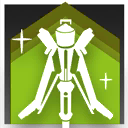 | 自動回復 | 手動発動 | 8 | 28 | 15 | スキル発動中、所持コストが徐々に増加（合計13） 自身と「うつろう水影」の攻撃力+50%、攻撃速度+50 | |
| ミュルジス | 6 | 先鋒 | 戦術家 | スキル2 | 生態系統結合 | 自動回復 | 手動発動 | 18 | 35 | 15 | 所持コスト+15、自身と「うつろう水影」の攻撃力+50%。「うつろう水影」が近距離オペレーターをコピーしている場合、1秒ごとにHPが最大値の5%回復し、25%の加護を獲得する。遠距離オペレーターをコピーしている場合、「うつろう水影」の通常攻撃が2連撃になり、ランダムで攻撃範囲内の対象を攻撃する | ||
| ミュルジス | 6 | 先鋒 | 戦術家 | スキル3 | ノンエントロピー適応 | 自動回復 | 手動発動 | 18 | 35 | 15 | 所持コスト+15、自身と「うつろう水影」の攻撃力+50%。「うつろう水影」が近距離オペレーターをコピーしている場合、2秒ごとに周囲8マス内にいる敵全員を普通の力で自身の中心に引き寄せ、さらにブロック中の敵全員を持続的にスタンさせる。遠距離オペレーターをコピーしている場合、すべての「うつろう水影」を再召喚し、さらに「うつろう水影」の攻撃時、対象を1.5秒間バインド状態にする | ||
| アイリーニ | 6 | 前衛 | 剣豪 | スキル1 | 舞風 | 攻撃回復 | 自動発動 | 0 | 3 | - | 次の通常攻撃時、対象に攻撃力の200%の物理ダメージを与え、1秒間浮遊させ、さらに追加で攻撃力の200%の物理ダメージを与える | ||
| アイリーニ | 6 | 前衛 | 剣豪 | スキル2 | 裂潮 | 攻撃回復 | 手動発動 | 6 | 8 | - | 前方一定範囲内の地面にいる敵最大6体に攻撃力の400%の物理ダメージを与え、その内重量ランクが3以下の敵を4秒間浮遊させる 2回チャージ可能 | チャージ | |
| アイリーニ | 6 | 前衛 | 剣豪 | スキル3 | 判決 | 攻撃回復 | 手動発動 | 16 | 24 | - | 周囲の全ての地面にいる敵に攻撃力の300%の物理ダメージを与え、4秒間浮遊させる。その後素早く12回砲撃を行い、砲撃するたびにランダムな敵に攻撃力の250%の物理範囲ダメージを与える | ||
| ヴィーナ・ヴィクトリア | 6 | 前衛 | 術戦士 | スキル1 | 栄光再鋳 | 自動回復 | 自動発動 | 0 | 5 | - | 次の通常攻撃時、隣接4マスの地面上にいる敵全員に追加で攻撃力の180%の確定ダメージを与える | ||
| ヴィーナ・ヴィクトリア | 6 | 前衛 | 術戦士 | スキル2 | 故地への進撃 | 自動回復 | 自動発動 | 0 | 70 | - | パッシブ：第一素質の効果範囲内に2名以上の味方ユニットがいる場合、自身のSP回復速度+0.5sp/秒 自動発動：攻撃範囲+1マス、攻撃力+180%、攻撃対象数+1 退場まで効果継続 | 永続 | |
| ヴィーナ・ヴィクトリア | 6 | 前衛 | 術戦士 | スキル3 | 我が名において | 自動回復 | 手動発動 | 35 | 50 | 25 | 第一素質の効果範囲内の配置可能な地面マスに「黄金の誓い」を召喚する。スキル発動中、自身は第一素質の効果範囲内の味方ユニットがブロック中の敵を攻撃でき、攻撃力+190%、攻撃対象数+3、攻撃間隔短縮、通常攻撃が対象に確定ダメージを与えるようになる | ||
| ヴィヴィアナ | 6 | 前衛 | 術戦士 | スキル1 | 光影穿つ剣 | 自動回復 | 自動発動 | 0 | 4 | - | 次の通常攻撃時、攻撃力が200%まで上昇し、攻撃対象を2回攻撃する オーバーチャージ追加効果：攻撃距離+2、攻撃の回数が3回になる | オーバーチャージ | |
| ヴィヴィアナ | 6 | 前衛 | 術戦士 | スキル2 | 影払う燭火 | 自動回復 | 手動発動 | 15 | 25 | 35 | 攻撃力+40%、防御力+160%、ブロック数+1、ブロック中の敵全員を同時に攻撃。攻撃時、20%の確率で攻撃が攻撃力の150%の2連撃に変化し、対象の攻撃速度を40奪取（最大40まで奪取可能。スキル終了、またはヴィヴィアナ退場まで効果継続） | ||
| ヴィヴィアナ | 6 | 前衛 | 術戦士 | スキル3 | 「明滅」 | 自動回復 | 手動発動 | 18 | 25 | 15 | 攻撃間隔延長、攻撃力+110%、防御力+90%、術耐性+25、通常攻撃が2連撃になり、第二素質の発動確率が2.5倍まで上昇し、優先して敵【エリート】・【ボス】を攻撃する 2回目以降スキル使用時、攻撃距離+2、通常攻撃が3連撃になり、持続時間が25秒まで延長 | ||
| ウルピアヌス | 6 | 前衛 | 重剣士 | スキル1 | 成すべき接触 | 自動回復 | 自動発動 | 0 | 4 | - | 前方に錨を投げ、目標地点の周囲一定範囲内にいる最大2体の敵を相当の力で引き寄せ、攻撃力の270%の物理ダメージを与える | ||
| ウルピアヌス | 6 | 前衛 | 重剣士 | スキル2 | 維持すべき境界 | 自動回復 | 自動発動 | 0 | 70 | - | 第一素質の効果が2倍まで上昇、ブロック数+1、最大HP+60%、攻撃力+160% 退場まで効果継続 | 永続 | |
| ウルピアヌス | 6 | 前衛 | 重剣士 | スキル3 | 拓くべき活路 | 自動回復 | 手動発動 | 20 | 25 | 25 | 最大HP+80%、攻撃力+260%、前方に錨を投げ、敵に当たるか最大距離に達すると、その周囲にいる敵全員に攻撃力の160%の物理ダメージ与え、6秒間スタンさせる。錨の停止した位置が配置可能なマスの場合、ウルピアヌスはそのマスに移動する 手動でスキルを中止することができ、スキル終了時ウルピアヌスは元の位置に戻る | ||
| エンテレケイア | 6 | 前衛 | 鎌撃士 | スキル1 | 薔薇の残影 | 攻撃回復 | 自動発動 | 0 | 2 | - | 次の通常攻撃時、攻撃力が175%まで上昇し、攻撃対象に2回攻撃 | ||
| エンテレケイア | 6 | 前衛 | 鎌撃士 | スキル2 | 深紅の抱擁 | 自動回復 | 手動発動 | 15 | 20 | 12 | 攻撃しなくなり、自身と地面マスにいる他の味方ユニット1名を中心に回転する血の鎌を召喚し、鎌と接触している敵に0.5秒ごとに自身の攻撃力の195%の物理ダメージを与える | ||
| エンテレケイア | 6 | 前衛 | 鎌撃士 | スキル3 | 霊魂と欲望の惜別 | 自動回復 | 手動発動 | 22 | 30 | 20 | 攻撃範囲拡大、攻撃力+135%、攻撃速度+100、攻撃範囲内の地面マスにいるHPが最も高い敵を最大3体選択し、対象のステータスと残りHPの60%のHPを有する「心燭」を召喚する。「心燭」への攻撃時は、必ず攻撃力の35%以上のダメージを与え、対象の敵も与えたダメージと同量のHPを失う 「心燭」はエンテレケイアの攻撃しか受けない | ||
| シルバーアッシュ | 6 | 前衛 | 領主 | スキル1 | 強撃γ | 攻撃回復 | 自動発動 | 0 | 2 | - | 次の通常攻撃時、攻撃力が290%まで上昇 | ||
| シルバーアッシュ | 6 | 前衛 | 領主 | スキル2 | 雪境生存戦略 | 自動回復 | 手動発動 | 0 | 5 | - | 発動する度初期状態と次の状態とが切り替わる： 攻撃範囲縮小、防御力+100%、1秒ごとにHPが最大値の6.0%回復 | 切替 | |
| シルバーアッシュ | 6 | 前衛 | 領主 | スキル3 | 真銀斬 | 自動回復 | 手動発動 | 75 | 90 | 30 | 防御力-70%、攻撃力+200%、攻撃範囲拡大、敵最大6体を同時に攻撃（近接攻撃と見なす） | ||
| ズオ・ラウ | 6 | 前衛 | 武者 | スキル1 | 破虜 | 自動回復 | 自動発動 | 6 | 4 | - | 次の通常攻撃時、攻撃力が200%まで上昇し、自身のHPが最大値の80%を下回っている場合ダメージ発生回数+1、50%を下回っている場合は代わりに+2になる 3回チャージ可能 | チャージ | |
| ズオ・ラウ | 6 | 前衛 | 武者 | スキル2 | 行険 | 自動回復 | 手動発動 | 13 | 20 | 12 | HPが現在値の50%減少し、最大HPの120%のバリアを獲得し、攻撃力+170%、ブロック数+1、さらにブロック中の敵全員に攻撃 バリアは最大HPの2倍まで獲得でき、スキル終了後、残りのバリア値を徐々に失う | 自傷 | |
| ズオ・ラウ | 6 | 前衛 | 武者 | スキル3 | 右序有炎 | 自動回復 | 手動発動 | 10 | 25 | - | 前方に7回斬撃を繰り出し、毎回最大3体の敵に攻撃力の245%の物理ダメージを与える（最後の一撃のダメージ係数は2倍、さらに対象を5秒間スタンさせる）。スキル発動中、特性によるHP回復は回復量の3倍に値するバリアを獲得に変わる バリアは最大HPの2倍まで獲得でき、15秒間持続可能 | ||
| スカジ | 6 | 前衛 | 勇士 | スキル1 | 迅速攻撃γ | 自動回復 | 手動発動 | 15 | 35 | 35 | 攻撃力+45%、攻撃速度+45 | ||
| スカジ | 6 | 前衛 | 勇士 | スキル2 | 波濤の裂刃 | パッシブ | パッシブ | - | - | - | 配置後の30秒間、攻撃力+170% | ||
| スカジ | 6 | 前衛 | 勇士 | スキル3 | 海嘯の悲歌 | 自動回復 | 手動発動 | 70 | 90 | 50 | 攻撃力、防御力、最大HP+130% | ||
| スルト | 6 | 前衛 | 術戦士 | スキル1 | レーヴァテイン | 攻撃回復 | 自動発動 | 0 | 2 | - | 次の通常攻撃時、攻撃力が310%まで上昇し、敵を倒すとSPを全回復する | ||
| スルト | 6 | 前衛 | 術戦士 | スキル2 | 災厄の巨焔 | 自動回復 | 手動発動 | 12 | 18 | 18 | 攻撃力+120%、攻撃範囲+1マス、敵2体を同時攻撃可能 攻撃対象が1体のみの場合、攻撃力が160%まで上昇 | ||
| スルト | 6 | 前衛 | 術戦士 | スキル3 | ラグナロク | 自動回復 | 手動発動 | 0 | 5 | - | 自身のHPを最大値まで回復 攻撃力+330%、攻撃範囲+2マス、敵3体を同時攻撃可能、最大HP+5000、HPが徐々に減少（減少割合は時間と共に増加し、60秒後に最大HPの20%/秒になる） 退場まで効果継続 | 永続 自傷 | |
| ソーンズ | 6 | 前衛 | 領主 | スキル1 | 攻撃力強化γ | 自動回復 | 手動発動 | 15 | 30 | 30 | 攻撃力+100% | ||
| ソーンズ | 6 | 前衛 | 領主 | スキル2 | 迎撃針棘 | 自動回復 | 手動発動 | 10 | 25 | 40 | 攻撃しなくなり、攻撃力+60%、防御力+110%、敵の通常攻撃を受ける時、前方一定範囲内の敵最大4体に遠距離攻撃を1回行う（0.6秒内発動上限1回） | ||
| ソーンズ | 6 | 前衛 | 領主 | スキル3 | デストレッツァ | 攻撃回復 | 手動発動 | 0 | 15 | 30 | 攻撃範囲拡大、攻撃力+60%、攻撃速度+25、攻撃力の100%で遠距離攻撃を行う 2回目以降スキル使用時、攻撃力と攻撃速度のスキル効果が1回目の2倍になり、退場まで効果継続 | 永続 | |
| チェン | 6 | 前衛 | 剣豪 | スキル1 | 鞘打ち | 攻撃回復 | 自動発動 | 0 | 4 | - | 次の通常攻撃時、敵に攻撃力の320%の物理ダメージを与え、1.5秒間スタンさせる | ||
| チェン | 6 | 前衛 | 剣豪 | スキル2 | 赤霄・抜刀 | 攻撃回復 | 手動発動 | 20 | 20 | - | 前方一定範囲内の敵最大7体に攻撃力の500%の物理ダメージと攻撃力の500%の術ダメージを与える | ||
| チェン | 6 | 前衛 | 剣豪 | スキル3 | 赤霄・絶影 | 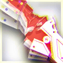 | 攻撃回復 | 手動発動 | 20 | 30 | - | 周囲一定範囲内の最も近い敵に対して攻撃力320%の物理ダメージを10回与え、最後の1回で4秒間スタンさせる 10回未満かつ他に敵がいる場合、攻撃し続ける | |
| チューバイ | 6 | 前衛 | 領主 | スキル1 | 留羽 | 攻撃回復 | 自動発動 | 0 | 4 | - | 次の通常攻撃時、対象を3秒間バインドさせる。バインド終了時、対象とその周囲の敵全員に攻撃力の300%の術ダメージを与える | ||
| チューバイ | 6 | 前衛 | 領主 | スキル2 | 承影 | 攻撃回復 | 手動発動 | 5 | 10 | 5 | 前方範囲内の地面にいる敵に攻撃力の300%の術ダメージを与える 攻撃範囲が変化し、攻撃力+140%、攻撃範囲内の地面にいる敵全員を足止めする。スキル終了時、範囲内の地面にいる敵に攻撃力の300%の物理ダメージを与える | ||
| チューバイ | 6 | 前衛 | 領主 | スキル3 | 問雪 | 自動回復 | 手動発動 | 45 | 55 | 30 | 攻撃範囲が拡大し、攻撃力+55%、通常攻撃が術攻撃になり、攻撃対象数+2。第一素質の与ダメージが2倍まで上昇。特性による遠距離攻撃時の攻撃力低下が無効化され、攻撃するたびに自身の攻撃速度+13（最大8回まで） | ||
| チョンユエ | 6 | 前衛 | 闘士 | スキル1 | 満盈 | 攻撃回復 | 手動発動 | 0 | 3 | - | 敵1体に攻撃力の400%の物理ダメージを与える。スキルが最大までチャージされている場合は、それをすべて消費し、そのチャージ数と同じ回数分のダメージを与える （3回チャージ可能） | チャージ | |
| チョンユエ | 6 | 前衛 | 闘士 | スキル2 | 払塵 | 自動回復 | 手動発動 | 9 | 10 | - | 周囲にいる敵最大4体に攻撃力の450%の物理ダメージを与え、その中で第一素質の効果が発動した対象を浮遊させる。その後、周囲の浮遊している敵全員の浮遊状態を解除し、対象に100%の確率で再度第一素質の効果を発動し、攻撃力の650%の物理ダメージを与える 2回チャージ可能 | チャージ | |
| チョンユエ | 6 | 前衛 | 闘士 | スキル3 | 我無 | 攻撃回復 | 手動発動 | 0 | 8 | - | 目標とその周囲の敵全員に攻撃力の380%の物理ダメージを与える このスキルを合計5回発動すると、チョンユエの攻撃範囲が拡大し、通常攻撃が2連撃になる。また、スキルが自動発動になり、ダメージ発生回数+1 | ||
| デーゲンブレヒャー | 6 | 前衛 | 剣豪 | スキル1 | 純粋なる力 | 攻撃回復 | 自動発動 | 0 | 3 | - | 次の通常攻撃時、周囲の地上にいる最大6体の敵に、攻撃力の220%の物理ダメージを2回与える | ||
| デーゲンブレヒャー | 6 | 前衛 | 剣豪 | スキル2 | 声なき嘲笑 | 攻撃回復 | 手動発動 | 10 | 12 | - | 前方一定範囲内の地面にいる最大6体の敵に対して、2回の斬撃を行う。ブロックされている敵が対象である場合、斬撃回数が3回になり、素質の発動率が100%に上昇する。斬撃は1回ごとに対象に攻撃力の310%の物理ダメージを与える 2回チャージ可能 | チャージ | |
| デーゲンブレヒャー | 6 | 前衛 | 剣豪 | スキル3 | 静寂に帰す | 自動回復 | 手動発動 | 20 | 30 | - | 範囲内の敵を対象に合計10回の斬撃を発動、同時に素質の発動率が100%に上昇。斬撃のたびに最大6体の敵に攻撃力の235%の物理ダメージを与えると同時に相当の力で引き寄せ、最後に攻撃力の330%の物理ダメージを1回与えると同時にかなりの力で引き寄せる | ||
| パラス | 6 | 前衛 | 教官 | スキル1 | 勝敗分かつ連撃 | 攻撃回復 | 自動発動 | 0 | 2 | - | 次の通常攻撃時、2回連続で攻撃力の175%の物理ダメージを与える | ||
| パラス | 6 | 前衛 | 教官 | スキル2 | 信念宿りし長鞭 | 自動回復 | 手動発動 | 10 | 25 | 25 | 攻撃範囲+1マス、攻撃力+80%、攻撃時85%の確率で攻撃した敵を0.2秒間スタンさせる | ||
| パラス | 6 | 前衛 | 教官 | スキル3 | 勇士に捧ぐ祝福 | 自動回復 | 手動発動 | 35 | 50 | 30 | 攻撃力+100%、通常攻撃が敵3体を同時に攻撃できる。自身の前方マスが近距離マスかつ味方オペレーター配置中であれば、その味方に以下の効果を付与する：HPが最大値の80%以上で攻撃力+50%の勇猛状態、防御力+35%、ブロック数+1。（前方マスが条件を満たしていなければ、効果の付与対象が自身になる） | ||
| ブレイズ | 6 | 前衛 | 強襲者 | スキル1 | 強撃γ | 攻撃回復 | 自動発動 | 0 | 2 | - | 次の通常攻撃時、攻撃力が290%まで上昇 | ||
| ブレイズ | 6 | 前衛 | 強襲者 | スキル2 | 鎖鋸拡張モジュール | 自動回復 | 自動発動 | 0 | 70 | - | 攻撃力+100%、防御力+35%、攻撃範囲拡大 退場まで効果継続 | 永続 | |
| ブレイズ | 6 | 前衛 | 強襲者 | スキル3 | ボイリングバースト | 自動回復 | 手動発動 | 25 | 35 | 10 | 攻撃力と防御力が徐々に+80%まで上昇し、前方1マスにいる敵全員を攻撃。効果時間終了後、一定範囲内の敵全員に攻撃力の400%の物理ダメージを与え、自身のHPが25%減少 | 自傷 | |
| ヘドリー | 6 | 前衛 | 重剣士 | スキル1 | 消えぬ炎刃 | 攻撃回復 | 自動発動 | 0 | 2 | - | 次の通常攻撃時、対象に攻撃力の260%の物理ダメージを与え、自身のHPを最大値の25%回復する | ||
| ヘドリー | 6 | 前衛 | 重剣士 | スキル2 | 重たき余燼 | 自動回復 | 手動発動 | 0 | 5 | - | パッシブ：攻撃力+40% アクティブ：発動する度初期状態と次の状態とが切り替わる： 攻撃間隔をわずかに延長し、ブロック数+1、攻撃した対象を1秒間スタンさせる | 切替 | |
| ヘドリー | 6 | 前衛 | 重剣士 | スキル3 | 死地の硝煙 | 自動回復 | 手動発動 | 40 | 50 | 70 | 1秒ごとにHPを100失い、スキル発動中に自身が攻撃した敵、および自身を攻撃した敵に、1秒ごとに200の確定ダメージを与える。攻撃距離+1、最大HP+60%、攻撃力+120%、攻撃するたびに自身のHPを5%回復し、25%の確率で対象を5秒スタンさせる | ||
| ペペ | 6 | 前衛 | 槌撃士 | スキル1 | ぺったん！ | 自動回復 | 自動発動 | 0 | 5 | - | 次の攻撃で攻撃力の290%の物理ダメージを与える。状態異常時にもスキルは発動し、その際状態異常を解除する 2回チャージ可能 | チャージ | |
| ペペ | 6 | 前衛 | 槌撃士 | スキル2 | トラブル解決術 | 自動回復 | 手動発動 | 18 | 25 | 18 | 攻撃範囲拡大、攻撃力+90%、攻撃速度+80、ランダムで攻撃範囲内の敵を攻撃する 発動するたびに、その次に発動するスキルの攻撃速度+40（最大2回まで効果重複可能） | ||
| ペペ | 6 | 前衛 | 槌撃士 | スキル3 | 時の激震 | 自動回復 | 手動発動 | 35 | 45 | 40 | 通常攻撃の間隔がわずかに延長し、攻撃力+240%、攻撃主対象を1.5秒、範囲ダメージを受けた対象を0.8秒スタンさせる。攻撃するたびにダメージ発生範囲が拡大し、攻撃力+25%（最大4回まで効果重複可能） | ||
| ヘラグ | 6 | 前衛 | 武者 | スキル1 | 新月 | 攻撃回復 | 自動発動 | 0 | 2 | - | 次の通常攻撃時、攻撃力が175%まで上昇し、2回攻撃 | ||
| ヘラグ | 6 | 前衛 | 武者 | スキル2 | 弦月 | 自動回復 | 手動発動 | 15 | 25 | 13 | 攻撃力+80%、通常攻撃が2回攻撃になり、物理回避率+75% | ||
| ヘラグ | 6 | 前衛 | 武者 | スキル3 | 満月 | 自動回復 | 手動発動 | 15 | 35 | 15 | 攻撃力+100%、攻撃範囲+2マス、敵最大3体を同時に攻撃 | ||
| マウンテン | 6 | 前衛 | 闘士 | スキル1 | 左鉤突き | 攻撃回復 | 自動発動 | 0 | 3 | - | 次の通常攻撃時、攻撃力が230%まで上昇、敵2体を同時に攻撃 | ||
| マウンテン | 6 | 前衛 | 闘士 | スキル2 | 猛虎の構え | 自動回復 | 手動発動 | 0 | 5 | - | 発動する度初期状態と次の状態とが切り替わる： 防御力-20%、攻撃範囲縮小、攻撃力+80%、ブロック数+1、ブロック中の敵全員を同時に攻撃、1秒ごとにHPが最大値の7.0%回復 | 切替 | |
| マウンテン | 6 | 前衛 | 闘士 | スキル3 | 震地砕岩撃 | 自動回復 | 手動発動 | 25 | 40 | 30 | 通常攻撃の間隔が延長し、攻撃力+100%、攻撃が2連撃になり、第一素質の発動確率が75%まで上昇、周囲一定範囲内の敵最大4体を同時に攻撃し、相当の力で突き飛ばす | ||
| ムリナール | 6 | 前衛 | 解放者 | スキル1 | 秘めたる怒り | 自動回復 | 手動発動 | 15 | 30 | 30 | 通常攻撃が攻撃対象に200%の物理ダメージを与える。防御力+60% | ||
| ムリナール | 6 | 前衛 | 解放者 | スキル2 | 癒えぬ悲しみ | 自動回復 | 手動発動 | 10 | 25 | 20 | 通常攻撃の間隔を延長し、攻撃範囲拡大、通常攻撃が攻撃力の190%の2回連続攻撃になる 手動でスキルを停止可能。スキル発動中に敵を倒すと、スキル終了時の特性による攻撃力リセットが無効化される | ||
| ムリナール | 6 | 前衛 | 解放者 | スキル3 | 輝かざる栄光 | 自動回復 | 手動発動 | 20 | 42 | 28 | 攻撃範囲拡大、特性の効果が2倍となり（ただし、スキル発動中に敵を1体倒すごとに倍率-10%）、攻撃時、攻撃範囲内の敵最大5体に攻撃力の180%の物理ダメージを与える。さらに味方【カジミエーシュ】が効果範囲内の敵を攻撃時、追加でムリナールの攻撃力の12%の確定ダメージを与える | ||
| レッシング | 6 | 前衛 | 勇士 | スキル1 | 強撃γ | 攻撃回復 | 自動発動 | 0 | 2 | - | 次の通常攻撃時、攻撃力が290%まで上昇 | ||
| レッシング | 6 | 前衛 | 勇士 | スキル2 | 苦行の縛り | パッシブ | パッシブ | - | - | 24 | 配置後、第一素質の効果が2.2倍まで上昇、攻撃力+60%、通常攻撃が2連撃になる | ||
| レッシング | 6 | 前衛 | 勇士 | スキル3 | 誓いの破棄 | 自動回復 | 手動発動 | 30 | 40 | 20 | スキル発動中状態異常を無効化し、最大HP+110%、ブロックされている敵を攻撃時、対象に攻撃力の220%の物理ダメージを与える 状態異常中でもスキルを発動でき、その際状態異常を解除することができるが、600の術ダメージを受ける | ||
| 聖約イグゼキュター | 6 | 前衛 | 鎌撃士 | スキル1 | 遺言の執行 | 攻撃回復 | 自動発動 | 0 | 8 | - | 攻撃範囲拡大、攻撃力+50%、攻撃時に対象の防御力を400無視 合計8発の弾薬を撃ち切るとスキルが終了（手動でスキルを停止可能） | 弾薬 | |
| 聖約イグゼキュター | 6 | 前衛 | 鎌撃士 | スキル2 | 近接銃術 | 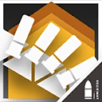 | 攻撃回復 | 手動発動 | 6 | 12 | - | 攻撃力+80%、防御力+80%、ブロック数+1、近接攻撃を受けると40%の確率で回避し、さらに弾薬を1発補充 合計12発の弾薬を撃ち切るとスキルが終了（手動でスキルを停止可能） | 弾薬 |
| 聖約イグゼキュター | 6 | 前衛 | 鎌撃士 | スキル3 | 聖約の裁き | 攻撃回復 | 手動発動 | 12 | 24 | - | 攻撃間隔をわずかに延長し、攻撃範囲拡大、攻撃力+180%、弾薬を1発消費するたびに攻撃力がさらに+6%（最大30回）、特性のHP回復効果が3倍まで上昇。スキル終了時、発動期間中に攻撃した対象に攻撃力の250%の物理ダメージを与える 合計16発の弾薬を撃ち切るとスキルが終了（手動でスキルを停止可能） | 弾薬 | |
| 百錬ガヴィル | 6 | 前衛 | 強襲者 | スキル1 | ピンポイントヒット | 自動回復 | 手動発動 | 10 | 25 | 25 | 攻撃力+80%、攻撃時、自身のHPを与ダメージの40%回復 | ||
| 百錬ガヴィル | 6 | 前衛 | 強襲者 | スキル2 | ブレイクラッシュ | 自動回復 | 手動発動 | 25 | 35 | 40 | 攻撃範囲拡大、攻撃力+180%、防御力+50%、未ブロックの敵を攻撃時、対象を相当の力で引き寄せる | ||
| 百錬ガヴィル | 6 | 前衛 | 強襲者 | スキル3 | ジャングルソウル | 自動回復 | 手動発動 | 25 | 35 | 25 | 攻撃力+140%、攻撃速度+100、ブロック数+2、スキル発動中は被ダメージを50%に軽減。スキル終了後、20秒間にかけてスキル効果によって軽減したダメージ分のHPを継続的に失う | ||
| 耀騎士ニアール | 6 | 前衛 | 勇士 | スキル1 | 夜に灯る白焔 | 自動回復 | 自動発動 | 0 | 60 | - | 攻撃範囲拡大、攻撃力+70%、攻撃速度+50 退場まで効果継続 | 永続 | |
| 耀騎士ニアール | 6 | 前衛 | 勇士 | スキル2 | 闇を払う暁光 | パッシブ | パッシブ | - | - | 27 | パッシブ：配置可能数にカウントされない 配置後、攻撃力+160%、シールド4枚獲得 効果時間終了後、自動的に撤退する。撤退後、次回までの再配置時間が+25%されるが、直前に配置したオペレーターが【カジミエーシュ】に属する場合、再配置時間延長効果を無効化する | ||
| 耀騎士ニアール | 6 | 前衛 | 勇士 | スキル3 | 大地を照らす烈陽 | 自動回復 | 手動発動 | 25 | 40 | 25 | 隣接4マス範囲内の地上配置可能マスに「ブレイジング・サン」を1本召喚し、その隣接4マス以内の敵全員に耀騎士ニアールの攻撃力の110%の確定ダメージを与え、3秒間スタンさせる 自身の攻撃範囲拡大、攻撃力+140%、防御力+100%、自身もしくは「ブレイジング・サン」にブロックされている敵への通常攻撃が確定ダメージを与えるようになる | ||
| サリア | 6 | 重装 | 庇護衛士 | スキル1 | 応急処置 | 自動回復 | 自動発動 | 0 | 4 | - | 次の通常攻撃が周囲一定範囲内にいるHPが最大値の50%以下の味方1人に対する治療行動になり、対象のHPを治療者の攻撃力の180%回復 3回チャージ可能 | チャージ | |
| サリア | 6 | 重装 | 庇護衛士 | スキル2 | 薬剤配置 | 自動回復 | 自動発動 | 0 | 7 | - | 範囲内の味方全員を治療し、対象のHPをサリアの攻撃力の140％回復 | ||
| サリア | 6 | 重装 | 庇護衛士 | スキル3 | 硬質化 | 自動回復 | 手動発動 | 70 | 80 | 30 | 近くにいる味方全員のHPを1秒ごとにサリアの攻撃力35%分回復 近くにいる敵全員の受ける術ダメージ+55%、移動速度-60% | ||
| サンクタ・ミキサー | 6 | 重装 | 哨戒衛士 | スキル1 | 銃騎士主任試験官 | 被撃回復 | 自動発動 | 3 | 4 | - | 次の通常攻撃が攻撃力の190%の物理ダメージを与える3連撃になり、自身の周囲8マスで弾薬消費系スキルを発動している他の味方【ラテラーノ】1名に1発給弾する | ||
| サンクタ・ミキサー | 6 | 重装 | 哨戒衛士 | スキル2 | オクトパス・チェーンソー | 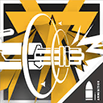 | 自動回復 | 手動発動 | 35 | 50 | - | 攻撃力+150%、防御力+130%。スキル発動中致命的なダメージを受けた際、即座に20発の弾薬を消費してその被ダメージを無効化する 合計50発の弾薬を撃ち切るとスキルが終了（手動でスキルを停止可能） | 弾薬 |
| サンクタ・ミキサー | 6 | 重装 | 哨戒衛士 | スキル3 | 引退前の布教 | 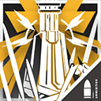 | 自動回復 | 手動発動 | 25 | 35 | - | スキル発動時に他の味方【ラテラーノ】全員に4発給弾する。攻撃範囲拡大、最大HP+80%、攻撃力+220%、防御力+80%。攻撃を停止し、攻撃を受けると攻撃範囲内の敵最大3体に1回反撃を行う。反撃の最小間隔は通常攻撃間隔の10% 合計30発の弾薬を撃ち切るとスキルが終了（手動でスキルを停止可能） | 弾薬 |
| シュウ | 6 | 重装 | 庇護衛士 | スキル1 | 化被草木 | 自動回復 | 自動発動 | 0 | 4 | - | 次の通常攻撃が周囲一定範囲内にいるHPが最大値の50%以下の味方1人に対する治療行動になり、対象のHPを治療者の攻撃力の180%回復 3回チャージ可能 | チャージ | |
| シュウ | 6 | 重装 | 庇護衛士 | スキル2 | 嘉禾満作 | 自動回復 | 手動発動 | 20 | 25 | 25 | 通常攻撃が周囲一定範囲内にいる最大2人の味方に対する治療行動になる。攻撃力+120%、ブロック数+1、第一素質の効果が1.5倍まで上昇 治療行動の間隔は通常攻撃の間隔と異なる | ||
| シュウ | 6 | 重装 | 庇護衛士 | スキル3 | 離離枯栄 | 自動回復 | 手動発動 | 30 | 45 | 30 | 治療範囲が拡大し、通常攻撃と同時に味方に対する治療行動をでき、攻撃力+50%。育種マスの上に敵がいる場合、スキル範囲内の味方ユニットの攻撃力+25%、攻撃速度+25。育種マスを通った敵に以下の効果を付与する：対象マスから2マス以上離れると、対象マスに戻される | ||
| ニェン | 6 | 重装 | 重盾衛士 | スキル1 | 錫灼 | 自動回復 | 手動発動 | 10 | 30 | 30 | 防御力+70%、攻撃力+45%、通常攻撃が術攻撃になる | ||
| ニェン | 6 | 重装 | 重盾衛士 | スキル2 | 銅印 | 自動回復 | 手動発動 | 35 | 50 | 35 | 攻撃しなくなる。防御力+130%、ブロック数+1、攻撃される度自身の攻撃力の90%の術ダメージで敵に反撃し、対象の一部の特殊能力を5秒間無効化する | ||
| ニェン | 6 | 重装 | 重盾衛士 | スキル3 | 鉄御 | 自動回復 | 手動発動 | 70 | 85 | 45 | 攻撃力+120%。周囲一定範囲内、自分以外の味方は防御力+80%、ブロック数+1、レジスト状態を付与される | ||
| ブレミシャイン | 6 | 重装 | 庇護衛士 | スキル1 | 光芒奔溢 | 自動回復 | 自動発動 | 0 | 4 | - | 次の通常攻撃時、敵に攻撃力の260%の物理ダメージを与え、周囲一定範囲内にいる味方1人のHPを攻撃力の150%回復 3回チャージ可能 | チャージ | |
| ブレミシャイン | 6 | 重装 | 庇護衛士 | スキル2 | 破邪輝光 | 被撃回復 | 手動発動 | 0 | 12 | 10 | 攻撃力+110%、自身と同じマス内にいる地面上の敵全員を睡眠させ、周囲一定範囲内の味方全員のHPを1秒ごとに攻撃力の20%回復 | ||
| ブレミシャイン | 6 | 重装 | 庇護衛士 | スキル3 | 英霊顕現 | 被撃回復 | 手動発動 | 15 | 25 | 30 | 攻撃力+110%、防御力+60%、攻撃時追加で対象に攻撃力の100%の術ダメージを与え、周囲一定範囲内の自身以外の味方1体のHPを攻撃力の100%回復 | ||
| ペナンス | 6 | 重装 | 破壊者 | スキル1 | 裁決のガベル | 自動回復 | 自動発動 | 0 | 3 | - | 次の通常攻撃時、追加で攻撃対象に攻撃力の200%の術ダメージを与える オーバーチャージ追加効果：攻撃時、攻撃力が200%まで上昇し、攻撃対象を5秒間スタンさせる | オーバーチャージ | |
| ペナンス | 6 | 重装 | 破壊者 | スキル2 | 確固たる決意 | 自動回復 | 手動発動 | 20 | 30 | 20 | 攻撃しなくなり、60%の加護状態を獲得し、1秒ごとに周囲の地面上にいる敵全員に攻撃力の140%の術ダメージを与え、スキル発動中第一素質による獲得するバリアの効果値+100% | ||
| ペナンス | 6 | 重装 | 破壊者 | スキル3 | 茨道を拓く | 被撃回復 | 手動発動 | 0 | 20 | 30 | 最大HPの130%までの被ダメージを吸収可能なバリアを獲得する。通常攻撃の間隔を延長し、攻撃力+400%、敵に攻撃されやすくなる | ||
| ホシグマ | 6 | 重装 | 重盾衛士 | スキル1 | 戦意昂揚 | 自動回復 | 手動発動 | 20 | 40 | 30 | 防御力+80%、攻撃力+40% | ||
| ホシグマ | 6 | 重装 | 重盾衛士 | スキル2 | 荊棘 | パッシブ | パッシブ | - | - | - | 防御力+30% 攻撃される度自身の攻撃力の100%の物理ダメージで敵に反撃する | 永続（パッシブ） | |
| ホシグマ | 6 | 重装 | 重盾衛士 | スキル3 | 般若 | 自動回復 | 手動発動 | 30 | 50 | 25 | 攻撃力+140%、防御力+90%、盾を回転し、前方1マスにいる敵全員を同時に攻撃 | ||
| ホルン | 6 | 重装 | 堅城砲手 | スキル1 | 照明榴弾 | 自動回復 | 自動発動 | 0 | 5 | - | 次の通常攻撃時、攻撃力の280%の物理ダメージを与え、遠距離攻撃の場合ダメージ発生範囲拡大、着弾マスの周囲一定範囲に敵のステルス状態を無効にする照明エリアを8秒間生成する 2回チャージ可能 | チャージ | |
| ホルン | 6 | 重装 | 堅城砲手 | スキル2 | テンペストオーダー | 自動回復 | 手動発動 | 18 | 25 | - | 通常攻撃が敵に攻撃力の240%の物理範囲ダメージを与える オーバードライブ：通常攻撃時、追加で敵に攻撃力の60%の術範囲ダメージを与え、手動でスキルを停止すると残り全ての弾薬を発射し、HPが最大値の60%減少 弾薬数は10発、手動でスキルを停止可能 | 弾薬 オーバードライブ 自傷 | |
| ホルン | 6 | 重装 | 堅城砲手 | スキル3 | 死地戦線 | 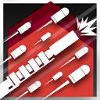 | 自動回復 | 手動発動 | 25 | 35 | 24 | 攻撃力+70%、攻撃間隔を大幅に短縮 オーバードライブ：攻撃力上昇値が+140%になり、HPが徐々に減少（減少割合は時間と共に増加し、12秒後に最大HPの12%/秒になる）手動でスキルを停止可能 | オーバードライブ 自傷 |
| マドロック | 6 | 重装 | 破壊者 | スキル1 | 防御力強化γ | 自動回復 | 手動発動 | 15 | 30 | 40 | 防御力+100% | ||
| マドロック | 6 | 重装 | 破壊者 | スキル2 | 岩崩し | 被撃回復 | 自動発動 | 0 | 4 | - | 次の通常攻撃時、自身のHPが最大値の6%回復、周囲一定範囲内の地面にいる敵全員に攻撃力の270%の物理ダメージを与え、30%の確率で敵を1.2秒間スタンさせる | ||
| マドロック | 6 | 重装 | 破壊者 | スキル3 | 悪土の血脈 | 自動回復 | 手動発動 | 15 | 25 | 30 | スキル発動時から10秒間行動しなくなり、ダメージを受けない状態に入り、周囲一定範囲内の敵全員の移動速度-60%。その後、範囲内の地面にいる敵全員を5秒間スタンさせ、通常攻撃の間隔が短縮し、攻撃力+140%、防御力+80%、ブロック中の敵全員を同時に攻撃 | ||
| ユー | 6 | 重装 | 本源衛士 | スキル1 | 椀飯振舞 | 被撃回復 | 手動発動 | 0 | 16 | 30 | パッシブ：敵に狙われやすくなる アクティブ：最大HP+70%、防御力+70%、攻撃されるたびに攻撃者にユーの攻撃力の50%の灼熱損傷を与える | ||
| ユー | 6 | 重装 | 本源衛士 | スキル2 | 客至如帰 | 自動回復 | 手動発動 | 20 | 26 | 20 | 周囲一定範囲内にいる敵全員に攻撃力の100%の術ダメージを与え、範囲内の地上にいる転移可能な対象を自身の位置に転移させる。ブロック数+2、最大HP+160%、攻撃力+290%、通常攻撃が術攻撃になる | ||
| ユー | 6 | 重装 | 本源衛士 | スキル3 | 竈中乾坤 | 自動回復 | 手動発動 | 42 | 55 | 45 | 最大HP+110%、攻撃力+110%、防御力+110%、第二素質の効果を戦場内のオペレーター全員にに付与する。戦場全体にまたがる炎の壁を作り出し、15%の確率で炎の壁を通過した敵の投射物を除去し、他の味方の攻撃が炎の壁を通過して敵に術ダメージを与えた際、追加でユーの攻撃力の10%の灼熱損傷を与える | ||
| ユーネクテス | 6 | 重装 | 決闘者 | スキル1 | トマホーク | パッシブ | パッシブ | - | - | - | 攻撃力+25%、防御力+25% | 永続（パッシブ） | |
| ユーネクテス | 6 | 重装 | 決闘者 | スキル2 | 烈震崩撃 | 自動回復 | 手動発動 | 15 | 28 | 18 | 攻撃間隔をわずかに延長し、攻撃力+180%。スキル発動中、自身がブロック中の敵全員をスタンさせる | ||
| ユーネクテス | 6 | 重装 | 決闘者 | スキル3 | 鋼鉄の意思 | 自動回復 | 手動発動 | 25 | 45 | 35 | 攻撃力+230%、防御力+160%、ブロック数+2、1秒ごとにHPを最大値の6%回復 効果時間終了後自身が5秒間スタン状態になる | ||
| 滌火ジェシカ | 6 | 重装 | 哨戒衛士 | スキル1 | 戦線維持 | 自動回復 | 自動発動 | 0 | 70 | - | 攻撃力+70%、自身と機動防盾の防御力+70%、機動防盾の継続時間+30秒 退場まで効果継続 | 永続 | |
| 滌火ジェシカ | 6 | 重装 | 哨戒衛士 | スキル2 | 掩護弾幕 | 自動回復 | 手動発動 | 25 | 30 | 15 | 攻撃範囲拡大、攻撃力+75%、攻撃間隔を大幅に短縮し、物理回避と術回避+75% | ||
| 滌火ジェシカ | 6 | 重装 | 哨戒衛士 | スキル3 | 飽和射撃 | 自動回復 | 手動発動 | 30 | 40 | - | 攻撃範囲+1、攻撃間隔が延長し、攻撃力+310%、防御力+80%、機動防盾の防御力+170% スキル発動中、機動防盾の方向に砲弾を放ち（機動防盾の配置一回につき一発のみ）、敵に命中するか着弾点に到達すると爆発し、範囲内にいるすべての敵に攻撃力の250%の物理ダメージを与え、6秒間スタンさせる 合計20発の弾薬を撃ち切るとスキルが終了（手動でスキルを停止可能） | 弾薬 | |
| Ash | 6 | 狙撃 | 速射手 | スキル1 | 援護射撃 | 自動回復 | 自動発動 | 0 | 45 | - | 攻撃力+15%、通常攻撃が2連撃になる 退場まで効果継続 | 永続 | |
| Ash | 6 | 狙撃 | 速射手 | スキル2 | 突撃戦法 | 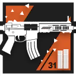 | 自動回復 | 手動発動 | 0 | 25 | - | 直ちに第一素質を発動し、通常攻撃の間隔を大幅に短縮する。スタン状態の敵を攻撃する時、攻撃力が250%まで上昇 合計31発の銃弾を撃ち切るとスキルが終了（手動でスキルを停止可能） | 弾薬 |
| Ash | 6 | 狙撃 | 速射手 | スキル3 | ブリーチング弾 | 自動回復 | 手動発動 | 0 | 25 | - | 前方にブリーチング弾を発射し、途中で接触した敵全員に攻撃力の300%の物理ダメージを与え、かなりの力で突き飛ばす。その後、爆発で周囲一定範囲内の敵に攻撃力の400%の物理ダメージを与える（高台にぶつかると直ちに爆発し、攻撃力の800%の物理ダメージを与える） 1回の配置につき、2回まで使用可能 | ||
| W | 6 | 狙撃 | 榴弾射手 | スキル1 | ハートのK | 自動回復 | 手動発動 | 0 | 16 | - | 榴弾を発射し、爆破範囲内の敵全員に攻撃力の350%の物理ダメージを与え、3秒間スタンさせる | ||
| W | 6 | 狙撃 | 榴弾射手 | スキル2 | びっくり箱 | 自動回復 | 自動発動 | 0 | 8 | - | 次の通常攻撃時、攻撃範囲内の配置可能マスに存続時間120秒の地雷を設置。敵が地雷の付近にいる時、地雷が爆発し、周囲一定範囲内の敵全員に攻撃力の280%の物理ダメージを与え、2.2秒間スタンさせる | ||
| W | 6 | 狙撃 | 榴弾射手 | スキル3 | D12 | 自動回復 | 手動発動 | 20 | 33 | - | 攻撃範囲内のHPが最も高い敵4体に爆弾を付着する。爆弾は一定時間後爆発し、周囲一定範囲内の敵全員に攻撃力の310%の物理ダメージを与え、5秒間スタンさせる | ||
| アルケット | 6 | 狙撃 | 速射手 | スキル1 | 飛散の矢 | 攻撃回復 | 自動発動 | 0 | 3 | - | 次の通常攻撃時、敵に攻撃力の230%の物理ダメージを与え、対象の周囲一定範囲内他の敵最大3体に攻撃力の180%の物理ダメージを与える | ||
| アルケット | 6 | 狙撃 | 速射手 | スキル2 | 追討の矢 | 攻撃回復 | 手動発動 | 0 | 9 | - | 攻撃力の140%の5回連続攻撃を行い、さらに攻撃対象周囲一定範囲内のまだ攻撃対象となっていない敵に連鎖攻撃を行う（連鎖するたびに攻撃回数が1回減少） 3回チャージ可能 | チャージ | |
| アルケット | 6 | 狙撃 | 速射手 | スキル3 | 暴風の矢 | 攻撃回復 | 手動発動 | 15 | 30 | 20 | 攻撃力+30%、攻撃範囲+1、通常攻撃が3連撃になり、敵2体を同時に攻撃 | ||
| ウィシャデル | 6 | 狙撃 | 投擲手 | スキル1 | クリアランス | 攻撃回復 | 自動発動 | 0 | 2 | - | 次の通常攻撃は余震がさらに2回発生し、対象全員を1.5秒間スタンさせる。この攻撃はダメージ発生範囲がやや拡大し、余震のダメージが攻撃力の120%になる | ||
| ウィシャデル | 6 | 狙撃 | 投擲手 | スキル2 | オーバーレネゲード | 自動回復 | 手動発動 | 15 | 25 | 25 | 攻撃力+35%、攻撃間隔を短縮、敵3体を同時に攻撃可能 オーバードライブ：通常攻撃が攻撃力の80%の4連撃になり、攻撃範囲内の敵をランダムで攻撃する 手動でスキルを停止可能 | オーバードライブ | |
| ウィシャデル | 6 | 狙撃 | 投擲手 | スキル3 | デイブレイクバースト | 自動回復 | 手動発動 | 40 | 50 | - | 即座に攻撃範囲内に「レヴァナントの影」を2つ召喚し（最大3体まで、スキル終了後も消失しない)、攻撃力+180%、攻撃間隔が大幅に延長し、攻撃時の攻撃力が220%まで上昇する。ダメージ発生範囲が大幅に拡大し、第一素質の発動率が100%まで上昇する 合計6発の弾薬を撃ち切るとスキルが終了（手動でスキルを停止可能） | 弾薬 | |
| エクシア | 6 | 狙撃 | 速射手 | スキル1 | アサルトモード | 攻撃回復 | 自動発動 | 0 | 4 | - | 次の通常攻撃時、3回連続で攻撃力の145%の物理ダメージを与える | ||
| エクシア | 6 | 狙撃 | 速射手 | スキル2 | バーストモード | 自動回復 | 手動発動 | 25 | 35 | 15 | 通常攻撃が攻撃力の125%での4回連続攻撃になる | ||
| エクシア | 6 | 狙撃 | 速射手 | スキル3 | オーバーロード | 自動回復 | 自動発動 | 20 | 30 | 15 | 通常攻撃が5回連続攻撃になり、攻撃間隔を短縮し、攻撃力が110%まで上昇 | ||
| シュヴァルツ | 6 | 狙撃 | 精密射手 | スキル1 | 強射 | 攻撃回復 | 自動発動 | 0 | 3 | - | 次の通常攻撃時、攻撃力が220%まで上昇し、素質の発動率が80%まで上昇 | ||
| シュヴァルツ | 6 | 狙撃 | 精密射手 | スキル2 | 暮色の慧眼 | 自動回復 | 手動発動 | 20 | 30 | 40 | 攻撃力+130%、素質の発動率が50%まで上昇 | ||
| シュヴァルツ | 6 | 狙撃 | 精密射手 | スキル3 | ターミネート | 自動回復 | 手動発動 | 12 | 25 | 25 | 攻撃範囲が前方4マスになり、通常攻撃の間隔をわずかに延長。 攻撃力+180%、素質の発動率が100%まで上昇 | ||
| ティフォン | 6 | 狙撃 | 破城射手 | スキル1 | 迅速攻撃γ | 自動回復 | 手動発動 | 15 | 35 | 35 | 攻撃力+45%、攻撃速度+45 | ||
| ティフォン | 6 | 狙撃 | 破城射手 | スキル2 | 氷原の掟 | 自動回復 | 手動発動 | 42 | 50 | 20 | 攻撃力+50%、攻撃するたびに矢を2本放ち（違う対象を優先して攻撃）、さらに40%の確率で対象を1秒間スタンさせる 2回目以降スキル使用時は退場まで効果継続 | 永続 | |
| ティフォン | 6 | 狙撃 | 破城射手 | スキル3 | 「永久なる狩猟」 | 自動回復 | 手動発動 | 25 | 40 | - | 攻撃範囲内の敵を1体マークする。攻撃間隔が大幅に延長し、通常攻撃が対象へ矢の雨を降らせる攻撃に変化する。矢の雨はマークした対象の周囲にいる敵をランダムで攻撃し、攻撃力の175%の物理ダメージを5回与え、さらに対象を0.4秒スタンさせる 合計10発の弾薬を撃ち切るとスキルが終了（手動でスキルを停止可能） | 弾薬 | |
| ナラントゥヤ | 6 | 狙撃 | 旋輪射手 | スキル1 | 旋刃 | 自動回復 | 手動発動 | 0 | 5 | - | 発動する度初期状態と次の状態とが切り替わる： 攻撃距離-1、旋回投擲物が攻撃力の190%の物理ダメージを与え、敵の間で数回跳躍する（最大3回まで） | 切替 | |
| ナラントゥヤ | 6 | 狙撃 | 旋輪射手 | スキル2 | 悪夢 | 攻撃回復 | 手動発動 | 8 | 15 | 30 | 攻撃時、対象に攻撃力の250%の物理ダメージを与え、1秒間足止めする。投擲物が対象に命中すると、さらに前方にわずかに進んでから手元に戻る。戻る途中に通過した全ての敵に攻撃力200%の物理ダメージを与える | ||
| ナラントゥヤ | 6 | 狙撃 | 旋輪射手 | スキル3 | 日喰 | 自動回復 | 手動発動 | 20 | 30 | 20 | 攻撃時、同時に3個の旋回投擲物を放つ（それぞれ攻撃力の175%の物理ダメージを与える）。投擲物を全て回収した時ナラントゥヤは周囲8マスにいる最大3体の敵に攻撃力の160%の物理ダメージを与え1秒間足止めする | ||
| パゼオンカ | 6 | 狙撃 | 精密射手 | スキル1 | イアンボス | 攻撃回復 | 自動発動 | 0 | 20 | - | 攻撃力+60%、攻撃時、40%の確率でその攻撃のみ攻撃力が225%に上昇 退場まで効果継続 | 永続 | |
| パゼオンカ | 6 | 狙撃 | 精密射手 | スキル2 | リフレイン | 自動回復 | 手動発動 | 9 | 9 | - | パッシブ：「タイプライター」再配置時間が50%まで短縮 アクティブ：前方の敵に3回連続で自身の攻撃力の230%の物理ダメージを与える 2回チャージ可能 | チャージ | |
| パゼオンカ | 6 | 狙撃 | 精密射手 | スキル3 | レザーシャープペン | 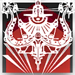 | 自動回復 | 手動発動 | 23 | 35 | 30 | 攻撃範囲拡大、通常攻撃の間隔を短縮し、攻撃時、攻撃力が200%まで上昇し、前方直線3マス以内の敵を攻撃時、上昇の効果値が255%になる | |
| ファートゥース | 6 | 狙撃 | 戦術射手 | スキル1 | 迅速攻撃γ | 自動回復 | 手動発動 | 15 | 35 | 35 | 攻撃力+45%、攻撃速度+45 | ||
| ファートゥース | 6 | 狙撃 | 戦術射手 | スキル2 | 戦術連携 | 自動回復 | 手動発動 | 25 | 40 | 35 | 攻撃範囲外のブロックされている敵を攻撃可能になり、攻撃速度+110 | ||
| ファートゥース | 6 | 狙撃 | 戦術射手 | スキル3 | フェザーアロー | 自動回復 | 手動発動 | 10 | 20 | 20 | 攻撃範囲が前方距離無限の直線になり、攻撃力+140%、通常時の攻撃範囲外の敵を攻撃する場合、与ダメージが140%まで上昇 | ||
| フィアメッタ | 6 | 狙撃 | 榴弾射手 | スキル1 | 「直視せよ」 | 攻撃回復 | 手動発動 | 5 | 10 | 30 | 攻撃範囲+1、攻撃力+100% | ||
| フィアメッタ | 6 | 狙撃 | 榴弾射手 | スキル2 | 「慚愧せよ」 | 攻撃回復 | 手動発動 | 0 | 7 | - | 前方に向かって灼痕弾を発射する。弾丸が一定の距離を飛ぶごとに、弾道に灼熱の跡を残し、攻撃範囲の最も遠いところに到達すると爆発し400%の物理ダメージを与える。その後跡が順番に爆発し200%の物理ダメージを与える。 | ||
| フィアメッタ | 6 | 狙撃 | 榴弾射手 | スキル3 | 「償還せよ」 | 攻撃回復 | 手動発動 | 0 | 15 | - | 攻撃範囲内の正面一番遠いマスを攻撃し続け、ダメージ発生範囲が拡大し、攻撃力が125%まで上昇する。対象マスの周囲一定範囲内の敵に対する攻撃力が更に220%まで上昇する。 退場まで効果継続、手動でスキルを停止可能 | 永続 | |
| レイ | 6 | 狙撃 | 狩人 | スキル1 | スラストショット | 自動回復 | 手動発動 | 10 | 10 | - | 追加の特殊弾で対象を攻撃し、攻撃力の450%の物理ダメージを与えると同時にかなりの力で突き飛ばす。この攻撃で対象を撃破した場合、次に装填を行う際に2発の弾を追加装填できる 2回チャージ可能 | チャージ | |
| レイ | 6 | 狙撃 | 狩人 | スキル2 | 広域警戒 | 攻撃回復 | 自動発動 | 0 | 16 | - | パッシブ：サンドビースト撤退時、その周囲のマスにいた対象に着弾した弾を回収する アクティブ：攻撃範囲拡大、攻撃力+120%、サンドビーストの再配置時間-40% 退場まで効果継続 | 永続 | |
| レイ | 6 | 狙撃 | 狩人 | スキル3 | 「求めた光」 | 自動回復 | 手動発動 | 20 | 30 | 16 | 即座に弾の装填を行い、装弾数が最大になるまで攻撃しなくなる。 装填間隔が大幅に短縮、攻撃範囲拡大。通常攻撃が敵に攻撃力の330%の物理ダメージを与えると同時に対象を2秒間バインドする スキル発動中に敵を撃破すると、スキル終了時にSPを10回復する | ||
| レミュアン | 6 | 狙撃 | 戦術射手 | スキル1 | 再開の挨拶 | 攻撃回復 | 自動発動 | 0 | 8 | - | 攻撃時、攻撃力が210%に上昇し、攻撃対象数+1 合計6発の弾薬を撃ち切るとスキルが終了（手動でスキルを停止可能） | 弾薬 | |
| レミュアン | 6 | 狙撃 | 戦術射手 | スキル2 | 帰郷の誘い | 自動回復 | 手動発動 | 15 | 30 | - | 攻撃速度+80、攻撃力+70%、戦場に指名手配中の敵がいる場合、対象に最大3.5秒間照準を合わせた後、弾薬を消費して回避不可の狙撃を行う（その間攻撃力が180%から425%まで徐々に上昇し、攻撃力が敵の残りHPと防御力の合計値よりも高くなった場合、照準を停止し即座に攻撃を行う） 合計7発の弾薬を撃ち切るとスキルが終了（手動でスキルを停止可能） | 弾薬 | |
| レミュアン | 6 | 狙撃 | 戦術射手 | スキル3 | 礼砲・強制追悼 | 自動回復 | 手動発動 | 32 | 38 | - | 攻撃を停止し、0.5秒ごとに弾薬を1発消費して範囲内にいる敵を順次ロックオンし、スキル終了時にロックオンした全ての敵の位置に攻撃力の300%の範囲物理ダメージを与える爆撃を行う（爆心地の対象への与ダメージは攻撃力の450%まで上昇） 合計5発の弾薬を撃ち切るとスキルが終了（手動でスキルを停止可能） | 弾薬 | |
| ロサ | 6 | 狙撃 | 破城射手 | スキル1 | 攻撃力強化γ | 自動回復 | 手動発動 | 15 | 30 | 30 | 攻撃力+100% | ||
| ロサ | 6 | 狙撃 | 破城射手 | スキル2 | スプリットショット | 自動回復 | 手動発動 | 45 | 65 | 60 | 攻撃力+90%、攻撃対象数+1 | ||
| ロサ | 6 | 狙撃 | 破城射手 | スキル3 | ラヴィーナシュート | 自動回復 | 手動発動 | 15 | 30 | 8 | 攻撃力+25%、重量ランクが最も高い敵最大4体にバインドランスを発射する。 スキル発動中、バインドランスが命中した対象すべてをバインドさせ、1秒ごとに攻撃力の100%の物理ダメージを与える | ||
| ロスモンティス | 6 | 狙撃 | 投擲手 | スキル1 | 意識拡張 | 攻撃回復 | 自動発動 | 0 | 2 | - | 次の通常攻撃時、追加で攻撃力の180%の術ダメージを与える | ||
| ロスモンティス | 6 | 狙撃 | 投擲手 | スキル2 | 神経遮断 | 自動回復 | 手動発動 | 20 | 30 | 40 | 通常攻撃の間隔を延長し、攻撃力+55%、ダメージ発生範囲拡大、余震がさらに2回発生する。攻撃と余震が敵に命中時、20%の確率で1.5秒間スタンさせる | ||
| ロスモンティス | 6 | 狙撃 | 投擲手 | スキル3 | 「君が望むままに」 | 自動回復 | 手動発動 | 35 | 60 | 30 | 通常攻撃の間隔を短縮し、攻撃力+75%。通常攻撃がブロックされている敵のみを選択し、2体を同時に攻撃する。攻撃範囲内の近距離配置マスに戦術装備を配置（配置後、周囲にいる敵全員を3秒間スタンさせる、戦術装備にブロックされている敵の防御力-160） | ||
| 遊龍チェン | 6 | 狙撃 | 散弾射手 | スキル1 | 高圧ショット | 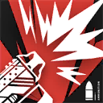 | 攻撃回復 | 自動発動 | 0 | 5 | - | 攻撃力+100%、特性の効果を攻撃範囲内の敵全員に適用する 合計4発の水弾を撃ち切るとスキルが終了（手動でスキルを停止可能） | 弾薬 |
| 遊龍チェン | 6 | 狙撃 | 散弾射手 | スキル2 | バイオレットナイト | 自動回復 | 手動発動 | 12 | 20 | - | 攻撃力+80%、攻撃時、攻撃範囲内に5秒間水域を生成する。水域の範囲内にいる敵全員の移動速度-35%、防御力-170（同一対象への効果は重複しない） オーバーチャージ追加効果：装弾数が20発になる 合計8発の水弾を撃ち切るとスキルが終了（手動でスキルを停止可能） | 弾薬 オーバーチャージ | |
| 遊龍チェン | 6 | 狙撃 | 散弾射手 | スキル3 | ホリデーストーム | 自動回復 | 手動発動 | 30 | 55 | - | 攻撃範囲拡大、攻撃力+100%、通常攻撃が敵に2回ダメージを与え、攻撃範囲内の敵全員に特性の効果を適用する。攻撃時、攻撃範囲内に5秒間水域を生成する。水域の範囲内にいる敵全員の移動速度-45%、防御力-220（同一対象への効果は重複しない） 攻撃する度に水弾が2発消費され、合計32発の水弾を撃ち切るとスキルが終了（手動でスキルを停止可能） | 弾薬 | |
| イフリータ | 6 | 術師 | 爆撃術師 | スキル1 | 猛火 | 自動回復 | 手動発動 | 20 | 40 | 20 | 攻撃力+20%、攻撃速度+80 | ||
| イフリータ | 6 | 術師 | 爆撃術師 | スキル2 | 爆炎 | 自動回復 | 自動発動 | 0 | 7 | - | 次の通常攻撃時、敵に攻撃力の250%の術ダメージを与え、3秒間防御力-300、やけど状態（継続ダメージを受ける）にする 3回チャージ可能 | チャージ | |
| イフリータ | 6 | 術師 | 爆撃術師 | スキル3 | 灼獄 | 自動回復 | 手動発動 | 0 | 28 | 20 | 攻撃範囲内、地面にいる敵全員に1秒ごとに攻撃力の140%の術ダメージを与え、術耐性-20 自身のHPが1秒ごとに最大値の2%減少 | 自傷 | |
| エイヤフィヤトラ | 6 | 術師 | 中堅術師 | スキル1 | 二重詠唱 | 自動回復 | 手動発動 | 25 | 35 | 25 | 攻撃速度+60 2回目以降スキル使用時、更に攻撃力+60% | ||
| エイヤフィヤトラ | 6 | 術師 | 中堅術師 | スキル2 | イグニッション | 自動回復 | 自動発動 | 0 | 5 | - | 次の通常攻撃時、敵に攻撃力の370%の術ダメージを与え、攻撃対象の周囲の敵に半分のダメージを与える、更に6秒間術耐性-25% 3回チャージ可能 | チャージ | |
| エイヤフィヤトラ | 6 | 術師 | 中堅術師 | スキル3 | イラプション | 自動回復 | 手動発動 | 55 | 80 | 15 | 攻撃力+130%、攻撃範囲拡大、通常攻撃の間隔を大幅に短縮、ランダムで攻撃範囲内の敵最大6体を攻撃 | ||
| エーベンホルツ | 6 | 術師 | 秘術師 | スキル1 | アッチェレランド | 自動回復 | 手動発動 | 5 | 15 | 5 | 攻撃範囲変化、攻撃間隔を超大幅に短縮し、通常攻撃時、敵に攻撃力の50%の術ダメージを与える | ||
| エーベンホルツ | 6 | 術師 | 秘術師 | スキル2 | 旧日の残響 | 自動回復 | 自動発動 | 0 | 13 | - | 全ての攻撃エネルギーを消費し、攻撃範囲内の配置可能マスに消費エネルギー数+1体の「過去の残像」を召喚（30秒継続）、残像は敵が接近時に発動し、周囲の敵に攻撃力の245%の術ダメージを与え、相当の力で敵を自身の中心に引き寄せる | ||
| エーベンホルツ | 6 | 術師 | 秘術師 | スキル3 | 無響の声 | 自動回復 | 手動発動 | 10 | 20 | 30 | 攻撃速度+80、攻撃力+65%、エリートまたはボスのみを攻撃対象とし、第一素質のダメージ上昇効果を元々の140%まで上昇 手動でスキルを停止可能 | ||
| カーネリアン | 6 | 術師 | 法陣術師 | スキル1 | 熱砂護陣 | 自動回復 | 手動発動 | 5 | 18 | 20 | 攻撃力+60%、防御力+100% オーバーチャージ追加効果：特性の効果はスキル発動期間中も有効になる | オーバーチャージ | |
| カーネリアン | 6 | 術師 | 法陣術師 | スキル2 | 砂縛地獄 | 自動回復 | 手動発動 | 10 | 25 | 25 | 通常攻撃の間隔を大幅に短縮し、攻撃対象を0.3秒足止めする オーバーチャージ追加効果：攻撃力+20%、「0.3秒の足止め」が「0.6秒のバインド」に変化する | オーバーチャージ | |
| カーネリアン | 6 | 術師 | 法陣術師 | スキル3 | 喰殺ノ刻印 | 自動回復 | 手動発動 | 5 | 28 | 21 | 攻撃範囲拡大、攻撃力が+280%になるまで徐々に上昇 オーバーチャージ追加効果：攻撃が命中した対象のカーネリアンからの被ダメージは、スキル終了まで+20%（最大5回まで重複可能） | オーバーチャージ | |
| ケオベ | 6 | 術師 | 中堅術師 | スキル1 | 「つめたいおの」 | 自動回復 | 自動発動 | 0 | 6 | - | 次の通常攻撃時、攻撃力が210%まで上昇し、攻撃対象に3秒間バインドさせる。ブロックされていない敵を優先して攻撃する 3回チャージ可能 | チャージ | |
| ケオベ | 6 | 術師 | 中堅術師 | スキル2 | 「あついないふ」 | 自動回復 | 手動発動 | 25 | 40 | 40 | 通常攻撃の間隔を超大幅に短縮し、防御力が一番高い敵を優先して攻撃する | ||
| ケオベ | 6 | 術師 | 中堅術師 | スキル3 | 「おもたいやり」 | 自動回復 | 手動発動 | 55 | 80 | 60 | 攻撃範囲拡大、攻撃力+210%、通常攻撃が物理攻撃になり、防御力が一番低い敵を優先して攻撃し、対象の一部の特殊能力を5秒間無効化する | ||
| ゴールデングロー | 6 | 術師 | 操機術師 | スキル1 | スパーキング | 自動回復 | 手動発動 | 20 | 35 | 25 | 攻撃力+40%、攻撃速度+50、浮遊ユニットの数+1、自動索敵して攻撃する浮遊ユニットを放出する 索敵中の浮遊ユニットは目標が倒されるか自爆時、あるいはスキル終了時、索敵を中断する | ||
| ゴールデングロー | 6 | 術師 | 操機術師 | スキル2 | インパルスカレント | 自動回復 | 自動発動 | 0 | 70 | - | 攻撃力+60%、攻撃範囲拡大、浮遊ユニットの数+1、自動索敵して攻撃する浮遊ユニットを放出する 索敵中の浮遊ユニットは目標が倒されるか自爆時、あるいはスキル終了時、索敵を中断する 退場まで効果継続 | 永続 | |
| ゴールデングロー | 6 | 術師 | 操機術師 | スキル3 | ゴールデングロー | 自動回復 | 手動発動 | 17 | 35 | 30 | 攻撃しなくなり、攻撃力+80%、攻撃範囲が戦場全体まで拡大し、浮遊ユニットの数+2、自動索敵して攻撃する浮遊ユニットを放出し、浮遊ユニットが攻撃時、攻撃対象を0.5秒足止めする 索敵中の浮遊ユニットは目標が倒されるか自爆時、あるいはスキル終了時、索敵を中断する | ||
| シー | 6 | 術師 | 拡散術師 | スキル1 | 工筆入魂 | 自動回復 | 自動発動 | 0 | 5 | - | 次の通常攻撃時、ダメージ発生範囲拡大、攻撃力の250%の術ダメージを与える 3回チャージ可能 | チャージ | |
| シー | 6 | 術師 | 拡散術師 | スキル2 | 潑墨淋漓 | 自動回復 | 手動発動 | 25 | 38 | 20 | 攻撃範囲拡大、攻撃力+55%、攻撃速度+55、攻撃範囲内にいる敵全員を同時に攻撃。さらにHPが最大値の半分以下の敵に与える術ダメージが130%まで上昇 | ||
| シー | 6 | 術師 | 拡散術師 | スキル3 | 写意攻苦 | 自動回復 | 手動発動 | 70 | 100 | 60 | 通常攻撃の間隔を延長し、ブロックされていない敵を優先して攻撃する。攻撃範囲とダメージ発生範囲拡大、攻撃力+120%、攻撃する度に攻撃対象のいるマス（配置可能な地面マス）に「小自在」（召喚から25秒後強制退場）を召喚/再召喚する | ||
| ニンフ | 6 | 術師 | 本源術師 | スキル1 | 心の笞刑 | 自動回復 | 手動発動 | 20 | 30 | 20 | 攻撃力+110%、攻撃対象に追加で術ダメージの15%の壊死損傷を与える。対象が壊死損傷の爆発効果中の場合、追加で攻撃力の50%の元素ダメージを与える | ||
| ニンフ | 6 | 術師 | 本源術師 | スキル2 | 心の戦慄 | 自動回復 | 手動発動 | 9 | 12 | - | 敵に攻撃力の400%の術ダメージを与え、5秒間恐怖状態にし、対象の周囲にいる敵全員に同等の術範囲ダメージを与えると同時に、与えた術ダメージの25%の壊死損傷を与える。攻撃を受けた敵が壊死損傷の爆発効果中の場合、第一素質の与ダメージが攻撃力の100%まで上昇する 2回チャージ可能 | チャージ | |
| ニンフ | 6 | 術師 | 本源術師 | スキル3 | 心の決壊 | 自動回復 | 手動発動 | 36 | 55 | 35 | 攻撃範囲拡大、攻撃力+220%、攻撃速度+60 同時に2体の敵を攻撃し、攻撃対象が壊死損傷の爆発効果中の場合、通常攻撃が敵に元素ダメージを与える | ||
| ネクラス | 6 | 術師 | 創霊術師 | スキル1 | 禍呼ぶ願い | 自動回復 | 手動発動 | 8 | 13 | - | パッシブ：「悲嘆する下僕」が召喚されるかグレードアップした際、周囲の敵全員に450%の術ダメージを与える アクティブ：全ての「悲嘆する下僕」を即座に再召喚する。戦場に「悲嘆する下僕」が存在しない場合は1体召喚する | ||
| ネクラス | 6 | 術師 | 創霊術師 | スキル2 | 枯れゆく命 | 自動回復 | 手動発動 | 14 | 20 | 12 | 攻撃範囲内の敵最大2体を睡眠させ、対象に0.5秒ごとに160%の術ダメージを与える。スキル発動中に対象が撃破されると、「悲嘆する下僕」を追加で2体召喚する | ||
| ネクラス | 6 | 術師 | 創霊術師 | スキル3 | 死に授く冠 | 自動回復 | 手動発動 | 5 | 16 | - | パッシブ：最大1体の「悲嘆する下僕」が特殊形態で召喚される。この形態の下僕はスキルでのみグレードアップ可能（最大6回まで） アクティブ：範囲内の敵全員に800%の術ダメージを与え、その後「悲嘆する下僕」1体を退場させ、特殊形態の下僕のHPを20%回復（退場した対象がグレードアップ済みの場合は回復量が2倍となる）し、グレードアップさせる。これを3回繰り返す | ||
| パッセンジャー | 6 | 術師 | 連鎖術師 | スキル1 | エレキチェーン | 自動回復 | 自動発動 | 0 | 5 | - | 次の通常攻撃時、攻撃力が250%まで上昇し、跳躍の最大対象数が4体になり、足止めの効果時間が1.5秒になる | ||
| パッセンジャー | 6 | 術師 | 連鎖術師 | スキル2 | フォーカスオーダー | 自動回復 | 手動発動 | 20 | 40 | 35 | 攻撃距離+1、攻撃力+30%、攻撃間隔かなり短縮し、攻撃の最大跳躍回数が5になる | ||
| パッセンジャー | 6 | 術師 | 連鎖術師 | スキル3 | ルミナスフラグメンツ | 自動回復 | 手動発動 | 0 | 30 | - | HPが最も高い敵1体の位置を中心に継続4秒のサンダーストームを生成し0.5秒ごとにサンダーストーム範囲内ランダムの敵1体に攻撃力の150%の追加攻撃を行う 2回チャージ可能 | チャージ | |
| ホルハイヤ | 6 | 術師 | 中堅術師 | スキル1 | 探求せんがため | 自動回復 | 自動発動 | 0 | 7 | - | 次の通常攻撃時、攻撃対象数+1、対象に攻撃力の300%の術ダメージを与える。攻撃対象が1体のみの場合、相手を4秒間浮遊させる 3回チャージ可能 | チャージ | |
| ホルハイヤ | 6 | 術師 | 中堅術師 | スキル2 | 星々のうねり | 自動回復 | 手動発動 | 25 | 30 | 16 | 通常攻撃が攻撃力の45%での9回連続攻撃になり、ランダムで範囲内の敵を攻撃する。1回攻撃するごとに15%の確率で対象を1秒間浮遊させる | ||
| ホルハイヤ | 6 | 術師 | 中堅術師 | スキル3 | 博識者の妄言 | 自動回復 | 手動発動 | 45 | 60 | 45 | 攻撃範囲拡大、攻撃間隔延長、通常攻撃が前方へ直線で移動する旋風になる。旋風の与ダメージは移動距離に応じて上昇し、3マス目で最大に達する。また、旋風が最初に命中した対象を2.2秒間浮遊させ、最大で攻撃力の420%の術ダメージを与える | ||
| マルシル | 6 | 術師 | 拡散術師 | スキル1 | 才女の実力 | 自動回復 | 手動発動 | 25 | 2 | - | 短い詠唱を行ったあと、攻撃力+140%、攻撃する度に魔力を2消費する。攻撃対象がいない場合は、味方オペレーターを治療する。 手動でスキルを停止可能 | ||
| マルシル | 6 | 術師 | 拡散術師 | スキル2 | 使い魔召喚 | 自動回復 | 自動発動 | 10 | 35 | - | 詠唱を11秒間行ったあと、魔力を35消費して使い魔を召喚する。その後通常攻撃が使い魔による攻撃に切り替わり、攻撃力+100%、攻撃を受けた敵全員を0.5秒間足止めする 2回目のスキル発動時、より強力な使い魔を召喚し、追加で攻撃距離+1、攻撃速度+60、攻撃時に攻撃主目標を0.5秒間スタンさせる （退場まで効果継続、1回目の発動時は手動でスキルを停止可能） | 永続 | |
| マルシル | 6 | 術師 | 拡散術師 | スキル3 | 爆破魔法 | 自動回復 | 手動発動 | 40 | 8 | - | 詠唱を5秒間行ったあと、魔力を8消費して前方のマスに攻撃力の390%の術ダメージを与える爆発を起こす。高台が爆発に巻き込まれると、その周囲にいる敵全員を4秒間スタンさせる スキルは追加で10秒間詠唱することもでき、追加の詠唱を完了させ次第残りすべての魔力を消費して発動する。魔力を追加で8消費するごとに爆発の回数が1回増加する 手動で追加の詠唱を停止可能 | ||
| モスティマ | 6 | 術師 | 拡散術師 | スキル1 | 攻撃力強化γ | 自動回復 | 手動発動 | 15 | 30 | 30 | 攻撃力+100% | ||
| モスティマ | 6 | 術師 | 拡散術師 | スキル2 | 時荒びの黒き錠 | 自動回復 | 手動発動 | 30 | 50 | 7 | 攻撃範囲内の敵全員をスタンさせ、1秒ごと攻撃力の140%の術ダメージを与える | ||
| モスティマ | 6 | 術師 | 拡散術師 | スキル3 | 時闢きの白き鍵 | 自動回復 | 手動発動 | 80 | 110 | 27 | 攻撃範囲拡大、攻撃力+170%、第二素質の効果が3倍まで上昇。攻撃時拡散する波紋を放ち、普通の力で攻撃対象を突き飛ばす | ||
| リン | 6 | 術師 | 法陣術師 | スキル1 | 玲瓏 | 自動回復 | 手動発動 | 0 | 5 | - | 発動する度初期状態と次の状態とが切り替わる： 通常攻撃の間隔をわずかに延長し、攻撃力+60%。攻撃した対象を1秒足止めする | 切替 | |
| リン | 6 | 術師 | 法陣術師 | スキル2 | 木陰 | 自動回復 | 手動発動 | 25 | 30 | 25 | 攻撃速度+130。敵に狙われにくくなり、スキル発動中は攻撃範囲内にいる味方全員に第一素質の効果を与える | ||
| リン | 6 | 術師 | 法陣術師 | スキル3 | 流光炸裂 | 自動回復 | 手動発動 | 30 | 50 | 30 | 攻撃力+200%、攻撃範囲と浄瑠壁の破壊ダメージ範囲が拡大。浄瑠壁の破壊に必要な被ダメージが3倍まで上昇し、敵を倒す度に、浄瑠壁が破壊されまたすぐに生成される （手動でスキルを停止可能） | ||
| ロゴス | 6 | 術師 | 中堅術師 | スキル1 | 歿亡 | 自動回復 | 自動発動 | 0 | 60 | - | 攻撃範囲拡大、攻撃力+100%、攻撃範囲内にいるHP残量がロゴスの攻撃力の150%より低い敵を即座に倒し、対象の倒れる直前のHPと同等の術ダメージを範囲内のランダムな敵1体に与える 退場まで効果継続 | 永続 | |
| ロゴス | 6 | 術師 | 中堅術師 | スキル2 | 提喩 | 自動回復 | 手動発動 | 20 | 30 | 20 | 術耐性+70、通常攻撃が敵1体をロックオンし、0.5秒ごとに攻撃力の75%の術ダメージを与えるものに変化する。同一対象への与ダメージは徐々に3倍まで上昇し、対象の移動速度を徐々に40%まで低下させる（ロックオンから5秒後に上限に達する）。中断されるか、対象が倒れると効果がリセットされ、新たな対象をロックオンして攻撃を継続する | ||
| ロゴス | 6 | 術師 | 中堅術師 | スキル3 | 差延視界 | 自動回復 | 手動発動 | 30 | 45 | 30 | 攻撃範囲拡大、攻撃力+300%、敵4体を同時に攻撃する。攻撃範囲内にいる敵の投射物の飛行速度を大幅に低下させ、スキル終了時に範囲内の投射物をすべて除去する | ||
| 熾炎ブレイズ | 6 | 術師 | 本源術師 | スキル1 | 灼熱の救い手 | 自動回復 | 自動発動 | 8 | 16 | - | 攻撃範囲内にいる最大HPが最も高いオペレーターを1名選択し、20秒間対象の周囲の敵全員に毎秒攻撃力の70%の術ダメージと術ダメージの30%の灼熱損傷を与える | ||
| 熾炎ブレイズ | 6 | 術師 | 本源術師 | スキル2 | 燎原の血潮 | 自動回復 | 手動発動 | 23 | 36 | 35 | 攻撃範囲変化、通常攻撃の間隔を延長、攻撃力+150%、最大3体の敵を同時に攻撃できる。攻撃時にHPを5%失い、対象のいる位置に灼熱エリアを生成する。灼熱エリアにいる敵は移動速度-50%、毎秒熾炎ブレイズの攻撃力の35%の術ダメージと術ダメージの30%の灼熱損傷を受ける | ||
| 熾炎ブレイズ | 6 | 術師 | 本源術師 | スキル3 | 衆悪の焚獄 | 自動回復 | 手動発動 | 20 | 30 | - | 攻撃範囲変化、攻撃力+115%、通常攻撃が範囲攻撃になり、攻撃間隔を大幅に短縮する。対象が灼熱損傷の爆発硬化中の場合、追加で攻撃力の80%の元素ダメージを与える 自身のHPが1秒ごとに最大値の3%減少、合計25発の弾薬を撃ち切るとスキルが終了（手動でスキルを停止可能）。戦場内で敵の灼熱損傷が爆発するたびに、2発の弾薬を追加で獲得する） | 弾薬 自傷 | |
| 荒蕪ラップランド | 6 | 術師 | 操機術師 | スキル1 | 怠け者の悲鳴 | 自動回復 | 手動発動 | 0 | 6 | - | パッシブ：浮遊ユニットの数+1 アクティブ：発動する度初期状態と次の状態とが切り替わる： 攻撃力+35%、浮遊ユニットを放出し、戦場全体の移動していない敵をランダムに対象として攻撃する。浮遊ユニットは目標が移動するか倒されると、再度索敵を行う | 切替 | |
| 荒蕪ラップランド | 6 | 術師 | 操機術師 | スキル2 | 狼たちの戯れ | 自動回復 | 手動発動 | 18 | 28 | 22 | 浮遊ユニットの数+3、攻撃範囲拡大、攻撃力+120%、浮遊ユニットを放出し、範囲内の敵をランダムに対象として攻撃する。浮遊ユニット攻撃時、10%の確率で敵を1秒間恐怖状態にする。 スキル発動中、浮遊ユニットは目標が倒されると、再度索敵を行う | ||
| 荒蕪ラップランド | 6 | 術師 | 操機術師 | スキル3 | ディザストロ・フィナーレ | 自動回復 | 手動発動 | 38 | 54 | 40 | 浮遊ユニットの数+2、攻撃力+80%、特殊形態の浮遊ユニットを放出し、それぞれが戦場全体の距離が近い敵を追尾して攻撃する。浮遊ユニットが目標の敵に到達すると、対象を3秒間の恐怖状態にし、浮遊ユニット周囲の敵の移動速度-50%、さらに1秒ごとに攻撃力の120%の術ダメージを与える（重複不可）。スキル発動中、浮遊ユニットは目標が倒されると、再度索敵を行う | ||
| Mon3tr | 6 | 医療 | 連鎖癒師 | スキル1 | 戦術：過圧力連結 | 攻撃回復 | 自動発動 | 0 | 2 | - | 次に味方を治療する時、対象のHPを自身の攻撃力の200%回復し、その治療の跳躍回数+1 | ||
| Mon3tr | 6 | 医療 | 連鎖癒師 | スキル2 | 戦術：超飽和治療 | 攻撃回復 | 手動発動 | 13 | 15 | 30 | 再構成核を優先して治療する。再構成核はMon3trの治療を受けるたび、跳躍治療を追加で1回行う。第二素質の効果が2.8倍にまで上昇する | ||
| Mon3tr | 6 | 医療 | 連鎖癒師 | スキル3 | 戦術：メルトダウン | 攻撃回復 | 手動発動 | 11 | 15 | 25 | 攻撃範囲変化、再構成核の位置に移動し、攻撃力+330%、攻撃間隔が短縮、ブロック数+2、最大HP+5000、1秒ごとにHPを80失い、ブロック中の敵全員を同時に攻撃。通常攻撃が対象に確定ダメージを与えるようになり、攻撃時に自身のHPを攻撃力の50%治療する スキル終了時または致命的なダメージを受けた際、元の位置に戻る | ||
| ケルシー | 6 | 医療 | 医師 | スキル1 | 指令：構造強化 | 自動回復 | 手動発動 | 10 | 20 | 40 | 自身と「Mon3tr」の防御力+150%、自身が50%の確率で物理被ダメージを無効化する | ||
| ケルシー | 6 | 医療 | 医師 | スキル2 | 指令：戦術連携 | 自動回復 | 手動発動 | 0 | 8 | 20 | 攻撃速度+100、「Mon3tr」の攻撃力+90%、「Mon3tr」がブロック中の敵全員を同時に攻撃 このスキルは「Mon3tr」と連動する | ||
| ケルシー | 6 | 医療 | 医師 | スキル3 | 指令：メルトダウン | 自動回復 | 手動発動 | 0 | 15 | 20 | 「Mon3tr」の防御力+200%、攻撃力+260%、通常攻撃が確定ダメージを与える。攻撃力の上昇効果が徐々に減少し、スキル終了時に上昇効果が+0%になる。スキル効果期間内で敵を1体も倒さなかった場合、スキル終了時「Mon3tr」のHPが最大値の50%減少 このスキルは「Mon3tr」と連動する | ||
| シャイニング | 6 | 医療 | 医師 | スキル1 | 信条 | 自動回復 | 手動発動 | 20 | 40 | 20 | 攻撃力+80%、攻撃速度+20 | ||
| シャイニング | 6 | 医療 | 医師 | スキル2 | オートカバー | 自動回復 | 自動発動 | 0 | 5 | - | 次に味方を治療する時、対象に3秒間持続可能なバリアを付与。バリアはシャイニングの攻撃力の50%までの被ダメージを吸収可能、存続中対象の防御力+50% 3回チャージ可能 | チャージ | |
| シャイニング | 6 | 医療 | 医師 | スキル3 | 教導の結界 | 自動回復 | 手動発動 | 115 | 120 | 60 | 攻撃力+50% 攻撃範囲内の味方全員の防御力+100% | ||
| ナイチンゲール | 6 | 医療 | 群癒師 | スキル1 | 回復力強化γ | 自動回復 | 手動発動 | 20 | 30 | 30 | 攻撃力+90% | ||
| ナイチンゲール | 6 | 医療 | 群癒師 | スキル2 | アーツシールド | 自動回復 | 自動発動 | 0 | 8 | - | 次に味方を治療する時、全ての対象に5秒間持続可能なバリアを付与。バリアはナイチンゲールの攻撃力の90%までの術被ダメージを吸収可能、存続中対象の術耐性+20 3回チャージ可能 | チャージ | |
| ナイチンゲール | 6 | 医療 | 群癒師 | スキル3 | 聖域 | 自動回復 | 手動発動 | 115 | 120 | 60 | 攻撃範囲拡大、攻撃力+80%、攻撃範囲内の味方全員の術耐性+150%、術回避+25% | ||
| ルーメン | 6 | 医療 | 療養師 | スキル1 | 恵みの慈雨 | 自動回復 | 自動発動 | 0 | 10 | - | 次に味方を治療する時、対象と周囲の味方全員に1秒ごとにルーメンの攻撃力の55%の継続回復効果を付与、5秒継続 | ||
| ルーメン | 6 | 医療 | 療養師 | スキル2 | 清めの沛雨 | 自動回復 | 手動発動 | 5 | 13 | - | 攻撃範囲内の最大3人の味方のHPをルーメンの攻撃力の260%回復 オーバーチャージ追加効果：対象が受けている状態異常を解除する | オーバーチャージ | |
| ルーメン | 6 | 医療 | 療養師 | スキル3 | 不滅の灯火 | 自動回復 | 手動発動 | 0 | 50 | - | 攻撃力+55%、攻撃速度+30、状態異常中のユニットを優先して治療。状態異常中のユニットを治療する時のみ弾薬を消費し、回復量が攻撃力の200%まで上昇、対象が受けている状態異常を解除する 合計8発の弾薬を撃ち切るとスキルが終了（手動でスキルを停止可能） | 弾薬 | |
| 焔影リード | 6 | 医療 | 呪癒師 | スキル1 | 迅速攻撃γ | 自動回復 | 手動発動 | 15 | 35 | 35 | 攻撃力+45%、攻撃速度+45 | ||
| 焔影リード | 6 | 医療 | 呪癒師 | スキル2 | 盛衰を共に | 自動回復 | 手動発動 | 18 | 27 | 20 | 味方2人（地面マスに配置中のオペレーターを優先する）に火球を3つ付与する。火球は：1.5秒ごとに、接触した敵1体に焔影リードの攻撃力の240%の術ダメージを与える。また火球の付与対象にのみ焔影リードの特性と同様の治療効果をもたらす | ||
| 焔影リード | 6 | 医療 | 呪癒師 | スキル3 | 命の火種 | 自動回復 | 手動発動 | 30 | 40 | 30 | 敵最大2体を同時に攻撃し、攻撃力+60%。第一素質の発動確率が100%に上昇する。スキル発動中、灼痕を付与した敵に対し、1秒ごとに焔影リードの攻撃力の60%の術ダメージを与える。また、付与対象の敵が倒れた時、その周囲一定範囲の敵全員に焔影リードの攻撃力の140%の術ダメージを与え、灼痕を付与する。 付与した灼痕はスキル終了まで効果が持続する | ||
| 純燼エイヤフィヤトラ | 6 | 医療 | 放浪医 | スキル1 | 無垢なる恵み | 自動回復 | 自動発動 | 0 | 60 | - | 攻撃力+40%、治療対象数+1、攻撃範囲内の全ての味方ユニットの元素損傷を1秒ごとに純燼エイヤフィヤトラの攻撃力の8%治療する 退場まで効果継続 | 永続 | |
| 純燼エイヤフィヤトラ | 6 | 医療 | 放浪医 | スキル2 | 雲煙の庇護 | 自動回復 | 手動発動 | 0 | 20 | - | スキル発動時、攻撃範囲内の全ての味方ユニットを治療する。20秒間、元素損傷バリアを展開し、範囲内の味方ユニットが受ける元素損傷を攻撃力の900%吸収する | ||
| 純燼エイヤフィヤトラ | 6 | 医療 | 放浪医 | スキル3 | ヴォルケーノ・エコー | 自動回復 | 手動発動 | 40 | 60 | 50 | 攻撃範囲が戦場全体まで拡大、治療行動が60%のHP回復と元素損傷回復の5回連続治療になる（異なる対象を優先して治療）。第二素質の効果が5倍まで上昇 | ||
| アンジェリーナ | 6 | 補助 | 緩速師 | スキル1 | 秘杖・急収束 | 攻撃回復 | 自動発動 | 0 | 10 | 35 | 攻撃力+110% | ||
| アンジェリーナ | 6 | 補助 | 緩速師 | スキル2 | 秘杖・微粒子 | 自動回復 | 手動発動 | 10 | 15 | 30 | 通常攻撃の間隔を超大幅に短縮し、45%の攻撃力で術攻撃を行う スキル発動中のみ攻撃行動を行う | ||
| アンジェリーナ | 6 | 補助 | 緩速師 | スキル3 | 秘杖・反重力 | 自動回復 | 手動発動 | 10 | 25 | 25 | 敵全員に反重力状態を付与し、攻撃範囲拡大、攻撃力+150%、敵最大5体を同時に攻撃 スキル発動中のみ攻撃行動を行う | ||
| ヴィルトゥオーサ | 6 | 補助 | 祭儀師 | スキル1 | 「黄金のエクスタシー」 | 自動回復 | 自動発動 | 18 | 6 | - | 壊死損傷の爆発効果中でない敵1体に攻撃力の300%の術ダメージを与え、追加で攻撃力の110%の壊死損傷を与える 3回チャージ可能、スキルでのみ攻撃行動を行う | チャージ | |
| ヴィルトゥオーサ | 6 | 補助 | 祭儀師 | スキル2 | 「鎮魂のミサ」 | 自動回復 | 手動発動 | 14 | 24 | 20 | 攻撃速度+60、攻撃対象数+1、自身および攻撃範囲内で攻撃力が最も高い他の味方オペレーターが敵にダメージを与えたとき、対象に追加でヴィルトゥオーサの攻撃力の25%の壊死損傷を与える | ||
| ヴィルトゥオーサ | 6 | 補助 | 祭儀師 | スキル3 | 「自由のタンゴ」 | 自動回復 | 手動発動 | 40 | 60 | 40 | 攻撃しなくなり、攻撃範囲拡大、攻撃力+180%、第二素質の効果が2.5倍まで上昇。スキル発動中、攻撃範囲内の自身を除くオペレーターを対象に、最大HPが最も高い者の最大HP+30%、攻撃力が最も高い者の攻撃力+30%、防御力が最も高い者の防御力+30% | ||
| シヴィライト・エテルナ | 6 | 補助 | 吟遊者 | スキル1 | 身に纏わる過去 | 自動回復 | 自動発動 | 0 | 65 | - | 特性の効果が35%まで上昇し、「微塵」の再生速度を速める 退場まで効果継続 | 永続 | |
| シヴィライト・エテルナ | 6 | 補助 | 吟遊者 | スキル2 | 未だ届かぬ明日 | 自動回復 | 手動発動 | 20 | 35 | 35 | 「微塵」の上限+3、即座に「微塵」を6個獲得する。「微塵」の回転半径が拡大し、攻撃範囲内の自身以外の味方全員にシヴィライト・エテルナの攻撃力の100%の鼓舞状態を付与する。「微塵」が味方に命中しなくなり、敵に命中した際にはシヴィライト・エテルナの攻撃力の275%の確定ダメージを与え、対象を3.5秒間バインドする | ||
| シヴィライト・エテルナ | 6 | 補助 | 吟遊者 | スキル3 | 紡ぎ直される現世 | 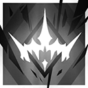 | 自動回復 | 手動発動 | 35 | 55 | 30 | 攻撃範囲拡大、特性の効果が90%まで上昇する。「微塵」が消失しなくなり、攻撃範囲内の自身以外の味方全員にシヴィライト・エテルナの最大HPの100%の鼓舞状態を付与し、2秒ごとに攻撃範囲内の味方全員のHPを再配分する | |
| スズラン | 6 | 補助 | 緩速師 | スキル1 | 全身全霊 | 自動回復 | 自動発動 | 0 | 20 | 30 | 攻撃力+80%、攻撃速度+30 | ||
| スズラン | 6 | 補助 | 緩速師 | スキル2 | 過ぎし日の舞 | 自動回復 | 自動発動 | 0 | 80 | - | 攻撃力+60%、敵3体を同時に攻撃 退場まで効果継続 | 永続 | |
| スズラン | 6 | 補助 | 緩速師 | スキル3 | 渺然たる狐火 | 自動回復 | 手動発動 | 50 | 70 | 35 | 攻撃しなくなり、攻撃範囲拡大、第二素質の効果が2倍まで上昇、攻撃範囲内の敵全員が足止めされ、範囲内の味方全員のHPを1秒ごとにスズランの攻撃力の20%回復 | ||
| ステインレス | 6 | 補助 | 工匠 | スキル1 | ハイパーブースト | 自動回復 | 手動発動 | 20 | 45 | 20 | パッシブ：装置の効果対象の攻撃力+12% アクティブ：装置を1個獲得し、通常攻撃が攻撃対象に攻撃力の200%の物理ダメージを与え、装置の効果が4倍まで上昇 スキル終了時、配置中の装置を全て破壊 | ||
| ステインレス | 6 | 補助 | 工匠 | スキル2 | 供給効率化システム | 自動回復 | 手動発動 | 25 | 50 | 30 | パッシブ：装置の効果対象のSPを3.5秒ごと1回復 アクティブ：攻撃力+60%、防御力+60%、ブロック中の敵全員を同時に攻撃。さらに装置の効果が「対象のSPを2秒ごと1回復」になるが、装置のHP減少速度+100% スキル終了時、装置を1個獲得 | ||
| ステインレス | 6 | 補助 | 工匠 | スキル3 | 鉄鉗号・プロトタイプ | 自動回復 | 手動発動 | 20 | 35 | 30 | パッシブ：装置が味方の攻撃対象になるが、味方の攻撃によってHPは減少しない。装置自身のスキルが発動すると、装置前方の敵に範囲物理ダメージを与え、装置のHPが減少する アクティブ：装置を1個獲得し、攻撃力+55%、攻撃速度+55 | ||
| トラゴーディア | 6 | 補助 | 祭儀師 | スキル1 | 闇夜の反響 | 攻撃回復 | 自動発動 | 2 | 2 | - | 次の通常攻撃時、敵に攻撃力の150%の術ダメージを2回与え、さらに対象を3秒間バインドする。このスキルによるバインド状態中の対象が受ける神経損傷が1.8倍まで上昇する。爆発効果中でない敵を優先して攻撃する | ||
| トラゴーディア | 6 | 補助 | 祭儀師 | スキル2 | 群体制譫妄 | 自動回復 | 自動発動 | 0 | 25 | - | 攻撃速度+35、第一素質による神経損傷発生範囲が拡大し、スキル発動中は「本能の召喚」を1体配置可能になる。「本能の召喚」は配置後10秒間、周囲一定範囲内に入った自身の位置へ到達可能な敵（【エリート】あるいは【ボス】を優先）を最大4体まで誘導する。いずれかの誘導中の対象が自身の位置に到達すると、「本能の召喚」は撤退して周囲の敵全員を6秒間足止めし、0.5秒ごとにトラゴーディアの攻撃力の150%の術ダメージと25%の神経損傷を与える 退場まで効果継続、「本能の召喚」は独立した再配置時間を持つ | 永続 | |
| トラゴーディア | 6 | 補助 | 祭儀師 | スキル3 | 無人の劇場 | 自動回復 | 手動発動 | 30 | 40 | 30 | 攻撃範囲が拡大し、攻撃力+125%、爆発効果中でない敵を優先して攻撃する。スキル発動中にトラゴーディアが神経損傷を与えた敵は、1秒ごとにトラゴーディアの攻撃力の10%の神経損傷を爆発するまで受け続ける。範囲内の敵の神経損傷が爆発してから再度爆発可能になるまでの回復速度+50%、神経損傷爆発時に対象のいるマスに「彷徨の檻」を召喚（既に召喚されている場合は再召喚）する | ||
| ノーシス | 6 | 補助 | 呪詛師 | スキル1 | 思考加速 | 自動回復 | 自動発動 | 0 | 4 | - | 次の通常攻撃時、2回連続で攻撃力の170%の術ダメージを与える | ||
| ノーシス | 6 | 補助 | 呪詛師 | スキル2 | ゼロバースト | 自動回復 | 手動発動 | 0 | 6 | - | 攻撃範囲内の敵全員に4秒の寒冷状態を付与し、攻撃力の200%の術ダメージを与える オーバーチャージ追加効果：追加でもう一度寒冷状態を付与する | オーバーチャージ | |
| ノーシス | 6 | 補助 | 呪詛師 | スキル3 | ハイポサーミア | 自動回復 | 手動発動 | 25 | 40 | 13 | 攻撃速度+130、通常攻撃が敵最大2体を同時に攻撃可能になり、凍結状態ではない敵を優先して攻撃する。攻撃範囲内の敵全員の凍結状態の継続時間がスキル終了時まで延長され、スキル終了時凍結状態の敵全員に攻撃力の600%の術ダメージを与え、凍結状態を解除する | ||
| マゼラン | 6 | 補助 | 召喚師 | スキル1 | フリーズモジュール | 自動回復 | 手動発動 | 20 | 30 | 15 | パッシブ：自身とドローンの攻撃範囲内の敵を3秒ごとに1.0秒足止めする アクティブ：「1.0秒の足止め」が「2.5秒のバインド」に変化する スキル終了時配置中のドローンを全て回収 | ||
| マゼラン | 6 | 補助 | 召喚師 | スキル2 | レーザーモジュール | 自動回復 | 手動発動 | 25 | 38 | 15 | パッシブ：ドローンが術攻撃を行い、近距離ユニットとして配置可能 アクティブ：自身とドローンの攻撃速度+150、ドローンが範囲攻撃を行う。スキル終了時配置中のドローンを全て回収 | ||
| マゼラン | 6 | 補助 | 召喚師 | スキル3 | アサルトモジュール | 自動回復 | 手動発動 | 25 | 38 | 15 | パッシブ：ドローンが範囲物理攻撃を行い、遠距離ユニットとして配置可能 アクティブ：自身とドローンの攻撃力+150%、ドローンの通常攻撃のダメージ発生範囲拡大。スキル終了時配置中のドローンを全て回収 | ||
| リィン | 6 | 補助 | 召喚師 | スキル1 | 重ねて酒を進み | 自動回復 | 手動発動 | 15 | 25 | 25 | パッシブ：召喚物を近距離ユニットとして配置可能 アクティブ：自身と召喚物の攻撃力+50%、攻撃速度+50、召喚物の通常攻撃が術攻撃になる スキル発動時、召喚物を1体獲得 | ||
| リィン | 6 | 補助 | 召喚師 | スキル2 | 笑いて瑟を鼓せ | 自動回復 | 手動発動 | 5 | 13 | - | パッシブ：術攻撃を行う召喚物を遠距離ユニットとして配置可能 アクティブ：自身と召喚物が攻撃範囲内の敵2体に攻撃力の450%の術ダメージを与え、3秒間バインドさせる スキル終了時、HPが最大値の半分以下の召喚物を全て回収する。2回チャージ可能 | チャージ | |
| リィン | 6 | 補助 | 召喚師 | スキル3 | 寧ろ吾をなさん | 自動回復 | 手動発動 | 15 | 40 | 30 | パッシブ：召喚物を近距離ユニットとして配置可能。召喚物の攻撃範囲内に自身の召喚物が存在する場合、両者が合体して上位形態になる アクティブ：自身と召喚物の攻撃力+100%、防御力+100%、召喚物が0.5秒ごとに隣接4マス内にいる敵全員にリィンの攻撃力の20%の術ダメージを与える スキル終了時、召喚物を1体獲得 | ||
| 淬羽サイレンス | 6 | 補助 | 祈祷師 | スキル1 | 止まらぬ歩み | 自動回復 | 手動発動 | 15 | 30 | 25 | 攻撃力+80% | ||
| 淬羽サイレンス | 6 | 補助 | 祈祷師 | スキル2 | 俯瞰する視点 | 自動回復 | 手動発動 | 14 | 24 | 12 | 攻撃速度+60、スキル発動中は支援ドローンを1体使用可能 ドローンは配置後、周囲の味方に淬羽サイレンスの第一素質の3倍の効果を付与。スキルが終了するか、淬羽サイレンスが退場するとドローンも消滅 | ||
| 淬羽サイレンス | 6 | 補助 | 祈祷師 | スキル3 | 先駆者たちの翼 | 自動回復 | 手動発動 | 20 | 30 | 60 | 攻撃力+30%、第一素質の効果が1.8倍まで上昇。 スキル発動中1回限り、攻撃範囲内にいる味方が致命的なダメージを受けた際、対象のHPが10秒間1残る効果が発動 使用上限2回、手動でスキルを停止可能 | ||
| 濁心スカジ | 6 | 補助 | 吟遊者 | スキル1 | 同帰殊塗の吟 | 自動回復 | 手動発動 | 30 | 50 | 30 | 自身の最大HP+170%、HPを最大値まで回復し、特性の効果が80%まで上昇し、濁心スカジが攻撃範囲内の味方全員の被ダメージの50%を代わりに受ける（同種の効果は高いほうのみ適用） | ||
| 濁心スカジ | 6 | 補助 | 吟遊者 | スキル2 | 同葬無光の願 | 自動回復 | 自動発動 | 0 | 56 | - | 攻撃範囲内の自身以外の味方全員に濁心スカジの攻撃力と防御力の60%の鼓舞状態を付与して、特性の効果が20%まで上昇する 退場まで効果継続 | 永続 | |
| 濁心スカジ | 6 | 補助 | 吟遊者 | スキル3 | 「満ち潮、枯れ潮」 | 自動回復 | 手動発動 | 15 | 35 | 20 | 特性のHP回復効果が「自身のHPが1秒ごとに5%減少」に変化する。1秒ごとに攻撃範囲内の敵全員に濁心スカジの攻撃力の70%の確定ダメージを与え（自身とシーボーンの与ダメージが重複可能）、攻撃範囲内の味方全員に濁心スカジの攻撃力の110%の鼓舞状態を付与する | 自傷 | |
| Ela | 6 | 特殊 | 罠師 | スキル1 | 視界遮断 | 自動回復 | 自動発動 | 0 | 18 | - | 発動時、周囲一定範囲内の敵全員を10秒間足止めし、効果時間中対象の物理・術攻撃の命中率-40% | ||
| Ela | 6 | 特殊 | 罠師 | スキル2 | ショックディフェンス | 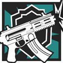 | 攻撃回復 | 手動発動 | 12 | 16 | 20 | パッシブ：罠発動時、周囲一定範囲内の敵全員を5秒間スタンさせる アクティブ：展開型シールドを設置し、防御力+300%。さらに自身の攻撃範囲が縮小し、通常攻撃が範囲物理攻撃になり、攻撃対象の防御力を800無視する スキル終了時、罠を1個獲得 | |
| Ela | 6 | 特殊 | 罠師 | スキル3 | 「ボサックテンペスト」 | 自動回復 | 手動発動 | 16 | 34 | - | パッシブ：罠発動時、周囲一定範囲内の敵全員を7秒間足止めし、35%の脆弱状態を付与する アクティブ：攻撃間隔を短縮し、攻撃力+90%。GRZMOTマインの影響を受けている敵を優先して攻撃 合計40発の銃弾を撃ち切るとスキルが終了（手動でスキルを停止可能）。スキル終了時に罠を2個獲得 | 弾薬 | |
| ア | 6 | 特殊 | 鬼才 | スキル1 | 高速射撃 | 自動回復 | 手動発動 | 20 | 30 | 30 | 攻撃速度+100 | ||
| ア | 6 | 特殊 | 鬼才 | スキル2 | 劇性増強剤・γ | 自動回復 | 手動発動 | 25 | 30 | 30 | 前方にいる最も近い味方1人（真正面を優先する）に500の攻撃力で15回攻撃し、その後効果時間終了まで自身と対象の防御力、最大HP+80% | ||
| ア | 6 | 特殊 | 鬼才 | スキル3 | 劇性増強剤・ドリアン | 自動回復 | 手動発動 | 30 | 35 | 20 | 前方にいる最も近い味方1人（真正面を優先する）に500の攻撃力で15回攻撃し、その後効果時間終了まで自身と対象の攻撃力+50%、攻撃速度+50 | ||
| アスカロン | 6 | 特殊 | 潜伏者 | スキル1 | 追襲 | 自動回復 | 自動発動 | 4 | 7 | - | 次の通常攻撃時、攻撃力が210%まで上昇し、2回連続攻撃する 3回チャージ可能 | チャージ | |
| アスカロン | 6 | 特殊 | 潜伏者 | スキル2 | 恩賜 | 自動回復 | 手動発動 | 15 | 20 | 35 | 攻撃力+130%、攻撃範囲内の地上にいる敵全員の移動速度-60%、対象が撃破される際、その周囲にいる敵全員に第一素質の効果を付与する | ||
| アスカロン | 6 | 特殊 | 潜伏者 | スキル3 | 降臨 | 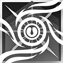 | 自動回復 | 手動発動 | 35 | 45 | 45 | 攻撃範囲拡大、攻撃力+50%、攻撃間隔がかなり短縮する。攻撃範囲内の地上にいる敵の物理・術攻撃の命中率-50%。敵に攻撃されやすくなり、敵の攻撃が外れるか、自身が回避に成功した時、HPが最大値の8%回復する | |
| ウィーディ | 6 | 特殊 | 推撃手 | スキル1 | 砲身強打 | 自動回復 | 自動発動 | 0 | 5 | - | 次の通常攻撃時、敵をかなりの力で突き飛ばし、攻撃力の150%の物理ダメージを与え、1.2秒間スタンさせる | ||
| ウィーディ | 6 | 特殊 | 推撃手 | スキル2 | ハイドロキャノン | 自動回復 | 自動発動 | 0 | 70 | - | 通常攻撃の間隔を延長し、攻撃力+200%、攻撃範囲+2マス、通常攻撃が遠距離範囲攻撃になり、攻撃対象を相当の力で突き飛ばす 退場まで効果継続 | 永続 | |
| ウィーディ | 6 | 特殊 | 推撃手 | スキル3 | LN2キャノン | 自動回復 | 手動発動 | 20 | 33 | - | 圧縮液体窒素砲を発射し、攻撃対象とその周囲の敵全員に攻撃力の350%の範囲術ダメージを与え、力強く突き飛ばし、次の状態を付与：8秒間、移動距離に応じて確定ダメージを受ける 自身の隣接4マス内の蓄水砲も同時に圧縮液体窒素砲を発射する | ||
| キリンRヤトウ | 6 | 特殊 | 執行者 | スキル1 | 鬼人化 | 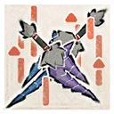 | パッシブ | パッシブ | - | - | 20 | 攻撃速度+100、通常攻撃が2回連続になり、スキル発動中同一対象に対する3度目の攻撃が6回連続になる | |
| キリンRヤトウ | 6 | 特殊 | 執行者 | スキル2 | 乱舞 | 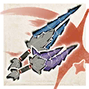 | パッシブ | パッシブ | - | - | - | 第一素質の効果が2.5倍になり、攻撃力が150%まで上昇して、前方1マスにいる敵全員に対し16回の斬撃を与える。その間敵に攻撃されやすくなる | |
| キリンRヤトウ | 6 | 特殊 | 執行者 | スキル3 | 空中回転乱舞 | 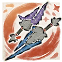 | パッシブ | パッシブ | - | - | - | 前方に向かって2マス突進し、一定距離を移動するごとに周囲の敵全員に攻撃力の300%の物理ダメージを与える。その間敵1体を攻撃するごとに突進距離が延長する（最長5マスまで延長し、飛行ユニットを攻撃することもできる） | |
| クラウンスレイヤー | 6 | 特殊 | 執行者 | スキル1 | 煙塵の目眩まし | パッシブ | パッシブ | - | - | 10 | 配置後攻撃力+100%、物理回避と術回避+50% | ||
| クラウンスレイヤー | 6 | 特殊 | 執行者 | スキル2 | 硝煙の爆震 | パッシブ | パッシブ | - | - | - | 配置後、8秒間攻撃しなくなり、自身は敵に狙われにくくなり、第一素質の地面上の敵に対する物理・術攻撃の命中低下効果が2.5倍まで上昇。 スキル終了時、煙幕内の地面上にいる敵全員に攻撃力の500%の物理ダメージを与える | ||
| クラウンスレイヤー | 6 | 特殊 | 執行者 | スキル3 | 狼煙の処刑場 | パッシブ | パッシブ | - | - | 16 | 配置後、第一素質の効果範囲が拡大し、クラウンスレイヤーが煙幕内に消え、ブロック数が0、ステルス状態になる。その後、2秒ごとに姿を現して煙幕内の地面上にいる敵1体に攻撃力の250%の物理ダメージを2回与え、4秒間スタンさせる（同一対象には6秒ごとに1回まで攻撃可能） | ||
| グレイディーア | 6 | 特殊 | 鉤縄師 | スキル1 | 渇水の大洋裂断 | 自動回復 | 自動発動 | 0 | 4 | - | 次の通常攻撃時、敵をかなりの力で引き寄せ、攻撃力の210%の物理ダメージを与える 3回チャージ可能 | チャージ | |
| グレイディーア | 6 | 特殊 | 鉤縄師 | スキル2 | 渇水の荒波掌握 | 自動回復 | 手動発動 | 20 | 25 | 20 | 攻撃間隔延長(+50%)、攻撃範囲拡大、通常攻撃時、ブロックされている敵2体を優先して攻撃力の180%の物理ダメージを与え、かなりの力で引き寄せる | ||
| グレイディーア | 6 | 特殊 | 鉤縄師 | スキル3 | 渇水の乱渦狂舞 | 自動回復 | 手動発動 | 26 | 35 | 8 | 範囲内の最も遠い敵をバインドして渦を生成し、周囲一定範囲内の敵の移動速度-50%、1.5秒毎に攻撃力の130%の術ダメージを与え、かなりの力で中心に引き寄せる。 スキル終了時、渦中の敵をかなりの力で引き寄せる | ||
| ドロシー | 6 | 特殊 | 罠師 | スキル1 | 脅威排除 | 自動回復 | 自動発動 | 0 | 12 | - | パッシブ：罠発動時、対象に攻撃力の450%の物理ダメージを与え、その対象を5秒間防御力-35%にする アクティブ：罠を1個獲得 | ||
| ドロシー | 6 | 特殊 | 罠師 | スキル2 | 流砂生成 | 自動回復 | 自動発動 | 0 | 12 | - | パッシブ：罠発動時、周囲の敵全員に攻撃力の300%の物理ダメージを与え、3.5秒間のバインドを付与、罠が敵1体にのみ命中した場合、6秒間のバインドを付与 アクティブ：罠を1個獲得 | ||
| ドロシー | 6 | 特殊 | 罠師 | スキル3 | 高周波共振 | 自動回復 | 自動発動 | 0 | 12 | - | パッシブ：罠発動時、範囲内の敵全員に攻撃力の350%の術ダメージを与え、5秒間足止めし、範囲内の他の共振装置を一定時間後に発動させる アクティブ：罠を1個獲得 | ||
| ファントム | 6 | 特殊 | 執行者 | スキル1 | 闇夜の影法師 | パッシブ | パッシブ | - | - | - | 配置後の10秒間、物理回避+50%，最大HPの80%までの被ダメージを吸収できるバリアを獲得 | ||
| ファントム | 6 | 特殊 | 執行者 | スキル2 | 血染めの楽章 | パッシブ | パッシブ | - | - | - | 配置後、攻撃力+20%の効果を10回獲得(攻撃する度に回数を1回消費する) | ||
| ファントム | 6 | 特殊 | 執行者 | スキル3 | 襲来の悪夢 | パッシブ | パッシブ | - | - | - | 配置後周囲一定範囲内の敵全員を普通の力で突き飛ばし、攻撃力の300%の物理ダメージを与え、そしてランダムで次の状態(足止め、バインド、スタン)から一つを4.5秒間付与する | ||
| ミヅキ | 6 | 特殊 | 潜伏者 | スキル1 | 呼び声 | 自動回復 | 自動発動 | 0 | 7 | - | 次の通常攻撃時、敵に攻撃力の300%の物理ダメージを与え、第一素質のダメージ計算係数が3倍になる 3回チャージ可能 | チャージ | |
| ミヅキ | 6 | 特殊 | 潜伏者 | スキル2 | ジレンマ | 自動回復 | 手動発動 | 10 | 15 | 21 | 通常攻撃の間隔をかなり短縮(-1.5s)し、攻撃力+30%、第一素質の効果対象が1体追加され、効果対象を1.3秒間バインドする | ||
| ミヅキ | 6 | 特殊 | 潜伏者 | スキル3 | 鏡花水月 | 自動回復 | 手動発動 | 30 | 60 | 30 | 攻撃範囲拡大、攻撃力+150%、第一素質の対象を2体追加して1秒間スタンさせる 攻撃する度に攻撃対象が3体より少なかった時、自身のHPが最大値の12%減少 | 自傷 | |
| リー | 6 | 特殊 | 行商人 | スキル1 | 邪気退散 | 自動回復 | 自動発動 | 0 | 7 | - | 攻撃力+60%、術回避+40% 退場まで効果継続 | 永続 | |
| リー | 6 | 特殊 | 行商人 | スキル2 | 辟邪除災 | 自動回復 | 手動発動 | 0 | 7 | - | パッシブ：攻撃速度+30 アクティブ：敵1体をマークして、味方から攻撃されやすくする。5秒後マークが爆発して周囲一定範囲内の敵全員にリーの攻撃力の300%の術ダメージを与える。 マークの継続時間内に対象が攻撃を受ける度に、爆発の与ダメージがリーの攻撃力の20%増加する（最大30回分まで増加し、上限に達するか対象が撃破されると、マークが即座に爆発する） | ||
| リー | 6 | 特殊 | 行商人 | スキル3 | 千客万来 | 自動回復 | 自動発動 | 0 | 7 | - | 攻撃範囲拡大、攻撃力と防御力+50% 通常攻撃時、範囲内の攻撃対象以外の敵全員を普通の力で突き飛ばす。敵から攻撃されやすくなり、70%の確率でスキル効果範囲外からの物理、術ダメージを回避する 退場まで効果継続 | 永続 | |
| 引星ソーンズ | 6 | 特殊 | 錬金士 | スキル1 | 波を計りて | 自動回復 | 自動発動 | 5 | 5 | - | 攻撃範囲内の味方ユニットのいる位置へ錬金ユニットを一つ投げ、8秒間落下地点とその周囲8マスにいる味方全員の防御力+100、範囲内の味方のHPを1秒ごとに攻撃力の20%回復する | ||
| 引星ソーンズ | 6 | 特殊 | 錬金士 | スキル2 | 潮を解析す | 自動回復 | 手動発動 | 14 | 20 | - | 錬金ユニットを一つ投げ、15秒間落下地点周囲一定範囲内の地面マスにいる敵全員の受ける治療と回復効果を-50%し、1秒ごとに攻撃力の180%の術ダメージを与え、範囲内の味方のHPを1秒ごとに攻撃力の18%回復する。錬金ユニットは、15秒間投げられた方向にゆっくりと進み、効果範囲が徐々に増加する 2回チャージ可能 | チャージ | |
| 引星ソーンズ | 6 | 特殊 | 錬金士 | スキル3 | 「我が海域」 | 自動回復 | 手動発動 | 48 | 60 | - | パッシブ：攻撃範囲拡大 アクティブ：攻撃範囲内のブロック数が最も低い3名のオペレーターのいる位置へ錬金ユニットを投げ、23秒間錬金ユニットが囲んだ範囲内にいる敵の攻撃力-15%、防御力-35%、術耐性-35%（重複不可）、1秒ごとに攻撃力の210%の術ダメージを与える。効果値は徐々に上昇する(15秒後に効果が最大に達し攻撃力-30%、防御力-50%、術耐性-50%、毎秒の与ダメージが390%になる) | ||
| 帰溟スペクター | 6 | 特殊 | 傀儡師 | スキル1 | 生存の技巧 | 自動回復 | 手動発動 | 25 | 35 | 25 | 発動後、範囲内のHP割合が最も低い他の味方オペレーターとHP割合を交換し、自身の攻撃力+150% | ||
| 帰溟スペクター | 6 | 特殊 | 傀儡師 | スキル2 | 生への渇望 | 自動回復 | 手動発動 | 25 | 35 | 20 | 攻撃力+130%、攻撃速度+50、スキル発動中は致命的なダメージを受けてもHPが1残る 効果時間終了後<身替り>と入れ替わる | ||
| 帰溟スペクター | 6 | 特殊 | 傀儡師 | スキル3 | 生からの重圧 | 自動回復 | 手動発動 | 25 | 40 | 25 | 攻撃間隔を延長し、ブロック中の敵全員を同時に攻撃、攻撃力+260%、最大HP+200%、HP割合が自身と同等以上の敵を攻撃する時追加で攻撃力の70%の物理ダメージを与える。HP割合が自身よりも低い敵を攻撃する度HPが3%減少 | 自傷 | |
| 血掟テキサス | 6 | 特殊 | 執行者 | スキル1 | ピオヴィッジネ | パッシブ | パッシブ | - | - | 12 | 配置後攻撃力+70%、攻撃対象へ10秒間毎秒400の術ダメージを与え、一部の特殊能力を無効化する | ||
| 血掟テキサス | 6 | 特殊 | 執行者 | スキル2 | アクアツォーネ | パッシブ | パッシブ | - | - | 10 | 配置後周囲にいる敵全員に攻撃力の240%の術ダメージを与え、対象の術耐性が10秒間-30% 攻撃力+55%、通常攻撃が2連撃となり、攻撃対象に術ダメージを与える | ||
| 血掟テキサス | 6 | 特殊 | 執行者 | スキル3 | ロヴェーショ | パッシブ | パッシブ | - | - | 8 | 配置後周囲にいる敵全員に2回連続で攻撃力の165%の術ダメージを与え、対象を2秒間スタンさせる。その後、1秒ごとに攻撃範囲内の敵最大4体を対象に剣雨を放ち、攻撃力の130%の術ダメージを与え、0.2秒間スタンさせる | ||
| 新約エクシア | 6 | 特殊 | 鬼才 | スキル1 | スカイスイーパー | 自動回復 | 自動発動 | 8 | 12 | - | 通常攻撃時、敵に攻撃力の250%の物理ダメージを与える。飛行ユニットを優先して攻撃する。手動でスキルを停止すると残りの弾薬全て攻撃範囲内の敵にランダムで発射する 合計8発の弾薬を撃ち切るとスキルが終了（手動でスキルを停止可能） | 弾薬 | |
| 新約エクシア | 6 | 特殊 | 鬼才 | スキル2 | トリガーハッピー | 自動回復 | 手動発動 | 25 | 30 | - | 攻撃範囲内の味方オペレーター1名の攻撃速度を即座に70奪取し’スキル終了、または新約エクシアが退場まで効果継続）、自身と対象に最大HPの250%のバリアを付与する（バリア値は徐々に減少する）。攻撃間隔が短縮し、通常攻撃時、敵に攻撃力の300%の物理ダメージを与える 合計35発の弾薬を撃ち切るとスキルが終了（手動でスキルを停止可能）、攻撃速度を奪取できた場合追加で弾薬を5発獲得する | 弾薬 自傷 | |
| 新約エクシア | 6 | 特殊 | 鬼才 | スキル3 | 絶対に、確実に！ | 自動回復 | 手動発動 | 30 | 35 | - | 攻撃力+30%、通常攻撃が攻撃力の160%での5回連続攻撃になる。「配達先座標」が配置されている場合、その場所に攻撃力の250%の物理範囲ダメージを与え、再配置時間が最も長い近距離オペレーター1名をその場所に配置し、当該オペレーターのSPを6回復する 配置後「配達先座標」を獲得。 攻撃するたびに弾薬が5発消費され、合計50発の弾薬を撃ち切るとスキルが終了（手動でスキルを停止可能） | 弾薬 | |
| 琳琅スワイヤー | 6 | 特殊 | 行商人 | スキル1 | 資金援助 | パッシブ | パッシブ | - | - | - | コインを1枚消費し、次の通常攻撃が周囲8マス内にいるHPが最大値の70%以下の味方1人に対する治療行動になり、対象のHPを治療者の攻撃力の80%回復する コインの所持上限：3 | ||
| 琳琅スワイヤー | 6 | 特殊 | 行商人 | スキル2 | 「おもてなし」 | パッシブ | パッシブ | - | - | - | コインを1枚消費し、一定範囲内の設置可能かつ通行可能な地面に「シャンパン爆弾」を設置する。 「シャンパン爆弾」は最初に触れた敵に攻撃力の200%の物理ダメージを与え、対象を2秒間足止めする 「シャンパン爆弾」は配置から3秒後、ダメージ発生回数+1 コインの所持上限：5 | ||
| 琳琅スワイヤー | 6 | 特殊 | 行商人 | スキル3 | 千金一擲 | 自動回復 | 自動発動 | 0 | 5 | - | 通常攻撃が2連撃になり、敵を倒すとコインを1枚獲得する。手動でスキルを停止時、全てのコインを消費し、前方一定範囲内の敵をランダムに攻撃する。消費したコイン1枚につき、攻撃力の150%の物理ダメージを1回与え、対象を相当の力で突き飛ばす。 退場まで効果継続、手動でスキルを停止可能。コインの所持上限：10 | 永続 | |
| エリジウム | 5 | 先鋒 | 旗手 | スキル1 | 支援指令γ | 自動回復 | 手動発動 | 15 | 26 | 8 | 攻撃しなくなり、スキル発動中所持コストが徐々に増加(合計18) | ||
| エリジウム | 5 | 先鋒 | 旗手 | スキル2 | 集音 | 自動回復 | 手動発動 | 16 | 30 | 15 | スキル発動中所持コストが徐々に増加(合計20) 攻撃しなくなり、周囲最大4体の敵をマークする マークされた敵はスキル発動中で移動速度-60%、防御力-35%、ステルス状態が無効化される | ||
| カンタービレ | 5 | 先鋒 | 偵察兵 | スキル1 | 洞見 | パッシブ | パッシブ | - | - | 20 | 配置後攻撃力+100%、攻撃する度に所持コスト+1 | ||
| カンタービレ | 5 | 先鋒 | 偵察兵 | スキル2 | 水光 | 自動回復 | 手動発動 | 20 | 25 | - | 攻撃力+40%、攻撃速度+50、迷彩状態になり、攻撃する度に所持コスト+1 合計18発の弾薬を撃ち切るとスキルが終了（手動でスキルを停止可能） | 弾薬 | |
| キアーベ | 5 | 先鋒 | 先駆兵 | スキル1 | 突撃指令γ | 自動回復 | 自動発動 | 20 | 35 | - | 所持コスト+12 | ||
| キアーベ | 5 | 先鋒 | 先駆兵 | スキル2 | 火炎剥離 | 自動回復 | 手動発動 | 35 | 45 | - | 所持コスト+13 周囲にいる敵全員に攻撃力の350%の術ダメージを与え、8秒間術耐性-20% | ||
| グラニ | 5 | 先鋒 | 突撃兵 | スキル1 | 防御力強化γ | 自動回復 | 手動発動 | 15 | 30 | 40 | 防御力+100% | ||
| グラニ | 5 | 先鋒 | 突撃兵 | スキル2 | 引かない！ | 自動回復 | 手動発動 | 50 | 70 | 30 | 攻撃範囲縮小、攻撃力と防御力+80%、ブロック数+1、ブロック中の敵全員を同時に攻撃 | ||
| ケストレル | 5 | 先鋒 | 先駆兵 | スキル1 | 突撃指令γ | 自動回復 | 自動発動 | 20 | 35 | - | 所持コスト+12 | ||
| ケストレル | 5 | 先鋒 | 先駆兵 | スキル2 | 醉刃乱舞 | 自動回復 | 手動発動 | 15 | 30 | 15 | スキル発動中所持コストが徐々に増加（合計12) 攻撃力+40%、攻撃速度+40、第一素質の発動確率が2.5倍まで上昇 | ||
| サーファー | 5 | 先鋒 | 偵察兵 | スキル1 | トレッキング | パッシブ | パッシブ | - | - | 20 | 配置後攻撃力+100%、攻撃する度に所持コスト+1 | ||
| サーファー | 5 | 先鋒 | 偵察兵 | スキル2 | ソロキャンプ | 自動回復 | 手動発動 | 15 | 22 | 10 | 攻撃速度+60、攻撃するたびに所持コスト+1、さらに対象の防御力を55奪取（最大値275まで奪取可能。スキル終了、またはサーファーが退場まで効果継続） | ||
| ズィマー | 5 | 先鋒 | 先駆兵 | スキル1 | 突撃指令γ | 自動回復 | 自動発動 | 20 | 35 | - | 所持コスト+12 | ||
| ズィマー | 5 | 先鋒 | 先駆兵 | スキル2 | ウルサスの雄叫び | 自動回復 | 手動発動 | 20 | 35 | 10 | スキル発動中所持コストが徐々に増加(合計12) 【先鋒】全員の攻撃力、防御力+60%、敵を倒す度所持コスト+1 | ||
| チルチャック | 5 | 先鋒 | 偵察兵 | スキル1 | ピッキングツール | 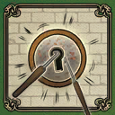 | 攻撃回復 | 自動発動 | 10 | 10 | 3 | 攻撃しなくなり、スキル終了後ランダムで4-10のコストを獲得 | |
| チルチャック | 5 | 先鋒 | 偵察兵 | スキル2 | 臨機応変 | 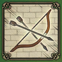 | 自動回復 | 手動発動 | 17 | 22 | 10 | 物理回避+45%、攻撃速度+60、攻撃する度に所持コスト+1 | |
| テキサス | 5 | 先鋒 | 先駆兵 | スキル1 | 突撃指令γ | 自動回復 | 自動発動 | 20 | 35 | - | 所持コスト+12 | ||
| テキサス | 5 | 先鋒 | 先駆兵 | スキル2 | 剣雨 | 自動回復 | 手動発動 | 30 | 40 | - | 所持コスト+12 周囲一定範囲内の敵全員に2回連続で攻撃力の170%の術ダメージを与え、3秒間スタンさせる | ||
| パズル | 5 | 先鋒 | 偵察兵 | スキル1 | 証拠追跡 | 攻撃回復 | 自動発動 | 2 | 5 | - | 次の通常攻撃時、敵に攻撃力の300%の物理ダメージを与え、所持コスト+3 | ||
| パズル | 5 | 先鋒 | 偵察兵 | スキル2 | 徹底追及 | 攻撃回復 | 手動発動 | 14 | 26 | 8 | 攻撃速度+70、攻撃対象に追加で16秒間毎秒攻撃力の15%の術ダメージを与える（最大10回まで重複可能）。攻撃する度に所持コスト+1 | ||
| ブラックナイト | 5 | 先鋒 | 戦術家 | スキル1 | うたた寝 | 自動回復 | 手動発動 | 17 | 25 | 10 | 所持コスト+11、眠獣が休眠状態に入り、休眠状態中HPが1秒ごとに最大値の14%回復する。 休眠状態の眠獣がダメージを受けると目を覚まし、10秒間攻撃力+55%、攻撃速度+55% | ||
| ブラックナイト | 5 | 先鋒 | 戦術家 | スキル2 | 深き眠り | 自動回復 | 手動発動 | 10 | 16 | - | 所持コスト+4 戦術召集点周囲の地面上の敵全員に6秒の睡眠状態を付与する。 6秒間、眠獣の攻撃が範囲術攻撃になり、睡眠中の敵に攻撃する時、攻撃力が210%まで上昇 2回チャージ可能 | チャージ | |
| ポンシラス | 5 | 先鋒 | 先駆兵 | スキル1 | 突撃指令γ | 自動回復 | 自動発動 | 20 | 35 | - | 所持コスト+12 | ||
| ポンシラス | 5 | 先鋒 | 先駆兵 | スキル2 | 建築家の願い | 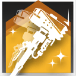 | 自動回復 | 手動発動 | 25 | 40 | 15 | 所持コスト+12 スキル発動中、攻撃力+35%、防御力+65% 2回目以降スキル使用時、4秒ごとに追加でコスト+1、退場まで効果継続 | 永続 |
| ミトム | 5 | 先鋒 | 戦術家 | スキル1 | リモートパージ | 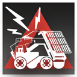 | 自動回復 | 手動発動 | 9 | 20 | - | 所持コスト+6 チェリー3号を破壊し隣接4マスの敵にミットムの攻撃力の400%の物理ダメージを与える | |
| ミトム | 5 | 先鋒 | 戦術家 | スキル2 | 負荷テスト | 自動回復 | 手動発動 | 20 | 40 | 15 | スキル発動中所持コストが徐々に増加（合計+12）、攻撃力+80% チェリー3号が攻撃しなくなり、ブロック数+1、防御力+140% スキル終了時チェリー3号が破壊される | ||
| リード | 5 | 先鋒 | 突撃兵 | スキル1 | 迅速攻撃γ | 自動回復 | 手動発動 | 15 | 35 | 35 | 攻撃力+45%、攻撃速度+45 | ||
| リード | 5 | 先鋒 | 突撃兵 | スキル2 | マナスパーク | 自動回復 | 手動発動 | 20 | 35 | 30 | 攻撃力+80%、攻撃する度追加で攻撃力の35%の術ダメージを敵に与える。敵を倒す度さらに所持コスト+1 | ||
| ワイルドメイン | 5 | 先鋒 | 突撃兵 | スキル1 | ラピッドランス | パッシブ | パッシブ | - | - | 30 | 配置後、攻撃速度+135 | ||
| ワイルドメイン | 5 | 先鋒 | 突撃兵 | スキル2 | ランスチャージ | 自動回復 | 手動発動 | 30 | 40 | 20 | 攻撃範囲拡大、攻撃力+80%、攻撃対象を攻撃方向に相当の力で突き飛ばす | ||
| ワンチィン | 5 | 先鋒 | 旗手 | スキル1 | 支援指令γ | 自動回復 | 手動発動 | 15 | 26 | 8 | 攻撃しなくなり、スキル発動中所持コストが徐々に増加(合計18) | ||
| ワンチィン | 5 | 先鋒 | 旗手 | スキル2 | 応東風 | 自動回復 | 手動発動 | 16 | 30 | 15 | 攻撃しなくなり、スキル発動中所持コストが徐々に増加(合計20) 周囲一定範囲内の味方オペレーターのHPを毎秒ワンチィンの攻撃力の25%回復し、範囲内のワンチィンと同じ配置方向の味方オペレーターの攻撃速度＋25 | ||
| 歴陣鋭槍フェン | 5 | 先鋒 | 突撃兵 | スキル1 | ペネトレイトスピア | 自動回復 | 自動発動 | 0 | 5 | - | 次の通常攻撃時、攻撃力が180%まで上昇し、攻撃対象を2回攻撃する 敵を倒すと所持コスト+1 3回チャージ可能 | チャージ | |
| 歴陣鋭槍フェン | 5 | 先鋒 | 突撃兵 | スキル2 | 前線維持 | パッシブ | パッシブ | - | - | 20 | 攻撃力+120%、防御力+40%、ブロック数+1、ブロック中の敵全員を同時に攻撃 | ||
| Doc | 5 | 前衛 | 教官 | スキル1 | カウンターバイオレンス | 自動回復 | 手動発動 | 15 | 25 | - | 自身のHPを攻撃力の400%治療し、その後攻撃間隔が大幅に短縮(-0.7) 合計31発の銃弾を撃ち切るとスキルが終了（手動でスキルを停止可能）。1回の配置につき、3回まで使用可能 | 弾薬 | |
| Doc | 5 | 前衛 | 教官 | スキル2 | スティムピストル | 自動回復 | 手動発動 | 15 | 20 | - | 直ちに前方に注射器を1発発射。初めて命中した対象が味方のオペレーターであった場合、対象のHPを攻撃力の750%回復 1回の配置につき、3回まで使用可能 | ||
| Fuze | 5 | 前衛 | 強襲者 | スキル1 | 威力偵察 | 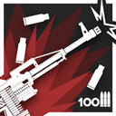 | 自動回復 | 手動発動 | 25 | 45 | - | 攻撃距離+1、攻撃力+30%、攻撃速度+90 合計100発の銃弾を撃ち切るとスキルが終了（手動でスキルを停止可能） | 弾薬 |
| Fuze | 5 | 前衛 | 強襲者 | スキル2 | クラスターチャージ | 自動回復 | 手動発動 | 20 | 30 | - | スキル発動時、前方の高台マスにクラスターチャージを射出。射出後、高台マスの向こう側の通行可能な地面マスで5回爆発し、1回の爆発につき周囲一定範囲内の敵全員に攻撃力の480%の物理ダメージを与える。 このスキルは自身が高台マスに面し、かつ高台マスの奥１マスに通行可能な地面マスがある場合のみ使用でき、1回の配置につき、3回まで使用可能 | ||
| Tachanka | 5 | 前衛 | 剣豪 | スキル1 | 焼夷弾 | 攻撃回復 | 手動発動 | 0 | 15 | - | 焼夷弾を発射し、攻撃対象の隣接4マス内に6秒の燃焼エリアを生成する。エリア内にいる地面上の敵全員に1秒ごとにTachankaの攻撃力の70%の術ダメージを与える。自身が燃焼エリア内にいる敵を攻撃する時、敵の防御力を200無視する。 | ||
| Tachanka | 5 | 前衛 | 剣豪 | スキル2 | 制圧射撃 | 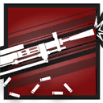 | 攻撃回復 | 手動発動 | 0 | 25 | 4 | 通常攻撃の間隔を大幅に短縮し、攻撃範囲内にいる敵をランダムに攻撃する。攻撃時、15%の確率でその攻撃のみ攻撃力が200%まで上昇する | |
| アカフユ | 5 | 前衛 | 武者 | スキル1 | 信影流・雷刀之勢 | 自動回復 | 手動発動 | 0 | 16 | 12 | ブロック数が0になり、攻撃力+80%、通常攻撃が2連撃になる | ||
| アカフユ | 5 | 前衛 | 武者 | スキル2 | 信影流・十文字勝 | 自動回復 | 手動発動 | 15 | 25 | 20 | HPが現在値の50%減少し、シールドを1枚獲得(スキル効果時間終了後消失)、攻撃力+100%、防御力+120% | 自傷 | |
| アステシア | 5 | 前衛 | 術戦士 | スキル1 | 星座の守護 | 自動回復 | 手動発動 | 10 | 30 | 30 | 攻撃力+50%、防御力+80% | ||
| アステシア | 5 | 前衛 | 術戦士 | スキル2 | 星輝剣 | 自動回復 | 手動発動 | 10 | 20 | 15 | 攻撃力+80%、防御力+80%、ブロック数+1、ブロック中の敵全員を同時に攻撃 | ||
| アーミヤ（前衛） | 5 | 前衛 | 術戦士 | スキル1 | 影霄・奔夜 | 自動回復 | 手動発動 | 10 | 35 | 30 | 攻撃力+80%、通常攻撃が2回攻撃になり、術回避+60% | ||
| アーミヤ（前衛） | 5 | 前衛 | 術戦士 | スキル2 | 影霄・絶影 | 自動回復 | 手動発動 | 0 | 20 | 35 | 一定範囲内のHPが最も低い敵に攻撃力の220%の術ダメージを10回与える（最後の一撃はダメージ計算係数が倍増し、確定ダメージになる）。 連撃中で撃破した敵1体につき、攻撃力+40%、術耐性+20（上限3回まで）。 連撃終了後、スキル発動中の通常攻撃が確定ダメージを与えるようになる 1回の作戦につき発動上限1回 | ||
| インドラ | 5 | 前衛 | 闘士 | スキル1 | 砕甲拳 | 攻撃回復 | 自動発動 | 0 | 4 | - | 次の通常攻撃時、攻撃力+140%、敵の防御力を60%無視 | ||
| インドラ | 5 | 前衛 | 闘士 | スキル2 | 裂魂 | 自動回復 | 手動発動 | 25 | 50 | 25 | 攻撃力+120%、通常攻撃が術攻撃になり、与ダメージの25%のHPを回復 | ||
| ウィスラッシュ | 5 | 前衛 | 教官 | スキル1 | 激励の美学 | 自動回復 | 手動発動 | 0 | 30 | 20 | 素質の効果が3倍まで上昇、ブロック数が2以下の近距離ユニットにも半分の効果を与える | ||
| ウィスラッシュ | 5 | 前衛 | 教官 | スキル2 | 鞭刃解放 | 自動回復 | 手動発動 | 20 | 60 | 25 | 素質の効果が2倍まで上昇 攻撃力+60%、攻撃範囲+1マス、ブロック数+1、ブロック中の敵全員を同時に攻撃 | ||
| ウィンドチャイム | 5 | 前衛 | 重剣士 | スキル1 | 攻撃力強化γ | 自動回復 | 手動発動 | 15 | 30 | 30 | 攻撃力+100% | ||
| ウィンドチャイム | 5 | 前衛 | 重剣士 | スキル2 | 郷思の念 | 自動回復 | 手動発動 | 10 | 25 | 5 | 攻撃しなくなり、40%の加護を獲得し、攻撃力が+50%まで徐々に上昇する。スキル終了時、前方直線一定範囲の地面にいる敵全員に、その時点の攻撃力の230%の物理ダメージを与え、1秒間スタンさせる 手動でスキルを停止可能 | ||
| エアースカーペ | 5 | 前衛 | 領主 | スキル1 | 多目標型散弾 | 攻撃回復 | 自動発動 | 0 | 3 | - | 次の通常攻撃時、攻撃範囲内の敵最大3体に 攻撃力の160%の術ダメージを与え、1.0秒足止めする | ||
| エアースカーペ | 5 | 前衛 | 領主 | スキル2 | ブレイドビット起動 | 自動回復 | 手動発動 | 25 | 50 | 25 | 攻撃範囲拡大、通常攻撃が術攻撃になり、攻撃時周囲8マスにいる味方がブロック中の敵にも 攻撃力の170%の術ダメージを与える(近接攻撃と見なす) | ||
| エンカク | 5 | 前衛 | 勇士 | スキル1 | 血化粧 | 攻撃回復 | 自動発動 | 0 | 3 | - | 次の通常攻撃時、攻撃力が220%まで上昇し、自身のHPを8%回復 | ||
| エンカク | 5 | 前衛 | 勇士 | スキル2 | 刃鬼 | 攻撃回復 | 自動発動 | 0 | 40 | - | 攻撃力+70%、攻撃速度+45 退場まで効果継続 | 永続 | |
| オッダ | 5 | 前衛 | 槌撃士 | スキル1 | 散火槌 | 攻撃回復 | 自動発動 | 0 | 2 | - | 次の通常攻撃時、攻撃力が240%まで上昇し、ダメージ発生範囲が拡大する | ||
| オッダ | 5 | 前衛 | 槌撃士 | スキル2 | 炎撃槌 | 自動回復 | 手動発動 | 15 | 30 | 18 | 攻撃力+100%、防御力+100%。攻撃対象以外の重量ランクが3以下の敵に範囲ダメージが命中すると、0.5秒間浮遊させる | ||
| グレースベアラー | 5 | 前衛 | 本源前衛 | スキル1 | 開頭の挽歌 | 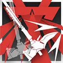 | 自動回復 | 手動発動 | 15 | 30 | 30 | 通常攻撃が対象に攻撃力の150%の物理ダメージを与える2連撃になり、攻撃対象に追加で与ダメージの10%の神経損傷を与える | |
| グレースベアラー | 5 | 前衛 | 本源前衛 | スキル2 | 開胸の弥撒 | 自動回復 | 手動発動 | 0 | 15 | - | 周囲の地上にいる最大6体の敵に、攻撃力の250%の物理ダメージを3回与える。対象が神経損傷の爆発効果中の場合、代わりに元素ダメージを与える 2回チャージ可能 | チャージ | |
| サベージ | 5 | 前衛 | 強襲者 | スキル1 | 強撃β | 攻撃回復 | 自動発動 | 0 | 3 | - | 次の通常攻撃時、攻撃力が230%まで上昇 | ||
| サベージ | 5 | 前衛 | 強襲者 | スキル2 | 精密起爆 | 攻撃回復 | 手動発動 | 0 | 17 | - | 前方3マス内の敵最大5体に攻撃力の400%の物理ダメージを与える | ||
| シデロカ | 5 | 前衛 | 術戦士 | スキル1 | HP回復γ | 自動回復 | 手動発動 | 12 | 20 | - | 自身のHPが最大値の70%回復 | ||
| シデロカ | 5 | 前衛 | 術戦士 | スキル2 | 裂波奮迅 | 自動回復 | 手動発動 | 10 | 30 | 30 | 攻撃範囲縮小、攻撃力+110%、1秒ごとにHPが最大値の8%回復 | ||
| スペクター | 5 | 前衛 | 強襲者 | スキル1 | 攻撃力強化γ | 自動回復 | 手動発動 | 15 | 30 | 30 | 攻撃力+100% | ||
| スペクター | 5 | 前衛 | 強襲者 | スキル2 | 肉斬骨断 | 自動回復 | 手動発動 | 35 | 40 | 15 | 攻撃力+160%、スキル発動中は致命的なダメージを受けてもHPが1残る スキル終了後自身が10秒間スタン状態になる | ||
| スワイヤー | 5 | 前衛 | 教官 | スキル1 | 統括指揮 | 自動回復 | 手動発動 | 20 | 40 | 35 | 素質の効果範囲が大幅に拡大、効果が2倍まで上昇 | ||
| スワイヤー | 5 | 前衛 | 教官 | スキル2 | 協同作戦 | 攻撃回復 | 手動発動 | 20 | 45 | 30 | 攻撃力+80%、素質の効果が3倍まで上昇 | ||
| ダグザ | 5 | 前衛 | 闘士 | スキル1 | カウンターテクニック | 被撃回復 | 自動発動 | 3 | 4 | - | 次に受ける物理ダメージ-60% 効果発動後、次の通常攻撃時、攻撃力が210%まで上昇 | ||
| ダグザ | 5 | 前衛 | 闘士 | スキル2 | ハンティングタイム | 自動回復 | 手動発動 | 15 | 30 | 15 | 攻撃力+35%、通常攻撃が2連撃になり、素質の発動確率が60%まで上昇 | ||
| テキーラ | 5 | 前衛 | 解放者 | スキル1 | 即断即決 | 自動回復 | 手動発動 | 0 | 20 | 20 | 攻撃速度+50、敵に攻撃力の170%の物理ダメージを与える | ||
| テキーラ | 5 | 前衛 | 解放者 | スキル2 | 極刃奇襲 | 自動回復 | 手動発動 | 12 | 20 | 15 | 攻撃範囲拡大、攻撃対象数+1、攻撃時、対象に攻撃力の230%の物理ダメージを与える オーバーチャージ追加効果: 攻撃対象数がさらに+1、継続時間が30秒まで延長 手動でスキルを停止可能 | オーバーチャージ | |
| バイビーク | 5 | 前衛 | 剣豪 | スキル1 | 剣羽飛針 | 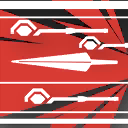 | 攻撃回復 | 自動発動 | 0 | 2 | - | 次の通常攻撃時、攻撃力が180%まで上昇。前方にいるもう一人の敵に攻撃力の180%の術ダメージを与える | |
| バイビーク | 5 | 前衛 | 剣豪 | スキル2 | 異刃斬 | 攻撃回復 | 手動発動 | 5 | 7 | - | 前方一定範囲内の敵最大6体に攻撃力の200%の術ダメージを与え、1.8秒間スタンさせる 3回チャージ可能 | チャージ | |
| ハイモア | 5 | 前衛 | 鎌撃士 | スキル1 | 懐古、別れ | 攻撃回復 | 自動発動 | 0 | 2 | - | 次の通常攻撃時、攻撃力が165%まで上昇し、攻撃対象に2回攻撃 | ||
| ハイモア | 5 | 前衛 | 鎌撃士 | スキル2 | 泡沫、破滅 | 自動回復 | 手動発動 | 20 | 30 | 20 | 攻撃力+60%、物理回避+60%、攻撃範囲内の敵が倒れた時、自身のHPが最大値の10%回復 | ||
| フランカ | 5 | 前衛 | 勇士 | スキル1 | 迅速攻撃γ | 自動回復 | 手動発動 | 15 | 35 | 35 | 攻撃力+45%、攻撃速度+45 | ||
| フランカ | 5 | 前衛 | 勇士 | スキル2 | 利剣の極致 | 自動回復 | 手動発動 | 10 | 20 | 30 | 防御力が0になり、攻撃力+100% 素質の防御力無視確率が2.5倍まで上昇 | ||
| ブライオファイタ | 5 | 前衛 | 教官 | スキル1 | 強撃β | 攻撃回復 | 自動発動 | 0 | 3 | - | 次の通常攻撃時、攻撃力が230%まで上昇 | ||
| ブライオファイタ | 5 | 前衛 | 教官 | スキル2 | 岩石の根気 | 自動回復 | 手動発動 | 35 | 50 | 30 | 攻撃力+80%、周囲8マス内でブロック数が最も多い味方近距離オペレーターの防御力+80% （周囲8マス内に近距離オペレーターがいない場合、効果の付与対象が自身になる） 効果時間終了後自身が5秒間スタン状態になる | ||
| フリント | 5 | 前衛 | 闘士 | スキル1 | ストマックブロー | 攻撃回復 | 自動発動 | 0 | 4 | - | 次の通常攻撃時、攻撃力が230%まで上昇し、敵を攻撃方向に普通の力で突き飛ばし、1秒足止めする | ||
| フリント | 5 | 前衛 | 闘士 | スキル2 | 鳥舞蜂刺 | 自動回復 | 手動発動 | 25 | 35 | 20 | ブロック数が0になり、攻撃力+55%、攻撃速度+55、攻撃対象を0.3秒足止めする | ||
| ブローカ | 5 | 前衛 | 強襲者 | スキル1 | ターンオン | 自動回復 | 手動発動 | 20 | 50 | 30 | 攻撃力+80%、通常攻撃が術攻撃になる | ||
| ブローカ | 5 | 前衛 | 強襲者 | スキル2 | ハイボルテージ | 自動回復 | 手動発動 | 20 | 35 | 25 | 通常攻撃の間隔を延長(+65%)し、攻撃範囲拡大、攻撃力+190%、通常攻撃が術ダメージを与え、攻撃対象を1秒足止めする 効果時間終了後自身が5秒間スタン状態になる | ||
| モーガン | 5 | 前衛 | 勇士 | スキル1 | ストリートパンク | 自動回復 | 手動発動 | 10 | 20 | 15 | 通常攻撃時、敵に攻撃力の190%の物理ダメージを与え、自身のHPが現在値の12%減少 | 自傷 | |
| モーガン | 5 | 前衛 | 勇士 | スキル2 | 大胆不敵 | パッシブ | パッシブ | - | - | 18 | 配置後、HPが最大値の70%減少し、同時に最大HPの150%までの被ダメージが吸収可能なバリアを獲得する。（バリアは6秒持続し、その間消耗し続ける）。 通常攻撃時、敵に攻撃力の190%の物理ダメージを与える | 自傷 | |
| ライオス | 5 | 前衛 | 勇士 | スキル1 | 臆病なケン助 | パッシブ | パッシブ | - | - | 15 | HPが最大値の50%以上の場合、攻撃力+70%の勇猛状態を獲得する ただし、敵【ボス】が戦場に初めて出現した時、ライオスは15秒間攻撃できなくなる | 永続（パッシブ） | |
| ライオス | 5 | 前衛 | 勇士 | スキル2 | 威嚇戦法 | 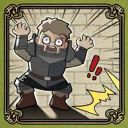 | 自動回復 | 手動発動 | 10 | 16 | 10 | 攻撃しなくなり、スキル期間中はブロックしている敵を戦慄状態にする。スキル終了時、即座にブロック中の敵に対して攻撃力の450%の物理ダメージを与える | |
| ラ・プルマ | 5 | 前衛 | 鎌撃士 | スキル1 | ソニックスラッシュ | 攻撃回復 | 自動発動 | 0 | 2 | - | 次の通常攻撃時、攻撃力が165%まで上昇し、攻撃対象に2回攻撃 | ||
| ラ・プルマ | 5 | 前衛 | 鎌撃士 | スキル2 | リーピング | 自動回復 | 手動発動 | 30 | 40 | 25 | 通常攻撃の間隔をかなり短縮(-50%)し、攻撃力+70%、さらにHPが最大値の50%未満の敵を攻撃時、追加で攻撃力+50% | ||
| ラップランド | 5 | 前衛 | 領主 | スキル1 | 影落とす時針 | 攻撃回復 | 自動発動 | 0 | 30 | - | 攻撃力+70%、40%の確率で物理被ダメージを無効化する 退場まで効果継続 | 永続 | |
| ラップランド | 5 | 前衛 | 領主 | スキル2 | 狼魂 | 攻撃回復 | 自動発動 | 0 | 17 | 20 | 攻撃力+120%、攻撃対象数+1、攻撃時、対象に術ダメージを与える 特性による遠距離攻撃時の攻撃力低下が無効化される | ||
| リェータ | 5 | 前衛 | 領主 | スキル1 | 迅速攻撃γ | 自動回復 | 手動発動 | 15 | 35 | 35 | 攻撃力+45%、攻撃速度+45 | ||
| リェータ | 5 | 前衛 | 領主 | スキル2 | 夏将軍の号令 | 自動回復 | 手動発動 | 16 | 28 | 25 | スキルが発動可能な状態の味方【ウルサス学生自治団】全員のスキルを同時に発動させ、自身の攻撃力+115%、攻撃対象数+1。 さらに遠距離攻撃時の攻撃力低下が無効化される | ||
| レウスSノイルホーン | 5 | 前衛 | 武者 | スキル1 | 居合抜刀気刃斬り | 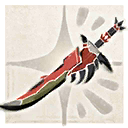 | 攻撃回復 | 手動発動 | 5 | 8 | 6 | 納刀後攻撃を停止し、次に攻撃を受けた際、そのダメージを無効化して範囲内の敵1体に攻撃力の150%の物理ダメージを4回与え、第二素質を即座に一回発動する。 スキル発動中に敵を倒すと、再び納刀してスキルを再発動する | |
| レウスSノイルホーン | 5 | 前衛 | 武者 | スキル2 | 気刃兜割り | 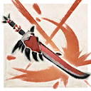 | 自動回復 | 手動発動 | 10 | 22 | 1 | 前方範囲内の敵1体に攻撃力の180%の物理ダメージを7回与える。 2回チャージ可能。また、スキル終了後第二素質の効果を1回分失う | チャージ |
| Blitz | 5 | 重装 | 哨戒衛士 | スキル1 | フラッシュシールド | 自動回復 | 手動発動 | 15 | 15 | - | 前方一定範囲内の敵全員を4.5秒間スタンさせ、一部の特殊能力を無効化する 1回の配置につき、4回まで使用可能 | ||
| Blitz | 5 | 重装 | 哨戒衛士 | スキル2 | 防衛線突破 | 自動回復 | 手動発動 | 20 | 35 | 7 | ブロック中の敵全員に攻撃力の200%の物理ダメージを与え、7秒間スタンさせる。攻撃速度+200、第一素質の効果が1.5倍まで上昇 | ||
| アスベストス | 5 | 重装 | 術技衛士 | スキル1 | 堅守モード | 自動回復 | 手動発動 | 0 | 20 | 20 | 術の被ダメージを1回無効化し、スキル発動中術の被ダメージ-30% | ||
| アスベストス | 5 | 重装 | 術技衛士 | スキル2 | 爆炎モード | 自動回復 | 手動発動 | 30 | 50 | 50 | 通常攻撃の間隔を延長(+40%)し、攻撃力+90%、防御力+60%、攻撃範囲が更に拡大、攻撃が敵に範囲ダメージを与える | ||
| アッシュロック | 5 | 重装 | 堅城砲手 | スキル1 | 攻撃力強化γ | 自動回復 | 手動発動 | 15 | 30 | 30 | 攻撃力+100% | ||
| アッシュロック | 5 | 重装 | 堅城砲手 | スキル2 | 砲撃専念 | 自動回復 | 手動発動 | 10 | 18 | 10 | ブロック数が0になり、遠距離攻撃のみを行い、攻撃間隔を大幅に短縮(-65%)し、攻撃力+55% | ||
| アンダーフロー | 5 | 重装 | 哨戒衛士 | スキル1 | 侵攻への備え | 自動回復 | 手動発動 | 15 | 30 | 30 | 攻撃力+50%、防御力+50% | ||
| アンダーフロー | 5 | 重装 | 哨戒衛士 | スキル2 | 毒棘制圧射撃 | 自動回復 | 手動発動 | 25 | 32 | 15 | 攻撃範囲拡大、攻撃力+50%、攻撃速度+50、攻撃が前方への毒棘射撃に変化し、最大4体までの敵を貫通し1秒間足止めする | ||
| ヴァルカン | 5 | 重装 | 破壊者 | スキル1 | 鉄壁の構え | 自動回復 | 手動発動 | 40 | 50 | 30 | ブロック数+1、防御力+120%、素質の効果の上、HPが1秒ごとに更に最大値の5%回復 | ||
| ヴァルカン | 5 | 重装 | 破壊者 | スキル2 | 猛攻の構え | 自動回復 | 手動発動 | 40 | 50 | 30 | ブロック数-1、通常攻撃の間隔をわずかに延長し、攻撃力+150%、攻撃する度HPが最大値の10%回復、ブロック中の敵全員を同時に攻撃 | ||
| ウン | 5 | 重装 | 庇護衛士 | スキル1 | 応急処置・受動 | 被撃回復 | 自動発動 | 4 | 4 | - | 次の通常攻撃時、近くの味方1人のHPをウンの攻撃力の170%のHPを回復 | ||
| ウン | 5 | 重装 | 庇護衛士 | スキル2 | 医療態勢・受動 | 被撃回復 | 手動発動 | 18 | 20 | 30 | 攻撃力、防御力+80%、攻撃しなくなり回復行動のみ行い、回復時その対象のSPを1回復(攻撃間隔が+1.3秒) | ||
| オーロラ | 5 | 重装 | 決闘者 | スキル1 | 故郷の守り人 | 自動回復 | 手動発動 | 10 | 20 | 30 | ブロック数+2、防御力+210%、レジスト状態になる 効果時間終了後自身が5秒間スタン状態になる | ||
| オーロラ | 5 | 重装 | 決闘者 | スキル2 | 人工降雪 | 自動回復 | 手動発動 | 13 | 20 | - | 攻撃力+75%、通常攻撃の間隔をわずかに延長し、攻撃対象に2.5秒の寒冷状態を付与する。凍結状態の敵を攻撃時、攻撃力が330%まで上昇 合計9発の弾薬を撃ち切るとスキルが終了（手動でスキルを停止可能） | 弾薬 | |
| クロワッサン | 5 | 重装 | 重盾衛士 | スキル1 | 防御態勢 | 自動回復 | 自動発動 | 12 | 20 | 30 | 防御力+70%、素質の効果が200%まで上昇 | ||
| クロワッサン | 5 | 重装 | 重盾衛士 | スキル2 | テスラハンマー | 被撃回復 | 手動発動 | 0 | 17 | - | 周囲一定範囲内の敵を力強く突き飛ばし、攻撃力の480%の物理ダメージを与え、4秒間スタンさせる | ||
| シャレム | 5 | 重装 | 術技衛士 | スキル1 | 短期決戦 | 自動回復 | 手動発動 | 15 | 30 | 30 | 通常攻撃の間隔を短縮(-45%)し、最大HP+50%、ブロック中の敵全員を同時に攻撃 | ||
| シャレム | 5 | 重装 | 術技衛士 | スキル2 | 群蛇の狂宴 | 被撃回復 | 手動発動 | 0 | 20 | 20 | 自身のHPが1秒ごとに最大値の5%減少し、攻撃範囲拡大、通常攻撃が攻撃力の80%での6回連続攻撃になり、ランダムで範囲内の敵を攻撃する | 自傷 | |
| セメント | 5 | 重装 | 決闘者 | スキル1 | 鉱脈突破 | 自動回復 | 手動発動 | 3 | 6 | - | 攻撃範囲内の敵全員に攻撃力の280%の物理ダメージを与える 2回チャージ可能 | チャージ | |
| セメント | 5 | 重装 | 決闘者 | スキル2 | 構造強化 | 自動回復 | 手動発動 | 20 | 40 | 60 | 防御力+21%の効果を20回獲得（効果は重複し、ダメージを受ける度に回数を1回消費する） 手動でスキルを停止可能 | ||
| センシ | 5 | 重装 | 庇護衛士 | スキル1 | 一人分の料理 | 自動回復 | 自動発動 | 0 | 6 | 3 | 3秒間調理状態になり攻撃しなくなる。調理終了後、周囲一定範囲内にいる味方1名のHPを攻撃力の280%回復し、8秒間次の効果からランダムで一つを付与：攻撃力+20%、攻撃速度+20、最大HP+25% | ||
| センシ | 5 | 重装 | 庇護衛士 | スキル2 | 宴会用魔物料理 | 自動回復 | 手動発動 | 10 | 20 | 10 | 10秒間調理状態になり攻撃しなくなる。調理中は周囲一定範囲内にいる味方全員のHPを1秒ごとにセンシの攻撃力の45%分治療し、その後周囲一定範囲内の味方全員のHPを攻撃力の180%分治療し、魔力を10回復する | ||
| ツェルニー | 5 | 重装 | 術技衛士 | スキル1 | 超絶技巧 | 自動回復 | 手動発動 | 20 | 35 | 35 | 攻撃力+80%、術耐性+100% | ||
| ツェルニー | 5 | 重装 | 術技衛士 | スキル2 | 万雷の喝采 | 自動回復 | 手動発動 | 10 | 30 | 20 | 最大HP+100%、敵に攻撃されやすくなり、攻撃される度自身の攻撃力+30%（最大10回まで）、スキル効果終了時周囲の敵全員に攻撃力の250%の術ダメージを与える | ||
| ニアール | 5 | 重装 | 庇護衛士 | スキル1 | 応急処置 | 自動回復 | 自動発動 | 0 | 4 | - | 次の通常攻撃が周囲一定範囲内にいるHPが最大値の50%以下の味方1人に対する治療行動になり、対象のHPを治療者の攻撃力の180%回復 3回チャージ可能 | チャージ | |
| ニアール | 5 | 重装 | 庇護衛士 | スキル2 | 救護態勢 | 自動回復 | 手動発動 | 30 | 40 | 40 | 攻撃力+80%、攻撃しなくなり回復行動のみ行う | ||
| バイソン | 5 | 重装 | 重盾衛士 | スキル1 | 防御力強化γ | 自動回復 | 手動発動 | 15 | 30 | 40 | 防御力+100% | ||
| バイソン | 5 | 重装 | 重盾衛士 | スキル2 | 戦線強化 | 自動回復 | 手動発動 | 20 | 50 | 40 | 防御力+120%、攻撃しなくなり、敵に攻撃されやすくなる。隣接4マスの味方の防御力をも+30%上昇 | ||
| ファイヤーホイッスル | 5 | 重装 | 堅城砲手 | スキル1 | ワイルドファイア | 自動回復 | 自動発動 | 0 | 8 | - | 次の通常攻撃時、攻撃力の185%の物理ダメージを与え、さらにダメージを与えた敵を燃焼状態にする。燃焼状態の敵は4秒の間、1秒ごとにファイヤーホイッスルの攻撃力の50%の術ダメージを受ける | ||
| ファイヤーホイッスル | 5 | 重装 | 堅城砲手 | スキル2 | バーングラウンド | 自動回復 | 手動発動 | 23 | 40 | 17 | 攻撃時、攻撃対象の隣接4マス内に6秒持続する燃焼エリアを生成する。燃焼エリア内の地面にいる敵全員に1秒ごとに、ファイヤーホイッスルの攻撃力の85%の術ダメージを与える | ||
| フィラエ | 5 | 重装 | 本源衛士 | スキル1 | 霊河の加護 | 自動回復 | 手動発動 | 10 | 18 | 15 | 最大HP+90%、自身が受けている元素損傷を即座に除去し、受ける元素損傷を1800まで吸収可能な元素損傷バリアを獲得 | ||
| フィラエ | 5 | 重装 | 本源衛士 | スキル2 | 冥河の呪詛 | 自動回復 | 手動発動 | 20 | 45 | 40 | 攻撃しなくなり、最大HP+50% 攻撃を受けると、周囲の地上にいる敵に攻撃力の200%の術ダメージを与え、追加で攻撃力の25%の壊死損傷を与える（2秒間内発動上限1回）。スキル発動中に元素損傷を受けた場合、スキル終了まで攻撃力+100% | ||
| ベースライン | 5 | 重装 | 庇護衛士 | スキル1 | 応急処置 | 自動回復 | 自動発動 | 0 | 4 | - | 次の通常攻撃が周囲一定範囲内にいるHPが最大値の50%以下の味方1人に対する治療行動になり、対象のHPを治療者の攻撃力の180%回復 3回チャージ可能 | チャージ | |
| ベースライン | 5 | 重装 | 庇護衛士 | スキル2 | 低音の調べ | 自動回復 | 手動発動 | 53 | 60 | 60 | 攻撃間隔延長(+1.3)、攻撃力+80%、通常攻撃が周囲一定範囲内にいる味方に対する治療行動になり、治療のたびに対象にベースラインの攻撃力の60%までの術の被ダメージを吸収可能なバリアを付与する | ||
| ヘビーレイン | 5 | 重装 | 重盾衛士 | スキル1 | 応急迷彩 | 自動回復 | 自動発動 | 0 | 4 | 4 | 次の通常攻撃時、周囲一定範囲内にいるのHPが50%以下の味方1人に4秒間迷彩と1秒ごとにHPを70回復の状態を付与(すでに該当状態中の味方をスキル対象外にする) 2回チャージ可能 | チャージ | |
| ヘビーレイン | 5 | 重装 | 重盾衛士 | スキル2 | 広域迷彩 | 自動回復 | 手動発動 | 25 | 40 | 20 | 攻撃しなくなり、防御力+55%、最大HP+55%、自身と隣接4マス内の味方全員に迷彩状態を付与する | ||
| リスカム | 5 | 重装 | 哨戒衛士 | スキル1 | チャージガード | 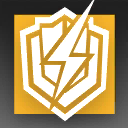 | 被撃回復 | 自動発動 | 0 | 18 | 8 | 次に受けるダメージを無効化し、8秒間防御力+100% | |
| リスカム | 5 | 重装 | 哨戒衛士 | スキル2 | カウンターアーク | 被撃回復 | 手動発動 | 0 | 34 | 20 | 通常攻撃の間隔を延長し、攻撃力+200%、通常攻撃時敵最大4体に術ダメージを与え、25%の確率で1秒間スタンさせる 効果時間終了後自身が5秒間スタン状態になる | ||
| アオスタ | 5 | 狙撃 | 散弾射手 | スキル1 | 迅速攻撃γ | 自動回復 | 手動発動 | 15 | 35 | 35 | 攻撃力+45%、攻撃速度+45 | ||
| アオスタ | 5 | 狙撃 | 散弾射手 | スキル2 | 影縫い釘 | 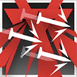 | 自動回復 | 手動発動 | 25 | 50 | 25 | 通常攻撃の間隔を延長(+50%)し、攻撃力+70%、攻撃対象を1.5秒間バインドさせる、素質のダメージ計算係数倍増 | |
| アズリウス | 5 | 狙撃 | 速射手 | スキル1 | ダブルショット | 攻撃回復 | 自動発動 | 0 | 2 | - | 次の通常攻撃時、敵2体に攻撃力の200%のダメージを与える | ||
| アズリウス | 5 | 狙撃 | 速射手 | スキル2 | 毒液装填 | 自動回復 | 手動発動 | 25 | 40 | 30 | 攻撃力+50%、攻撃主対象に2回攻撃し、追加で敵2体を攻撃する | ||
| アンドレアナ | 5 | 狙撃 | 戦術射手 | スキル1 | 攻撃力強化γ | 自動回復 | 手動発動 | 15 | 30 | 30 | 攻撃力+100% | ||
| アンドレアナ | 5 | 狙撃 | 戦術射手 | スキル2 | 脅威妨害戦術 | 自動回復 | 手動発動 | 15 | 30 | 30 | 攻撃力+240%、HPが50%以下の敵を攻撃しなくなり、攻撃対象の移動速度が6秒間-40% | ||
| イグゼキュター | 5 | 狙撃 | 散弾射手 | スキル1 | フルチョーク | 自動回復 | 手動発動 | 25 | 45 | 35 | 攻撃力+70%、特性効果の対象が攻撃範囲内の敵全員になる | ||
| イグゼキュター | 5 | 狙撃 | 散弾射手 | スキル2 | 終焉の旅路 | 自動回復 | 手動発動 | 35 | 70 | 20 | 通常攻撃が2回攻撃になり、攻撃間隔をかなり短縮(-0.9) | ||
| インサイダー | 5 | 狙撃 | 速射手 | スキル1 | 「トラブル回避」 | 攻撃回復 | 自動発動 | 0 | 12 | - | 通常攻撃時、敵に攻撃力の230%の物理ダメージを与える 合計4発の銃弾を撃ち切るとスキルが終了(手動でスキルを停止可能) | 弾薬 | |
| インサイダー | 5 | 狙撃 | 速射手 | スキル2 | 「トラブル解決」 | 自動回復 | 手動発動 | 14 | 20 | - | 攻撃間隔をわずかに短縮、攻撃力+130% 遠距離攻撃を行う敵を優先して攻撃し、敵に狙われにくくなる 合計14発の銃弾を撃ち切るとスキルが終了(手動でスキルを停止可能) | 弾薬 | |
| エイプリル | 5 | 狙撃 | 速射手 | スキル1 | 精密射撃 | 攻撃回復 | 自動発動 | 0 | 3 | - | 次の通常攻撃時、攻撃力が230%まで上昇 | ||
| エイプリル | 5 | 狙撃 | 速射手 | スキル2 | コンシールメント | パッシブ | パッシブ | - | - | 26 | 配置後攻撃力+100%、迷彩状態になる | ||
| エラト | 5 | 狙撃 | 破城射手 | スキル1 | 安眠のメローディア | 自動回復 | 自動発動 | 0 | 9 | - | 次の通常攻撃時、敵を5秒間睡眠させ、攻撃力の240%の物理ダメージを与える | ||
| エラト | 5 | 狙撃 | 破城射手 | スキル2 | 英雄へのイムヌス | 自動回復 | 手動発動 | 15 | 25 | 20 | 攻撃力+50%、攻撃速度+50、睡眠状態の敵を優先して攻撃する | ||
| グレースロート | 5 | 狙撃 | 速射手 | スキル1 | 風切 | 自動回復 | 自動発動 | 0 | 4 | - | 次の通常攻撃時、2回連続で攻撃力の140%の物理ダメージを与える 3回チャージ可能 | チャージ | |
| グレースロート | 5 | 狙撃 | 速射手 | スキル2 | 羽嵐 | 攻撃回復 | 手動発動 | 15 | 30 | 20 | 攻撃力+40%、通常攻撃が3連撃になる | ||
| コールドショット | 5 | 狙撃 | 狩人 | スキル1 | 攻撃力強化γ | 自動回復 | 手動発動 | 15 | 30 | 30 | 攻撃力+100% | ||
| コールドショット | 5 | 狙撃 | 狩人 | スキル2 | 夜に酔いしれて | 自動回復 | 手動発動 | 25 | 40 | 40 | 装填間隔を延長(+0.8)し、攻撃力+140%、攻撃した対象を1秒足止めする | ||
| シェーシャ | 5 | 狙撃 | 榴弾射手 | スキル1 | 攻撃力強化γ | 自動回復 | 手動発動 | 15 | 30 | 30 | 攻撃力+100% | ||
| シェーシャ | 5 | 狙撃 | 榴弾射手 | スキル2 | ディレイドボンバー | 自動回復 | 手動発動 | 20 | 40 | 30 | 遅延で起爆する榴弾を発射し、爆発時攻撃力の240%の物理ダメージを与え、攻撃対象の攻撃速度を3秒間-20 | ||
| ジエユン | 5 | 狙撃 | 榴弾射手 | スキル1 | 前路を調べ | 自動回復 | 手動発動 | 15 | 30 | 30 | 攻撃力+80%、攻撃速度+20 | ||
| ジエユン | 5 | 狙撃 | 榴弾射手 | スキル2 | 旧塵を擲つ | 攻撃回復 | 手動発動 | 0 | 8 | 15 | 攻撃しなくなり、前方に飛輪を投げる。前方特定位置に到達すると飛輪がそこにとどまり、ダメージ発生範囲が拡大。範囲内の敵全員に1秒ごとに攻撃力の135%の物理ダメージを与え、移動速度を50%低下させる。 | ||
| トギフォンス | 5 | 狙撃 | 破城射手 | スキル1 | 信号矢 | 自動回復 | 手動発動 | 15 | 25 | 20 | 攻撃範囲内の敵1体（最も重いサルカズ種族の敵を優先して選択）をマークする。マークされた敵が味方から攻撃されやすくなり、防御力-30%。通常攻撃が敵に攻撃力の180%の物理ダメージを与える | ||
| トギフォンス | 5 | 狙撃 | 破城射手 | スキル2 | 携帯破城矢 | 自動回復 | 手動発動 | 25 | 40 | - | 通常攻撃の間隔をわずかに延長し、竜矢を射出して敵に攻撃力の240%物理ダメージを与え、一定時間後爆発して攻撃対象と周囲一定範囲内の敵全員に攻撃力の80%の物理ダメージを与える 合計10本の矢を撃ち切るとスキルが終了（手動でスキルを停止可能） | 弾薬 | |
| ファイヤーウォッチ | 5 | 狙撃 | 戦術射手 | スキル1 | カモフラージュ | 自動回復 | 手動発動 | 0 | 20 | 50 | 攻撃力+70%、ステルス状態になる | ||
| ファイヤーウォッチ | 5 | 狙撃 | 戦術射手 | スキル2 | 爆撃要請 | 自動回復 | 手動発動 | 30 | 50 | - | 攻撃範囲内のランダムな位置に爆弾を3個投下(敵がいる位置を優先する) 爆弾は一個につき周囲一定範囲内の敵全員に攻撃力の300%の物理ダメージを与える | ||
| プラチナ | 5 | 狙撃 | 速射手 | スキル1 | 攻撃力強化γ | 自動回復 | 手動発動 | 15 | 30 | 30 | 攻撃力+100% | ||
| プラチナ | 5 | 狙撃 | 速射手 | スキル2 | ペガサスアイ | 自動回復 | 自動発動 | 0 | 50 | - | 攻撃速度がわずかに低下、攻撃力+100%、攻撃範囲拡大 退場まで効果継続 | 永続 | |
| ブリギッド | 5 | 狙撃 | 旋輪射手 | スキル1 | ノマドの心得 | 攻撃回復 | 自動発動 | 0 | 2 | - | 次の通常攻撃時、敵に攻撃力の130%の物理ダメージを与え、旋回投擲物が敵の間で数回跳躍する（最大3回まで） | ||
| ブリギッド | 5 | 狙撃 | 旋輪射手 | スキル2 | 遊牧の知恵 | 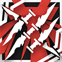 | 攻撃回復 | 手動発動 | 5 | 25 | 25 | 攻撃力+50%、旋回投擲物が攻撃対象に命中後、対象を1秒間足止めし、さらに旋回投擲物が追加で対象に4回の攻撃を行う | |
| プロヴァンス | 5 | 狙撃 | 精密射手 | スキル1 | ウルフアイ | パッシブ | パッシブ | - | - | - | 攻撃対象のHPが20%減少する度その対象を攻撃時のみ攻撃力+25% | 永続（パッシブ） | |
| プロヴァンス | 5 | 狙撃 | 精密射手 | スキル2 | 鮮血の匂い | 自動回復 | 手動発動 | 0 | 30 | 35 | 攻撃力+220%、ただしHPが80%以上の敵を攻撃しなくなる | ||
| メテオリーテ | 5 | 狙撃 | 榴弾射手 | スキル1 | 散弾装填 | 攻撃回復 | 自動発動 | 0 | 3 | - | 次の通常攻撃時、ダメージ発生範囲が拡大、攻撃力の215%の物理ダメージを与える | ||
| メテオリーテ | 5 | 狙撃 | 榴弾射手 | スキル2 | 榴弾装填 | 自動回復 | 手動発動 | 0 | 20 | - | 榴弾を発射し、ダメージ発生範囲内の敵全員に攻撃力300%の物理ダメージを与え、10秒間防御力-330 | ||
| メラナイト | 5 | 狙撃 | 精密射手 | スキル1 | 飽和パルス | 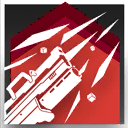 | 自動回復 | 手動発動 | 25 | 40 | 30 | 攻撃間隔を延長(+0.8s)し、攻撃力+180% | |
| メラナイト | 5 | 狙撃 | 精密射手 | スキル2 | リミテッドバースト | 自動回復 | 手動発動 | 6 | 15 | - | 正面に向かって貫通弾を発射し、接触した敵全員に最大で攻撃力の500%の物理ダメージを与える。 ダメージ量は弾の飛距離に応じて、180%まで減少する 2回チャージ可能 | チャージ | |
| ルナカブ | 5 | 狙撃 | 戦術射手 | スキル1 | 狩猟開始 | 自動回復 | 手動発動 | 10 | 20 | 18 | 攻撃力+100% | ||
| ルナカブ | 5 | 狙撃 | 戦術射手 | スキル2 | 影に潜む狩人 | 自動回復 | 手動発動 | 30 | 50 | 25 | 攻撃速度+140、自身が8秒間迷彩状態になる。敵を撃破時、更に8秒間迷彩状態になる | ||
| 寒芒クルース | 5 | 狙撃 | 速射手 | スキル1 | 無痕 | 攻撃回復 | 手動発動 | 10 | 15 | 15 | 攻撃力+40%、通常攻撃が2回連続攻撃になり、自身が迷彩状態になる | ||
| 寒芒クルース | 5 | 狙撃 | 速射手 | スキル2 | 矢継ぎ早 | 自動回復 | 手動発動 | 25 | 35 | 30 | 通常攻撃が2回連続攻撃になり、攻撃間隔を短縮(-0.375s) スキル発動中、自身の攻撃が合計32回命中すると、通常攻撃が4回連続攻撃になる | ||
| 承曦グレイ | 5 | 狙撃 | 投擲手 | スキル1 | 迅速攻撃γ | 自動回復 | 手動発動 | 15 | 35 | 35 | 攻撃力+45%、攻撃速度+45 | ||
| 承曦グレイ | 5 | 狙撃 | 投擲手 | スキル2 | 明けの明星 | 自動回復 | 手動発動 | 0 | 25 | - | 対象がいる位置に12秒間継続するライトニングボールを1つ発射し、ライトニングボールは1.5秒ごとに周囲の敵全員に攻撃力の130%の術ダメージを与え、40%の確率で1.6秒足止めする 2回チャージ可能 | チャージ | |
| アイリス | 5 | 術師 | 秘術師 | スキル1 | 童話の守り人 | 自動回復 | 手動発動 | 5 | 15 | 5 | 攻撃範囲変化、攻撃間隔を大幅に短縮し、通常攻撃時、敵に攻撃力の50%の術ダメージを与える | ||
| アイリス | 5 | 術師 | 秘術師 | スキル2 | 夢想揺籃 | 自動回復 | 手動発動 | 10 | 30 | - | 攻撃範囲内の敵最大2体に7秒間睡眠させる。効果時間終了時、対象の周囲一定範囲内にいる敵全員に攻撃力の300%の術ダメージを与える | ||
| アステジーニ | 5 | 術師 | 連鎖術師 | スキル1 | ボルテージダブラー | 自動回復 | 自動発動 | 0 | 7 | - | 次の通常攻撃時、攻撃力が125%まで上昇し、敵2体を同時に攻撃する。それぞれの跳躍の最大対象数が4体になる 3回チャージ可能 | チャージ | |
| アステジーニ | 5 | 術師 | 連鎖術師 | スキル2 | アストラルバースト | 自動回復 | 手動発動 | 20 | 40 | 25 | 攻撃範囲拡大、攻撃力+40%、通常攻撃で敵2体を同時に攻撃する | ||
| アブサント | 5 | 術師 | 中堅術師 | スキル1 | 執行態勢 | 自動回復 | 自動発動 | 0 | 70 | - | 攻撃力+90%、残りHPの割合が一番少ない敵を優先して攻撃する 退場まで効果継続 | 永続 | |
| アブサント | 5 | 術師 | 中堅術師 | スキル2 | 告死の弾雨 | 自動回復 | 手動発動 | 28 | 50 | 30 | 通常攻撃が攻撃力の90%での4回連続攻撃になり、HPが50%以上の敵を攻撃しなくなる | ||
| アロマ | 5 | 術師 | 爆撃術師 | スキル1 | 強力洗浄 | 自動回復 | 自動発動 | 0 | 8 | - | 次の通常攻撃時、敵に攻撃力の210%の術ダメージを与え、空中の敵に追加で攻撃力の90%の術ダメージを与える 2回チャージ可能 | チャージ | |
| アロマ | 5 | 術師 | 爆撃術師 | スキル2 | スリップ注意 | 自動回復 | 手動発動 | 27 | 42 | 23 | 攻撃力+100%、攻撃範囲内の敵の浮遊状態が終了した時、攻撃力の110%の術ダメージを与える | ||
| アーミヤ | 5 | 術師 | 中堅術師 | スキル1 | 戦術詠唱γ | 自動回復 | 手動発動 | 15 | 30 | 30 | 攻撃速度+90 | ||
| アーミヤ | 5 | 術師 | 中堅術師 | スキル2 | ソウルブースト | 自動回復 | 自動発動 | 0 | 100 | 25 | 通常攻撃が攻撃力の60%での8回連続攻撃になり、ランダムで範囲内の敵を攻撃する 効果時間終了後自身が10秒間スタン状態になる | ||
| アーミヤ | 5 | 術師 | 中堅術師 | スキル3 | キメラ | 自動回復 | 手動発動 | 0 | 120 | 30 | 攻撃力+230%、最大HP+100%、攻撃範囲が拡大し、通常攻撃が確定ダメージを与える。効果時間終了後強制退場 | ||
| イェラ | 5 | 術師 | 操機術師 | スキル1 | 攻撃力強化γ | 自動回復 | 手動発動 | 15 | 30 | 30 | 攻撃力+100% | ||
| イェラ | 5 | 術師 | 操機術師 | スキル2 | 心意のままに | 自動回復 | 手動発動 | 20 | 40 | 25 | 攻撃力+55%、浮遊ユニットの数+1、自動索敵して攻撃する浮遊ユニットを放出し、自身と浮遊ユニットの攻撃時、22%の確率で攻撃対象に2.5秒の寒冷状態を付与する 索敵中の浮遊ユニットは目標が倒された時あるいはスキル終了時、索敵を中断する | ||
| ウォーミー | 5 | 術師 | 本源術師 | スキル1 | ぱちぱち火花 | 自動回復 | 手動発動 | 10 | 20 | 20 | 攻撃速度+100。攻撃時に術ダメージの15%の灼熱損傷を与える | ||
| ウォーミー | 5 | 術師 | 本源術師 | スキル2 | めらめら焔 | 自動回復 | 手動発動 | 12 | 20 | 15 | 通常攻撃の間隔が延長(+0.9s)し、攻撃力+200%、敵2体を同時に攻撃 オーバーチャージ追加効果：代わりに敵3体を同時に攻撃する。継続時間が30秒まで延長する。攻撃時に対象が灼熱損傷の爆発効果を受けている場合、対象に追加で攻撃力の50%の元素ダメージを与える | オーバーチャージ | |
| カニパラート | 5 | 術師 | 中堅術師 | スキル1 | 吹きすさぶ凍風 | 自動回復 | 手動発動 | 15 | 30 | 30 | 攻撃速度+90、飛行ユニットを優先して攻撃 | ||
| カニパラート | 5 | 術師 | 中堅術師 | スキル2 | 駆けのぼる氷雪 | 自動回復 | 手動発動 | 10 | 30 | 7 | 攻撃範囲内の地面上にいる敵最大2体に0.5秒ごとに攻撃力の75%の術ダメージを与え、7秒間浮遊させる。スキル終了時、周囲一定範囲内の敵全員に攻撃力の300%の術ダメージを与える | ||
| コロセラム | 5 | 術師 | 爆撃術師 | スキル1 | 過集中 | 自動回復 | 手動発動 | 0 | 30 | 30 | 攻撃力+135% 効果時間終了後自身が10秒間スタン状態になる | ||
| コロセラム | 5 | 術師 | 爆撃術師 | スキル2 | 神経蝕滞弾 | 自動回復 | 手動発動 | 25 | 40 | 25 | 攻撃力+100%、攻撃対象の一部の特殊能力を5秒間無効化する 手動でスキルを停止可能 | ||
| サンタラ | 5 | 術師 | 拡散術師 | スキル1 | 迅速攻撃γ | 自動回復 | 手動発動 | 15 | 35 | 35 | 攻撃力+45%、攻撃速度+45 | ||
| サンタラ | 5 | 術師 | 拡散術師 | スキル2 | 「魔女の涙」 | 自動回復 | 手動発動 | 20 | 40 | 15 | 攻撃範囲拡大、攻撃間隔を超大幅に短縮(-2.4s)、通常攻撃が攻撃範囲内のランダムなマスに氷柱を召喚する攻撃になる。地面に落ちた氷柱は周囲の敵全員に1秒の寒冷状態を付与すると同時に、攻撃力の90%の術ダメージを与える | ||
| スカイフレア | 5 | 術師 | 拡散術師 | スキル1 | 攻撃力強化γ | 自動回復 | 手動発動 | 15 | 30 | 30 | 攻撃力+100% | ||
| スカイフレア | 5 | 術師 | 拡散術師 | スキル2 | メテオフレイム | 自動回復 | 手動発動 | 0 | 25 | 40 | 通常攻撃の間隔を延長(+70%)し、隕石を召喚する 隕石は衝突まで時間がかかるが、衝突後一定範囲内の敵全員に攻撃力240%分の術ダメージを与え、1秒間スタンさせる | ||
| ディアマンテ | 5 | 術師 | 本源術師 | スキル1 | レーザードリリング | 自動回復 | 手動発動 | 20 | 30 | 20 | 攻撃力+110%、攻撃対象に追加で術ダメージの15%の壊死損傷を与える。対象が壊死損傷の爆発効果中の場合、追加で攻撃力の50%の元素ダメージを与える | ||
| ディアマンテ | 5 | 術師 | 本源術師 | スキル2 | ヒートエンハンスメント | 自動回復 | 手動発動 | 20 | 35 | 35 | 攻撃速度+90、攻撃対象数+1。攻撃対象が壊死損傷の爆発効果中の場合、追加で攻撃力の75%の元素ダメージを与える | ||
| テクノ | 5 | 術師 | 創霊術師 | スキル1 | 関節部補強 | 自動回復 | 手動発動 | 10 | 25 | 25 | 攻撃力+50%、パペットダンサーのブロック数+1、最大HP+50%、防御力+100% | ||
| テクノ | 5 | 術師 | 創霊術師 | スキル2 | 気ままなグラフィティ | 自動回復 | 手動発動 | 20 | 35 | 20 | 攻撃範囲拡大、自身とパペットダンサーの攻撃速度+100、パペットダンサーがテクノの攻撃範囲内の敵に対し遠距離攻撃を行うようになる スキル終了時、全てのパペットダンサーがテクノの最も近くの配置可能マスに再召喚される | ||
| デルフィーン | 5 | 術師 | 秘術師 | スキル1 | 「集中」 | 自動回復 | 手動発動 | 5 | 15 | 5 | 攻撃範囲変化、攻撃間隔を大幅に短縮し、通常攻撃時、敵に攻撃力の50%の術ダメージを与える | ||
| デルフィーン | 5 | 術師 | 秘術師 | スキル2 | 「制圧」 | 自動回復 | 手動発動 | 20 | 40 | 30 | 攻撃力+100%、HPが50%未満の敵を攻撃しなくなる。 攻撃を受けた対象は毎秒デルフィーンの攻撃力の6%の術ダメージを受ける （最大4回まで重複し、スキル終了まで持続） | ||
| トミミ | 5 | 術師 | 中堅術師 | スキル1 | 部族の教え | 自動回復 | 手動発動 | 15 | 30 | 30 | 攻撃速度+90 | ||
| トミミ | 5 | 術師 | 中堅術師 | スキル2 | ガヴィル保護プラン | 自動回復 | 手動発動 | 20 | 30 | 30 | 攻撃時100%の確率で次の効果からランダムで一つ発動する: 攻撃対象を1.6秒間スタンさせる/その攻撃のみ攻撃力が220%まで上昇/その攻撃のみ範囲ダメージを与える | ||
| ナイトメア | 5 | 術師 | 中堅術師 | スキル1 | ソウルドレイン | 自動回復 | 手動発動 | 50 | 80 | 60 | 通常攻撃時、攻撃範囲内の味方最大2人のHPをダメージの100%分回復する | ||
| ナイトメア | 5 | 術師 | 中堅術師 | スキル2 | ナイトシャドウ | 自動回復 | 自動発動 | 0 | 20 | - | 攻撃範囲内の敵最大5体に次の状態を付与： 10秒間、移動速度-60%、移動距離に応じて確定ダメージを受ける | ||
| ハーモニー | 5 | 術師 | 秘術師 | スキル1 | 舞は軽やかに | 自動回復 | 手動発動 | 5 | 15 | 5 | 攻撃範囲変化、攻撃間隔を大幅に短縮し、通常攻撃時、敵に攻撃力の50%の術ダメージを与える | ||
| ハーモニー | 5 | 術師 | 秘術師 | スキル2 | 耽溺の結末 | 自動回復 | 手動発動 | 20 | 30 | 30 | スキル発動後、ブロックされている敵のみを攻撃するようになり、攻撃間隔を短縮(×0.6)する。攻撃範囲内に水域を一つ生成し、水域の範囲内にいる敵全員に1秒ごとに250の術ダメージを与え、移動速度を60%低下させる | ||
| ビーズワクス | 5 | 術師 | 法陣術師 | スキル1 | 砂嵐拡散 | 自動回復 | 手動発動 | 8 | 18 | 20 | 攻撃範囲拡大、攻撃力+60% | ||
| ビーズワクス | 5 | 術師 | 法陣術師 | スキル2 | オベリスク召喚 | 自動回復 | 手動発動 | 10 | 20 | 20 | 攻撃範囲内の近距離配置マスに敵をブロック可能の「砂の碑」を召喚。 「砂の碑」出現時、周囲にいる敵全員に攻撃力の300%の術ダメージを与え、3秒間スタンさせる | ||
| ミス・クリスティーン | 5 | 術師 | 本源術師 | スキル1 | 食事は気ままに | 自動回復 | 手動発動 | 15 | 30 | 25 | 攻撃力+50%、敵2体を同時に攻撃できる。攻撃時に与えた術ダメージの15%の神経損傷を追加で与える | ||
| ミス・クリスティーン | 5 | 術師 | 本源術師 | スキル2 | 狂飲の宴 | 自動回復 | 手動発動 | 15 | 35 | 20 | 攻撃を停止し、対象のいる位置に感知霊体を放つ。感知霊体は周囲の敵全員に1秒ごとに攻撃力の115%の術ダメージを与え、神経損傷爆発効果中の対象に追加で攻撃力の115%の元素ダメージを与える | ||
| ミニマリスト | 5 | 術師 | 操機術師 | スキル1 | 迅速攻撃γ | 自動回復 | 手動発動 | 15 | 35 | 35 | 攻撃力+45%、攻撃速度+45 | ||
| ミニマリスト | 5 | 術師 | 操機術師 | スキル2 | マスターピース | 自動回復 | 自動発動 | 4 | 5 | - | 次の通常攻撃時、敵に2回連続で攻撃力の200%の術ダメージを与える 3回チャージ可能 | チャージ | |
| ミント | 5 | 術師 | 法陣術師 | スキル1 | 風のささやき | 自動回復 | 手動発動 | 8 | 20 | 20 | 攻撃範囲拡大、攻撃時、敵に攻撃力の160%の術ダメージを与える | ||
| ミント | 5 | 術師 | 法陣術師 | スキル2 | スパイラルバースト | 自動回復 | 手動発動 | 15 | 25 | 20 | 攻撃時、敵を相当の力で引き寄せ、攻撃力の130%の術ダメージを与える スキル効果時間終了時、攻撃範囲内の敵全員に攻撃力の300%の術ダメージを与える | ||
| レイズ | 5 | 術師 | 連鎖術師 | スキル1 | 攻撃力強化γ | 自動回復 | 手動発動 | 15 | 30 | 30 | 攻撃力+100% | ||
| レイズ | 5 | 術師 | 連鎖術師 | スキル2 | 初雷 | 自動回復 | 手動発動 | 50 | 80 | 35 | 攻撃力+150%、跳躍時のダメージ減衰が発生しなくなる | ||
| レオンハルト | 5 | 術師 | 拡散術師 | スキル1 | 攻撃力強化γ | 自動回復 | 手動発動 | 15 | 30 | 30 | 攻撃力+100% | ||
| レオンハルト | 5 | 術師 | 拡散術師 | スキル2 | 弱点解析＆爆破 | 自動回復 | 手動発動 | 0 | 10 | - | 攻撃範囲拡大、攻撃範囲内のすべての敵に攻撃力の230%の術ダメージを与え、6秒間術耐性-15% 3回チャージ可能 | チャージ | |
| ロックロック | 5 | 術師 | 操機術師 | スキル1 | 戦術詠唱γ | 自動回復 | 手動発動 | 15 | 30 | 30 | 攻撃速度+90 | ||
| ロックロック | 5 | 術師 | 操機術師 | スキル2 | 軛を背負う | 自動回復 | 手動発動 | 25 | 40 | 40 | 攻撃速度+80、自動索敵して攻撃する浮遊ユニットを放出する オーバードライブ：特性による浮遊ユニットのダメージ上限が2倍まで上昇し、攻撃力+50%、スキルの効果時間終了後オーバードライブ継続時間と同等の時間スタン状態になる 索敵中の浮遊ユニットは目標が倒された時あるいはスキル終了時、索敵を中断する。手動でスキルを停止可能 | オーバードライブ | |
| 炎獄ラヴァ | 5 | 術師 | 拡散術師 | スキル1 | フレイムエンチャント | 自動回復 | 手動発動 | 10 | 50 | 35 | 攻撃範囲+1、攻撃力+20%、敵最大2体を同時に攻撃 | ||
| 炎獄ラヴァ | 5 | 術師 | 拡散術師 | スキル2 | プルガトリオ | 自動回復 | 手動発動 | 30 | 70 | 40 | 攻撃しなくなる。攻撃範囲内にいるHPが最も高い味方を選択し、対象と自身を炎の輪で覆い、1秒ごとに周囲8マスの敵全員に攻撃力50%の術ダメージを与える | ||
| アーミヤ（医療） | 5 | 医療 | 呪癒師 | スキル1 | 悲痛共感 | 自動回復 | 手動発動 | 40 | 70 | 50 | 攻撃速度+75、攻撃するたびに追加で一定範囲内の味方全員のHPを攻撃力の25%治療する | ||
| アーミヤ（医療） | 5 | 医療 | 呪癒師 | スキル2 | 慈悲先途 | 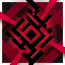 | 自動回復 | 手動発動 | 10 | 20 | 32 | 攻撃範囲内の敵全員に攻撃力の200%で一度攻撃を行い、10秒間、対象の攻撃速度-60、移動速度-60%。 命中した敵1体につき、攻撃力+30%（上限5回まで）、その後の通常攻撃は確定ダメージを与えるようになり、敵2体を同時に攻撃可能。 1回の作戦につき発動上限1回 | |
| ヴァンデラ | 5 | 医療 | 呪癒師 | スキル1 | 戦術詠唱γ | 自動回復 | 手動発動 | 15 | 30 | 30 | 攻撃速度+90 | ||
| ヴァンデラ | 5 | 医療 | 呪癒師 | スキル2 | 茨の庇護 | 自動回復 | 手動発動 | 15 | 30 | 15 | 攻撃力+80%、攻撃範囲内で最大HPが最も高い味方が敵に狙われやすくなる。また、その味方ユニットがダメージを受けたとき、ヴァンデラは攻撃者に攻撃力の50%の術ダメージを与え、その味方にのみヴァンデラの特性を発動する | ||
| ウィスパーレイン | 5 | 医療 | 療養師 | スキル1 | 対症療法 | 攻撃回復 | 自動発動 | 0 | 2 | - | 次に味方を治療する時、治療対象数+1、対象（異常状態中のユニットを優先して選択）のHPをウィスパーレインの攻撃力の130%回復して、5秒のレジスト状態を付与する | ||
| ウィスパーレイン | 5 | 医療 | 療養師 | スキル2 | 痛覚抑制 | 自動回復 | 自動発動 | 0 | 55 | - | 通常攻撃の間隔を短縮(-20%)し、素質のHP回復効果が200%まで上昇、治療をする度に対象に4秒のレジスト状態を付与する 退場まで効果継続 | 永続 | |
| サイレンス | 5 | 医療 | 医師 | スキル1 | 回復力強化γ | 自動回復 | 手動発動 | 20 | 30 | 30 | 攻撃力+90% | ||
| サイレンス | 5 | 医療 | 医師 | スキル2 | 医療ドローン | 自動回復 | 自動発動 | 0 | 18 | - | ドローンは配置後10秒間周囲の味方を回復し、効果終了後消滅する | ||
| セイロン | 5 | 医療 | 療養師 | スキル1 | ハイドロセラピー | 自動回復 | 自動発動 | 0 | 8 | - | 次に味方を治療する時、特性による回復量低下が無効化され、自身の攻撃力の200%で味方を回復 3回チャージ可能 | チャージ | |
| セイロン | 5 | 医療 | 療養師 | スキル2 | 水霊の加護 | 自動回復 | 手動発動 | 40 | 80 | 40 | 攻撃力+60%、治療対象数+1。スキル発動中、攻撃範囲内にいる味方全員にレジスト状態を付与する | ||
| トゥイエ | 5 | 医療 | 医師 | スキル1 | アクアリング | 自動回復 | 手動発動 | 0 | 12 | - | 治療行動を行い、治療対象に継続5秒のバリアを付与（バリアはトゥイエの攻撃力の200%の被ダメージを吸収可能） | ||
| トゥイエ | 5 | 医療 | 医師 | スキル2 | カンフル剤 | 自動回復 | 自動発動 | 20 | 50 | - | 攻撃力+60%、HPが最大値の半分以下の味方のみを治療対象とする。 攻撃範囲内の味方のHPが最大値の20%以下になる時、その対象のHPを攻撃力の300%回復、この効果が3回発動後、スキルの効果時間終了 退場まで効果継続 | 永続 | |
| ノウエル | 5 | 医療 | 療養師 | スキル1 | たゆまぬ歩み | 自動回復 | 手動発動 | 20 | 30 | 30 | 攻撃力+40%、攻撃速度+40、状態異常中のオペレーターを優先して治療する | ||
| ノウエル | 5 | 医療 | 療養師 | スキル2 | ついえぬ命 | 自動回復 | 手動発動 | 12 | 20 | - | 攻撃範囲内のオペレーター3名（状態異常中のオペレーター優先して選択）に12秒の間、レジスト状態と、1秒ごとにノウエルの攻撃力の45%の継続回復効果を付与する | ||
| ハニーベリー | 5 | 医療 | 放浪医 | スキル1 | メンタルケア | 自動回復 | 自動発動 | 0 | 4 | - | 次に味方を治療する時、元素損傷の蓄積値が最も高い味方2人を優先して同時に治療し、治療対象に蓄積された元素損傷を3秒間1秒ごとにハニーベリーの攻撃力の100%の値分治療する | ||
| ハニーベリー | 5 | 医療 | 放浪医 | スキル2 | リフレッシュ | 自動回復 | 手動発動 | 20 | 45 | 25 | 攻撃力+50%、元素損傷の蓄積値が最も高い味方3人を優先して同時に治療する | ||
| パピルス | 5 | 医療 | 連鎖癒師 | スキル1 | 「ひらめいた！」 | 自動回復 | 自動発動 | 0 | 8 | - | 次に味方を治療する時、治療量が攻撃力の200%まで上昇し、素質によるバリアの効果が200%まで上昇する 2回チャージ可能 | チャージ | |
| パピルス | 5 | 医療 | 連鎖癒師 | スキル2 | 「なるようになれー！」 | 自動回復 | 手動発動 | 15 | 30 | 15 | スキル発動中、攻撃範囲内にいる自身を除く最大HPの最も高いオペレーターのみ治療対象とする。攻撃間隔が短くなり、攻撃力+50%、治療の跳躍回数+1 | ||
| パプリカ | 5 | 医療 | 連鎖癒師 | スキル1 | 援護作戦γ | 自動回復 | 手動発動 | 20 | 30 | 30 | 攻撃速度+85 | ||
| パプリカ | 5 | 医療 | 連鎖癒師 | スキル2 | 仲間意識 | 自動回復 | 手動発動 | 25 | 30 | 25 | 攻撃力+70%、治療の跳躍回数+1、素質の発動条件が「最大HPの80%未満」になる | ||
| ハロルド | 5 | 医療 | 放浪医 | スキル1 | 回復力強化γ | 自動回復 | 手動発動 | 20 | 30 | 30 | 攻撃力+90% | ||
| ハロルド | 5 | 医療 | 放浪医 | スキル2 | 重体優先 | 自動回復 | 手動発動 | 18 | 30 | 25 | 攻撃速度+100。 元素損傷の蓄積値が最も高い味方を優先して治療する。 元素損傷の蓄積値が最大値の50%を超える対象を治療する場合、元素損傷の治療値が250%まで上昇する | ||
| フィリオプシス | 5 | 医療 | 群癒師 | スキル1 | 回復力強化γ | 自動回復 | 手動発動 | 20 | 30 | 30 | 攻撃力+90% | ||
| フィリオプシス | 5 | 医療 | 群癒師 | スキル2 | エンケファリン | 自動回復 | 手動発動 | 85 | 100 | 40 | 攻撃範囲拡大、通常攻撃の間隔を超大幅に短縮(-2.1s) | ||
| フォリニック | 5 | 医療 | 医師 | スキル1 | 最大限度量投薬 | 自動回復 | 手動発動 | 20 | 30 | 40 | 攻撃範囲+2、攻撃力+80% | ||
| フォリニック | 5 | 医療 | 医師 | スキル2 | 特製薬刃弾 | 自動回復 | 手動発動 | 20 | 40 | 30 | 通常攻撃が薬刃弾射撃(攻撃範囲内の敵を優先して攻撃)になり、薬刃弾命中時、一定範囲内の味方全員のHPを攻撃力の150%回復、敵全員に攻撃力の200%の術ダメージを与える | ||
| ブリーズ | 5 | 医療 | 群癒師 | スキル1 | 集中療法 | 自動回復 | 手動発動 | 20 | 30 | 35 | 攻撃力+140%、回復可能な味方数-1 | ||
| ブリーズ | 5 | 医療 | 群癒師 | スキル2 | 拡散療法 | 自動回復 | 手動発動 | 60 | 80 | 45 | 攻撃力+250%、通常回復が次のように変更： 攻撃範囲内の味方を対象として医療弾を撃ち、対象と対象周囲8マスの味方を回復（周囲の味方を回復時回復量が50%） | ||
| マルベリー | 5 | 医療 | 放浪医 | スキル1 | ヒーリングミスト | 自動回復 | 自動発動 | 0 | 3 | - | 次に味方を治療する時、HP回復量と元素損傷に対する治療値が180%まで上昇し、元素損傷の蓄積値が最も高い味方を優先して治療する 2回チャージ可能 | チャージ | |
| マルベリー | 5 | 医療 | 放浪医 | スキル2 | セーフティゾーン | 自動回復 | 手動発動 | 50 | 66 | 30 | 通常攻撃の間隔を大幅に短縮(-74%)し、元素損傷の蓄積値が最も高い味方を優先して治療し、攻撃範囲内の味方全員が受ける元素損傷の値が35%減少 | ||
| ローズソルト | 5 | 医療 | 群癒師 | スキル1 | 急なケガにはこの薬！ | 自動回復 | 自動発動 | 0 | 8 | - | 次に味方を治療する時、対象のHPを攻撃力の190%回復 2回チャージ可能 | チャージ | |
| ローズソルト | 5 | 医療 | 群癒師 | スキル2 | 長く効くのがこの薬！ | 自動回復 | 手動発動 | 27 | 36 | 27 | 通常攻撃の間隔を短縮し、攻撃範囲内のオペレーターが物理・術ダメージを受けた際、被ダメージを50%軽減し、軽減したダメージ分のHPを5秒間にかけて継続的に失う | ||
| ワルファリン | 5 | 医療 | 医師 | スキル1 | 救急包帯法 | 攻撃回復 | 自動発動 | 0 | 4 | - | HP50%以下の味方を回復する時、通常回復の上、更に対象のHPを最大値の25%回復する 4回チャージ可能 | チャージ | |
| ワルファリン | 5 | 医療 | 医師 | スキル2 | 不安定血漿 | 自動回復 | 手動発動 | 50 | 60 | - | 自身と攻撃範囲内の味方1人に以下の効果を付与： 15秒間、攻撃力+90%、1秒ごとにHPが最大値の3%減少 | 自傷 | |
| 濯塵ハイビスカス | 5 | 医療 | 呪癒師 | スキル1 | 攻撃力強化γ | 自動回復 | 手動発動 | 15 | 30 | 30 | 攻撃力+100% | ||
| 濯塵ハイビスカス | 5 | 医療 | 呪癒師 | スキル2 | 業の救済 | 自動回復 | 手動発動 | 10 | 18 | 8 | 範囲内の敵最大2体に1秒ごとに攻撃力の170%の術ダメージを与え、その対象の移動速度-45% | ||
| アランナ | 5 | 補助 | 工匠 | スキル1 | エアブースター | パッシブ | パッシブ | - | - | - | 支援装置の効果を受けているオペレーターの攻撃速度+23、支援装置の持続時間+30 | ||
| アランナ | 5 | 補助 | 工匠 | スキル2 | ウルトラジャッキ | 自動回復 | 手動発動 | 15 | 20 | 15 | 攻撃力+50%、攻撃速度+50、素質の効果が2.7倍まで上昇、スキル終了後に支援装置を1個獲得 | ||
| イースチナ | 5 | 補助 | 緩速師 | スキル1 | 一心不乱 | 自動回復 | 手動発動 | 20 | 40 | 30 | 通常攻撃の間隔を超大幅に短縮(-1.1s) | ||
| イースチナ | 5 | 補助 | 緩速師 | スキル2 | 嵐より生まれしもの | 自動回復 | 手動発動 | 30 | 50 | 25 | 攻撃力+75%、攻撃範囲拡大、攻撃対象数+2 | ||
| ヴァラルクビン | 5 | 補助 | 祭儀師 | スキル1 | 崩壊を視しとき | 自動回復 | 自動発動 | 0 | 7 | - | 次の通常攻撃時、敵に攻撃力の130%の術ダメージを与え、さらに攻撃力の80%の壊死損傷を与える 2回チャージ可能 | チャージ | |
| ヴァラルクビン | 5 | 補助 | 祭儀師 | スキル2 | 枯朽を視たりて | 自動回復 | 手動発動 | 15 | 30 | 20 | 攻撃速度+50、攻撃対象数+1、攻撃時、対象に追加で攻撃力の35%の壊死損傷を与える | ||
| ウインドフリット | 5 | 補助 | 工匠 | スキル1 | この身で築かす | 自動回復 | 自動発動 | 0 | 6 | - | 次の通常攻撃時、周囲8マスの地面にいる敵全員に攻撃力の250%の物理ダメージを与え、全ての高信頼性バッテリーの効果作用対象のSPを1回復する 3回チャージ可能 | チャージ | |
| ウインドフリット | 5 | 補助 | 工匠 | スキル2 | この身を源とす | 自動回復 | 手動発動 | 35 | 50 | 15 | 通常攻撃の間隔を延長(+0.5)し、攻撃力+160%、素質の攻撃力上昇効果が2倍まで上昇、スキルの効果時間終了後高信頼性バッテリーを1個獲得 | ||
| キャサリン | 5 | 補助 | 工匠 | スキル1 | 歳月による鍛造 | 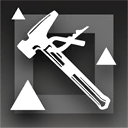 | パッシブ | パッシブ | - | - | - | 攻撃力+15%、防御力+15% 自身の支援装置によるバリアを有する他のオペレーターも同じ効果を獲得 | 永続（パッシブ） |
| キャサリン | 5 | 補助 | 工匠 | スキル2 | 戦火の焼き入れ | 自動回復 | 手動発動 | 15 | 30 | 30 | 攻撃しなくなり、最大HP+70%、防御力+30%、支援装置の効果が「対象が1秒ごとにキャサリンの最大HPの6%に相当するバリアを獲得する」になる（素質によるバリア付与上限は超えない） | ||
| クエルクス | 5 | 補助 | 祈祷師 | スキル1 | 大地の慈悲 | 自動回復 | 手動発動 | 0 | 40 | - | 攻撃力+40% 退場まで効果継続、手動でスキルを停止可能 | 永続 | |
| クエルクス | 5 | 補助 | 祈祷師 | スキル2 | 生命の木霊 | 自動回復 | 手動発動 | 15 | 25 | 17 | 攻撃速度+60、味方を治療時、同時に治療対象のSPを1回復する | ||
| グラウコス | 5 | 補助 | 緩速師 | スキル1 | デュアルリロード | 自動回復 | 手動発動 | 20 | 35 | 25 | 攻撃力+50%、攻撃対象数+1 | ||
| グラウコス | 5 | 補助 | 緩速師 | スキル2 | 電磁パルス | 自動回復 | 手動発動 | 20 | 30 | - | 周囲に衝撃波を放ち、命中した敵に攻撃力の400%の術ダメージを与え、6秒間バインドさせる。 攻撃対象が【ドローン】の場合、与ダメージが2倍になり、敵をスタンさせる | ||
| グレインバッズ | 5 | 補助 | 緩速師 | スキル1 | 吹笛遠鳴 | 自動回復 | 自動発動 | 0 | 6 | - | 次の通常攻撃時、敵に攻撃力の210%の術ダメージを与え、攻撃対象数+1 3回チャージ可能 | チャージ | |
| グレインバッズ | 5 | 補助 | 緩速師 | スキル2 | 郷愁を誘う子守歌 | 自動回復 | 手動発動 | 15 | 25 | 15 | 攻撃しなくなり、攻撃範囲内にいる3体の敵に5秒の睡眠状態を付与する。 その後、通常攻撃が同時に最大3体の敵を攻撃するようになり、攻撃速度+130 | ||
| サンドレコナー | 5 | 補助 | 召喚師 | スキル1 | ゼンマイ巻き | 自動回復 | 自動発動 | 20 | 30 | 10 | サンドレコナーと全てのカラクリ羽獣の攻撃速度+60 | ||
| サンドレコナー | 5 | 補助 | 召喚師 | スキル2 | 天秤の持ち手 | 自動回復 | 手動発動 | 20 | 40 | 20 | 「カラクリ羽獣」を1体獲得し、全てのカラクリ羽獣の攻撃力+40%、重量が最も重い敵を優先して攻撃し、カラクリ羽獣の攻撃が対象を1秒足止めする | ||
| シィンズゥ | 5 | 補助 | 祈祷師 | スキル1 | 万巻の書 | 自動回復 | 手動発動 | 8 | 10 | - | 攻撃範囲内の味方全員に治療を行い、対象のHPをシィンズゥの攻撃力の+330%回復する | ||
| シィンズゥ | 5 | 補助 | 祈祷師 | スキル2 | 百味食珍 | 自動回復 | 手動発動 | 60 | 75 | 30 | 攻撃速度+50、治療対象数+1、1秒ごとに素質の効果を受けている対象のHPをシィンズゥの攻撃力の20%回復する | ||
| シャマレ | 5 | 補助 | 呪詛師 | スキル1 | 不治の呪い | 自動回復 | 自動発動 | 0 | 70 | - | 攻撃力+60%、素質の被ダメージ上昇効果を1.8倍まで上昇 退場まで効果継続 | 永続 | |
| シャマレ | 5 | 補助 | 呪詛師 | スキル2 | 呪いの人形 | 自動回復 | 自動発動 | 10 | 30 | - | 「呪いの人形」1体が配置可能になる(上限1体) 「呪いの人形」の周囲の敵全員の攻撃力と防御力-50%、配置から15秒後消滅する | ||
| シーン | 5 | 補助 | 召喚師 | スキル1 | 擬態化機能 | 自動回復 | 自動発動 | 0 | 60 | - | 撮影ロボット全員の攻撃力+60%、迷彩状態になる 退場まで効果継続 | 永続 | |
| シーン | 5 | 補助 | 召喚師 | スキル2 | フルパノラマ撮影 | 自動回復 | 手動発動 | 15 | 30 | 20 | 配置可能な「撮影ロボット」を1体獲得し、撮影ロボット全員のアンチステルス効果範囲拡大、攻撃力+130%、防御力+130%、術耐性+20 スキルの効果時間終了後撮影ロボット全員が5秒間スタン状態になる | ||
| ソラ | 5 | 補助 | 吟遊者 | スキル1 | すやすやナンバー | 自動回復 | 手動発動 | 45 | 60 | 7 | 攻撃範囲拡大、攻撃範囲内の敵全員を睡眠させる 特性の効果が100%まで上昇 | ||
| ソラ | 5 | 補助 | 吟遊者 | スキル2 | ファイトソング | 自動回復 | 手動発動 | 25 | 45 | 30 | 攻撃範囲内の自身以外の味方全員にソラの攻撃力の100%の鼓舞状態を付与する | ||
| ツキノギ | 5 | 補助 | 祈祷師 | スキル1 | 跡無 | 自動回復 | 手動発動 | 25 | 50 | 35 | 攻撃範囲内の味方の物理回避と術回避+35%、敵のステルス状態を無効にする | ||
| ツキノギ | 5 | 補助 | 祈祷師 | スキル2 | 森廻 | 自動回復 | 手動発動 | 23 | 48 | 20 | 攻撃しなくなる。 素質の発動条件がHPの60%になり、加護の効果が2.3倍まで上昇、攻撃範囲内の味方全員のHPを1秒ごとにツキノギの攻撃力の12%回復 | ||
| ハイディ | 5 | 補助 | 吟遊者 | スキル1 | 架空の物語・怒れる者 | 自動回復 | 手動発動 | 12 | 20 | 10 | 攻撃範囲内の味方全員のブロック数-3、ハイディの攻撃力の110%の鼓舞状態を付与する | ||
| ハイディ | 5 | 補助 | 吟遊者 | スキル2 | 架空の物語・錆びた城 | 自動回復 | 手動発動 | 20 | 30 | 20 | 攻撃範囲内の味方全員のブロック数+1、ハイディの防御力の70%と最大HPの30%の鼓舞状態を付与して、特性の効果が30%まで上昇する | ||
| プラマニクス | 5 | 補助 | 呪詛師 | スキル1 | 木霊せし聖音 | 自動回復 | 手動発動 | 25 | 40 | 20 | 敵最大2体を同時に攻撃 攻撃範囲内の敵全員の攻撃速度-60 | ||
| プラマニクス | 5 | 補助 | 呪詛師 | スキル2 | カランドの威圧 | 自動回復 | 手動発動 | 20 | 40 | 25 | 攻撃範囲内の敵全員の防御力-60%、術耐性-30% | ||
| プロヴァイゾ | 5 | 補助 | 緩速師 | スキル1 | 訴訟提起 | 自動回復 | 自動発動 | 0 | 5 | - | 次の通常攻撃時、敵に攻撃力の300%の術ダメージを与え、特性による足止め状態の継続時間をわずかに延長 3回チャージ可能 | チャージ | |
| プロヴァイゾ | 5 | 補助 | 緩速師 | スキル2 | 論理展開 | 自動回復 | 手動発動 | 15 | 25 | 10 | 攻撃範囲内のすべての敵に攻撃力の350%の術ダメージを与え、10秒間足止めし、一部の特殊能力を無効化する。その後、自身の攻撃間隔が大幅に短縮(-1.1) | ||
| ボビング | 5 | 補助 | 祭儀師 | スキル1 | 非友好的交渉 | 自動回復 | 自動発動 | 0 | 10 | - | 次の通常攻撃時、敵に攻撃力の200%の術ダメージを与え、さらに攻撃力の120%の灼熱損傷を与える。灼熱損傷の爆発効果中でない敵を優先して攻撃 | ||
| ボビング | 5 | 補助 | 祭儀師 | スキル2 | 「通行止め」 | 自動回復 | 手動発動 | 10 | 24 | 11 | 攻撃しなくなり、攻撃範囲内の敵1体のいる位置を参照して燃焼エリアを生成する。エリア内の地面にいる敵は1秒ごとに攻撃力の140%の術ダメージと攻撃力の20%の灼熱損傷を受ける | ||
| メイヤー | 5 | 補助 | 召喚師 | スキル1 | 撹乱装置 | パッシブ | パッシブ | - | - | - | 機械川獺及び機械川獺の隣接4マス内の味方の物理回避、術回避+35% | 永続（パッシブ） | |
| メイヤー | 5 | 補助 | 召喚師 | スキル2 | ミーボ起爆 | 自動回復 | 手動発動 | 0 | 30 | - | 配置中の機械川獺を全て起爆、機械川獺の周囲一定範囲内の敵全員にメイヤーの攻撃力の600%の術ダメージを与え、2秒間スタンさせる 機械川獺は再配置可能 | ||
| ルシーラ | 5 | 補助 | 呪詛師 | スキル1 | 惑わす海流図 | 攻撃回復 | 自動発動 | 0 | 3 | - | 次の通常攻撃時、攻撃力が200%まで上昇し、同時に4体の敵を攻撃する | ||
| ルシーラ | 5 | 補助 | 呪詛師 | スキル2 | 遮断性発色剤 | 自動回復 | 手動発動 | 25 | 35 | 30 | 攻撃力+50%、攻撃対象数+1、攻撃範囲内の【エリート】と【ボス】を除く敵の移動速度-60%、それらの対象が倒されるたびに自身の素質の効果が0.5倍上乗せされ、最大3倍まで上昇する（スキル終了まで効果継続） | ||
| 九色鹿 | 5 | 補助 | 祈祷師 | スキル1 | 人間降吉 | 自動回復 | 手動発動 | 12 | 30 | 25 | 攻撃力+60% | ||
| 九色鹿 | 5 | 補助 | 祈祷師 | スキル2 | 仙山去遠 | 自動回復 | 手動発動 | 30 | 40 | 20 | 攻撃速度+50、70%の確率で遠距離攻撃による物理被ダメージを無効化し、素質の発動条件が「最大HPの100%以下」になる | ||
| Frost | 5 | 特殊 | 罠師 | スキル1 | トラップセット | 自動回復 | 自動発動 | 0 | 12 | - | パッシブ：罠「ウェルカムマット」発動時、対象に攻撃力の350%の物理ダメージを与え、1.5秒間スタンさせる アクティブ：ウェルカムマットを1個獲得 | ||
| Frost | 5 | 特殊 | 罠師 | スキル2 | リーサルパシュート | 自動回復 | 自動発動 | 0 | 12 | - | パッシブ：罠「ウェルカムマット」発動時、対象に攻撃力の200%の物理ダメージを与え、1.5秒間バインドさせる。対象が攻撃範囲内にいる場合、追加で攻撃力の180%の通常攻撃を3回与える アクティブ：ウェルカムマットを1個獲得 | ||
| Iana | 5 | 特殊 | 傀儡師 | スキル1 | ミラージュマイン | パッシブ | パッシブ | - | - | - | <身替り>と入れ替わった際、ホログラムを攻撃した敵とその周囲一定範囲内の敵全員に攻撃力の400%の物理ダメージを与える | 永続（パッシブ） | |
| Iana | 5 | 特殊 | 傀儡師 | スキル2 | 頭脳派の戦術 | 自動回復 | 手動発動 | 4 | 5 | 10 | <身替り>と入れ替わり、周囲の敵のステルスを10秒間無効にする スキル発動中、自身の攻撃速度+300、かつステルス状態になる | ||
| アーモンド | 5 | 特殊 | 鉤縄師 | スキル1 | マグネットキャッチャー | 自動回復 | 自動発動 | 4 | 4 | - | 次の通常攻撃時、敵を相当の力で引き寄せ、攻撃力の170%の物理ダメージを与える 3回チャージ可能 | チャージ | |
| アーモンド | 5 | 特殊 | 鉤縄師 | スキル2 | ハイパートラクション | 自動回復 | 手動発動 | 15 | 25 | 4 | フックを放ち、敵にバインド効果を付与した後、1.5秒ごとに攻撃力の180%の物理ダメージを1回与え、対象をかなりの力で引き寄せる | ||
| ウユウ | 5 | 特殊 | 行商人 | スキル1 | 引き際の心得 | 自動回復 | 自動発動 | 0 | 6 | 5 | 残りHPが最大値の20%を下回ると攻撃しなくなり、ブロック数が0になる。さらに敵に狙われにくくなり、1秒ごとにHPを最大値の15%回復。 パッシブ：自身のブロック数+1 | ||
| ウユウ | 5 | 特殊 | 行商人 | スキル2 | 諸行無常 | 自動回復 | 手動発動 | 0 | 5 | - | スキル発動中、攻撃力+60%。そしてランダムで次の効果から1つを発動する： 攻撃した敵の攻撃速度を5秒間-35(重複不可)／攻撃速度+28／物理回避+50%、ブロック数+1 退場まで効果継続、手動でスキルを停止可能 | 永続 | |
| ウルフェナイト | 5 | 特殊 | 罠師 | スキル1 | 「害獣専用」 | 自動回復 | 自動発動 | 0 | 20 | - | パッシブ：鉱石「キラー」は準備完了後手動で起起爆でき、爆発範囲内の敵全員に攻撃力の250%の物理ダメージを与え、3秒間スタンさせる アクティブ：鉱石「キラー」を1個獲得する | ||
| ウルフェナイト | 5 | 特殊 | 罠師 | スキル2 | 「硬石専用」 | 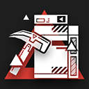 | 自動回復 | 自動発動 | 0 | 20 | - | パッシブ：鉱石「キラー」の攻撃範囲拡大。起爆時に起爆可能な全ての鉱石「キラー」が同時に起爆し、爆発範囲内の敵全員に攻撃力の250%の物理ダメージを2回与え、5秒間対象の防御力-25%（重複不可） アクティブ：鉱石「キラー」を1個獲得する | |
| エフイーター | 5 | 特殊 | 推撃手 | スキル1 | 鉄意六合拳 | 自動回復 | 自動発動 | 0 | 5 | - | 次の通常攻撃時、敵を攻撃方向にかなりの力で突き飛ばし、5秒間移動速度-30% | ||
| エフイーター | 5 | 特殊 | 推撃手 | スキル2 | 崩拳 | 自動回復 | 手動発動 | 0 | 15 | - | 前方直線上一番近い敵に向かって突進し、攻撃対象とその周囲の敵全員を力強く突き飛ばし、攻撃力の250%のダメージを与え、5秒間移動速度-30% | ||
| エンフォーサー | 5 | 特殊 | 推撃手 | スキル1 | デタランスショット | 自動回復 | 自動発動 | 0 | 5 | - | 次の通常攻撃時、敵をかなりの力で突き飛ばし、攻撃対象が高台にぶつかると、2秒間スタンさせる | ||
| エンフォーサー | 5 | 特殊 | 推撃手 | スキル2 | スタガリングショット | 自動回復 | 手動発動 | 0 | 17 | - | 範囲内の全ての敵を前方に力強く突き飛ばし、2.5秒間スタンさせる(高台にぶつかると、スタンの効果時間が4秒間になる)。対象が他の敵にぶつかった場合、その敵を2.5秒間スタンさせる | ||
| カゼマル | 5 | 特殊 | 傀儡師 | スキル1 | 紙織・速攻 | 攻撃回復 | 自動発動 | 0 | 2 | - | 次の通常攻撃時、攻撃力が350%まで上昇し、自身のHPが10%減少 | 自傷 | |
| カゼマル | 5 | 特殊 | 傀儡師 | スキル2 | 紙織・双影 | 自動回復 | 手動発動 | 15 | 20 | 20 | HPが50%減少し、攻撃力+120%。周囲の近距離配置マスに<身替り>を召喚する | 自傷 | |
| カフカ | 5 | 特殊 | 執行者 | スキル1 | ミステリーキューブ | パッシブ | パッシブ | - | - | 5 | 配置後、5秒間攻撃しなくなり、周囲一定範囲内の地面にいる敵全員を睡眠させる、スキル効果終了時範囲内の地面にいる敵全員に攻撃力の450%の術ダメージを与える | ||
| カフカ | 5 | 特殊 | 執行者 | スキル2 | カオスシザーズ | パッシブ | パッシブ | - | - | 15 | 配置後、前方の目標マス内にいる敵全員に攻撃力の400%の術ダメージを与え、その後の15秒間で目標マスの地面上にいる敵1体に攻撃して、術ダメージを与える | ||
| キララ | 5 | 特殊 | 潜伏者 | スキル1 | アンカークラッシュ | 攻撃回復 | 自動発動 | 0 | 2 | - | 次の通常攻撃時、追加で攻撃力の150%の術ダメージを与える | ||
| キララ | 5 | 特殊 | 潜伏者 | スキル2 | アンカーポイント | 自動回復 | 手動発動 | 10 | 30 | 8 | 素質の効果が3倍まで上昇し、攻撃範囲内の敵に1秒ごとに攻撃力の100%の術ダメージを与える | ||
| クリフハート | 5 | 特殊 | 鉤縄師 | スキル1 | ワイヤーシックル | 自動回復 | 自動発動 | 0 | 4 | - | 次の通常攻撃時、敵をかなりの力で引き寄せ、攻撃力の180%の術ダメージを与える | ||
| クリフハート | 5 | 特殊 | 鉤縄師 | スキル2 | アレストチェーン | 自動回復 | 手動発動 | 10 | 15 | - | 前方一定範囲内の敵最大3体をかなりの力で引き寄せ、攻撃力の200%の確定ダメージを与え、3秒間スタンさせる | ||
| スノーズント | 5 | 特殊 | 鉤縄師 | スキル1 | フックキャッチ | 自動回復 | 自動発動 | 0 | 5 | - | 次の通常攻撃時、敵をかなりの力で引き寄せ、攻撃力の170%の物理ダメージを与え、1.6秒足止めする | ||
| スノーズント | 5 | 特殊 | 鉤縄師 | スキル2 | ネットキャプチャー | 自動回復 | 手動発動 | 10 | 17 | - | 捕獲ネットを発射し、目標地点周囲一定範囲内の敵をかなりの力で引き寄せ、攻撃力の200%の術ダメージを与え、3.5秒足止めする | ||
| スプリア | 5 | 特殊 | 鬼才 | スキル1 | クイックドロウ | パッシブ | パッシブ | - | - | 24 | 配置後、攻撃速度+100 | ||
| スプリア | 5 | 特殊 | 鬼才 | スキル2 | インスタントカスタム | 自動回復 | 手動発動 | 30 | 40 | 20 | 自身と前方にいる最も近い味方【狙撃】1人(真正面を優先する)の攻撃力+30%、攻撃速度+40 自身と対象【狙撃】が攻撃すると、20%の確率で1.8秒間スタン状態になる | ||
| ティッピ | 5 | 特殊 | 巡空者 | スキル1 | スプレーアート | 自動回復 | 手動発動 | 10 | 20 | 40 | 即座に離陸し、攻撃範囲が拡大し、攻撃力+100% | ||
| ティッピ | 5 | 特殊 | 巡空者 | スキル2 | 撮影現場急行 | 自動回復 | 自動発動 | 5 | 10 | 15 | 即座に離陸し、攻撃範囲が拡大し、攻撃力+30%、攻撃が3連撃になる 攻撃を受けると自動発動し、その攻撃による物理・術のダメージを回避 | ||
| フィグリーノ | 5 | 特殊 | 行商人 | スキル1 | 採寸用メジャー | 自動回復 | 自動発動 | 0 | 4 | - | 攻撃範囲+1、攻撃力+60% 退場まで効果継続 | 永続 | |
| フィグリーノ | 5 | 特殊 | 行商人 | スキル2 | 絡みつく縫い糸 | 自動回復 | 手動発動 | 5 | 8 | 8 | 攻撃しなくなり、周囲の敵を最大4体までバインドし、バインドした敵に1秒ごとに攻撃力の160%の物理ダメージを与える。スキル発動中、合計25の所持コストを徐々に消費していく | ||
| ブリキ | 5 | 特殊 | 錬金士 | スキル1 | 「オールドカーリー」 | 攻撃回復 | 自動発動 | 0 | 5 | - | 錬金ユニットを一つ投げ、10秒間落下地点の周囲一定範囲内の地上にいる敵全員に30%の虚弱状態を付与し、1秒ごとにブリキの攻撃力の75%の術ダメージを与える。 | ||
| ブリキ | 5 | 特殊 | 錬金士 | スキル2 | 「ビッグラリー」 | 自動回復 | 手動発動 | 20 | 25 | - | 錬金ユニットを一つ投げ、15秒間落下地点の周囲一定範囲内の地上にいる敵全員にブリキの攻撃力の110%の術ダメージを与え、1秒ごとに範囲内の味方のHPをブリキの攻撃力の25%回復する。 2回チャージ可能 | チャージ | |
| ベナ | 5 | 特殊 | 傀儡師 | スキル1 | フルトリミング | 自動回復 | 手動発動 | 25 | 35 | 20 | 最大HP-50%、攻撃力+100%、攻撃対象の防御力を35%無視する | ||
| ベナ | 5 | 特殊 | 傀儡師 | スキル2 | クイッククロップ | 自動回復 | 手動発動 | 18 | 25 | 22 | 攻撃力+90%、攻撃速度+80、敵を攻撃する度自身のHPが4%減少 | 自傷 | |
| マンティコア | 5 | 特殊 | 潜伏者 | スキル1 | アジトキシン | パッシブ | パッシブ | - | - | - | 攻撃した敵を5秒間移動速度-50% | 永続（パッシブ） | |
| マンティコア | 5 | 特殊 | 潜伏者 | スキル2 | スコーピオンテール | 自動回復 | 手動発動 | 10 | 20 | 40 | 通常攻撃の間隔を延長し、攻撃力+90%、攻撃した敵を1.0秒間スタンさせる | ||
| レッド | 5 | 特殊 | 執行者 | スキル1 | 処刑の構え | パッシブ | パッシブ | - | - | 10 | 配置後攻撃力+80%、物理回避と術回避+50% | ||
| レッド | 5 | 特殊 | 執行者 | スキル2 | 群狼 | パッシブ | パッシブ | - | - | - | 配置後周囲一定範囲内の敵全員に攻撃力の250%の物理ダメージを与え、3秒間スタンさせる | ||
| ロビン | 5 | 特殊 | 罠師 | スキル1 | バインド「クリップ」 | 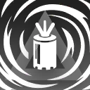 | 自動回復 | 自動発動 | 0 | 12 | - | パッシブ：罠発動時、対象に攻撃力の350%の物理ダメージを与え、3秒間バインドさせる アクティブ：罠を1個獲得 | |
| ロビン | 5 | 特殊 | 罠師 | スキル2 | バースト「クリップ」 | 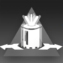 | 自動回復 | 自動発動 | 0 | 12 | - | パッシブ：罠発動時、対象に攻撃力の380%の物理ダメージを与え、かなりの力で突き飛ばす アクティブ：罠を1個獲得 | |
| ワイフー | 5 | 特殊 | 執行者 | スキル1 | 寸勁 | パッシブ | パッシブ | - | - | 10 | 配置後、攻撃力+70%、攻撃対象の攻撃力を3秒間-40% | ||
| ワイフー | 5 | 特殊 | 執行者 | スキル2 | 七武掠陣脚 | パッシブ | パッシブ | - | - | - | 配置後周囲一定範囲内の敵に攻撃力の290%の物理ダメージを与え、攻撃対象の一部の特殊能力を8秒間無効化する | ||
| ヴィグナ | 4 | 先鋒 | 突撃兵 | スキル1 | 攻撃力強化β | 自動回復 | 手動発動 | 10 | 35 | 25 | 攻撃力+80% | ||
| ヴィグナ | 4 | 先鋒 | 突撃兵 | スキル2 | ハンマリング・オン | 自動回復 | 手動発動 | 10 | 25 | 30 | 通常攻撃の間隔をわずかに延長し、攻撃力+200% | ||
| クーリエ | 4 | 先鋒 | 先駆兵 | スキル1 | 突撃指令β | 自動回復 | 自動発動 | 13 | 30 | - | 所持コスト+9 | ||
| クーリエ | 4 | 先鋒 | 先駆兵 | スキル2 | 突撃指令・防御 | 自動回復 | 手動発動 | 17 | 30 | 15 | 所持コスト+3 スキル発動中所持コストが徐々に増加(合計8) 防御力+80% | ||
| スカベンジャー | 4 | 先鋒 | 先駆兵 | スキル1 | 突撃指令β | 自動回復 | 自動発動 | 13 | 30 | - | 所持コスト+9 | ||
| スカベンジャー | 4 | 先鋒 | 先駆兵 | スキル2 | 突撃指令・攻撃 | 自動回復 | 手動発動 | 18 | 30 | 15 | 所持コスト+11 攻撃力+70% | ||
| テンニンカ | 4 | 先鋒 | 旗手 | スキル1 | 支援指令β | 自動回復 | 手動発動 | 13 | 22 | 8 | 攻撃しなくなり、スキル発動中所持コストが徐々に増加(合計14) | ||
| テンニンカ | 4 | 先鋒 | 旗手 | スキル2 | 治癒の翅 | 自動回復 | 手動発動 | 10 | 24 | 16 | スキル発動中所持コストが徐々に増加(合計16) 攻撃しなくなり、周囲一定範囲内の味方1人のHPを回復 (1秒ごとテンニンカの攻撃力の50%) | ||
| ビーンストーク | 4 | 先鋒 | 戦術家 | スキル1 | 出動指令 | 自動回復 | 手動発動 | 15 | 30 | - | 所持コスト+8、援軍を再召喚する （援軍がすでに配置中の場合、援軍のHPを全回復する） | ||
| ビーンストーク | 4 | 先鋒 | 戦術家 | スキル2 | 「全員集合！」 | 自動回復 | 手動発動 | 20 | 40 | 15 | 戦術召集点の隣接4マスにハガネガニを召喚する(戦術召集点のマスを除く配置可能な近距離マスのみ)。スキル発動中所持コストが徐々に増加(合計12)、ハガネガニ全員の防御力+70% | ||
| アレーン | 4 | 前衛 | 領主 | スキル1 | いたずら | 自動回復 | 手動発動 | 15 | 25 | 15 | ブロック数が0になり、通常攻撃が敵に攻撃力の150%の物理ダメージを与える2連撃になる | ||
| アレーン | 4 | 前衛 | 領主 | スキル2 | フェイタルトリック | 自動回復 | 手動発動 | 15 | 30 | 20 | 攻撃範囲拡大、特性による遠距離攻撃時の攻撃力低下が無効化される 攻撃対象数+1、攻撃時、対象に攻撃力の160%の術ダメージを与える | ||
| ウィンドスクート | 4 | 前衛 | 解放者 | スキル1 | 攻防一如 | 自動回復 | 手動発動 | 10 | 18 | 15 | 攻撃速度+50、防御力+55% | ||
| ウィンドスクート | 4 | 前衛 | 解放者 | スキル2 | 快刀連斬 | 自動回復 | 手動発動 | 15 | 40 | 25 | 攻撃範囲拡大、敵2体を同時に攻撃、攻撃が回避されなくなり、攻撃時、対象に攻撃力の200%の物理ダメージを与える | ||
| ウタゲ | 4 | 前衛 | 武者 | スキル1 | サボり | 自動回復 | 手動発動 | 10 | 15 | 8 | 攻撃しなくなる。ブロック数が0になり、防御力+200%、1秒ごとにHPが最大値の10%回復 | ||
| ウタゲ | 4 | 前衛 | 武者 | スキル2 | 落地斬・突破 | パッシブ | パッシブ | - | - | - | 配置後HPが50%減少。16秒間攻撃力+110%、通常攻撃が術ダメージを与える | 自傷 | |
| エステル | 4 | 前衛 | 強襲者 | スキル1 | 攻撃力強化β | 自動回復 | 手動発動 | 10 | 35 | 25 | 攻撃力+80% | ||
| エステル | 4 | 前衛 | 強襲者 | スキル2 | 捨て身の覚悟 | 被撃回復 | 手動発動 | 10 | 20 | 15 | 攻撃力+150%、ただし味方の回復対象外になる | ||
| カッター | 4 | 前衛 | 剣豪 | スキル1 | レッドシフト | 攻撃回復 | 手動発動 | 5 | 11 | - | 4本のナイフを投げて前方一定範囲内の敵をランダムに攻撃し、命中した敵に攻撃力の340%の物理ダメージを与える | ||
| カッター | 4 | 前衛 | 剣豪 | スキル2 | スカーレットエッジ | 攻撃回復 | 手動発動 | 5 | 12 | - | 周囲一定範囲内の敵最大6体に攻撃力の450%の物理ダメージを与える 攻撃対象が飛行ユニットの場合、攻撃力のダメージ計算係数倍増 | ||
| クォーツ | 4 | 前衛 | 重剣士 | スキル1 | 攻撃力強化β | 自動回復 | 手動発動 | 10 | 35 | 25 | 攻撃力+80% | ||
| クォーツ | 4 | 前衛 | 重剣士 | スキル2 | フルスイング | 自動回復 | 手動発動 | 20 | 40 | 20 | 自身の被ダメージが25%増加、攻撃速度+80、通常攻撃が攻撃力の120%の物理ダメージを与え、25%の確率で2秒間スタンさせる | ||
| コンビクション | 4 | 前衛 | 勇士 | スキル1 | 断罪 | 自動回復 | 自動発動 | 0 | 4 | - | 次の攻撃時、攻撃力が200%に上昇(5%の確率で800%に上昇) 3回チャージ可能 | チャージ | |
| コンビクション | 4 | 前衛 | 勇士 | スキル2 | 創世記 | 自動回復 | 手動発動 | 5 | 12 | - | 周囲の敵全員に350%の術ダメージを与え、特殊能力を5秒間無効化 50%の確率で失敗し、周囲の味方全員を5秒間スタン | ||
| ジャッキー | 4 | 前衛 | 闘士 | スキル1 | 全力パンチ！ | 攻撃回復 | 自動発動 | 0 | 3 | - | 次の通常攻撃時、攻撃力が250%まで上昇 | ||
| ジャッキー | 4 | 前衛 | 闘士 | スキル2 | 全神経集中！ | 自動回復 | 手動発動 | 15 | 30 | 18 | 攻撃しなくなる。物理回避+70%、回避発動する度に自身の攻撃力の160%の物理ダメージで敵1体に反撃する (反撃の発動最短間隔が攻撃間隔の50%) | ||
| ドーベルマン | 4 | 前衛 | 教官 | スキル1 | 強撃β | 攻撃回復 | 自動発動 | 0 | 3 | - | 次の通常攻撃時、攻撃力が230%まで上昇 | ||
| ドーベルマン | 4 | 前衛 | 教官 | スキル2 | 鞭撻 | 自動回復 | 手動発動 | 40 | 70 | 25 | 攻撃力+80%、素質の効果が3倍まで上昇 | ||
| ビーハンター | 4 | 前衛 | 闘士 | スキル1 | ウィービング | パッシブ | パッシブ | - | - | - | 物理回避+60% | 永続（パッシブ） | |
| ビーハンター | 4 | 前衛 | 闘士 | スキル2 | ラッシュ | 自動回復 | 手動発動 | 0 | 20 | 10 | 通常攻撃の間隔を大幅に短縮(-60%) | ||
| ヒューマス | 4 | 前衛 | 鎌撃士 | スキル1 | 廃棄物処理 | 攻撃回復 | 自動発動 | 0 | 3 | - | 次の通常攻撃時、攻撃力が250%まで上昇し、自身のHPを追加で80回復 | ||
| ヒューマス | 4 | 前衛 | 鎌撃士 | スキル2 | 高効率作業 | 自動回復 | 手動発動 | 30 | 45 | 25 | スキル発動中、ブロック数+1。 HPが最大値の50%以上の場合、攻撃力+45%の勇猛状態を獲得し、80%以上の場合、効果値倍増 | ||
| フロストリーフ | 4 | 前衛 | 領主 | スキル1 | 降霜の刃 | 自動回復 | 自動発動 | 0 | 3 | - | 次の通常攻撃時、敵に攻撃力の150%の物理ダメージを与え、3秒間移動速度-50% | ||
| フロストリーフ | 4 | 前衛 | 領主 | スキル2 | 氷結の刃 | 自動回復 | 手動発動 | 0 | 50 | 25 | 攻撃速度+50 攻撃した敵を2秒間移動速度-50%、更に40%の確率でその敵を2秒間バインドさせる | ||
| マトイマル | 4 | 前衛 | 勇士 | スキル1 | HP回復β | 自動回復 | 手動発動 | 10 | 20 | - | 自身のHPが最大値の50%回復 | ||
| マトイマル | 4 | 前衛 | 勇士 | スキル2 | 悪鬼の力 | 自動回復 | 手動発動 | 10 | 25 | 15 | 防御力が0になり、攻撃力+150% | ||
| ムース | 4 | 前衛 | 術戦士 | スキル1 | ひっかき！ | 攻撃回復 | 自動発動 | 0 | 4 | - | 次の通常攻撃時、攻撃力+75%、攻撃した敵を5秒間攻撃力-40% | ||
| ムース | 4 | 前衛 | 術戦士 | スキル2 | ねこのいかり | 自動回復 | 手動発動 | 45 | 80 | 40 | 攻撃力、防御力+75% | ||
| 羅小黒 | 4 | 前衛 | 領主 | スキル1 | 変化自在 | 自動回復 | 手動発動 | 0 | 10 | - | 発動する度初期状態と次の状態とが切り替わる： 攻撃範囲が隣接4マスになり、攻撃速度+40、物理回避+45%、ブロック中の敵全員を同時に攻撃 | 切替 | |
| 羅小黒 | 4 | 前衛 | 領主 | スキル2 | 金属操作 | 自動回復 | 手動発動 | 10 | 35 | 20 | 攻撃力+70%、攻撃対象数+1、特性による遠距離攻撃時の攻撃力低下が無効化され、攻撃対象のHPが最大値の50%未満の場合、追加でその対象に防御力を200無視する攻撃を1回与える | ||
| クオーラ | 4 | 重装 | 重盾衛士 | スキル1 | 防御力強化β | 自動回復 | 手動発動 | 10 | 35 | 35 | 防御力+80% | ||
| クオーラ | 4 | 重装 | 重盾衛士 | スキル2 | シェルガード | 自動回復 | 手動発動 | 0 | 40 | 30 | 攻撃しなくなる ブロック数+1、防御力+130%、自身のHPが1秒ごとに最大値の3%回復 | ||
| グム | 4 | 重装 | 庇護衛士 | スキル1 | 非常食 | 自動回復 | 自動発動 | 0 | 4 | - | 次の通常攻撃時、近くの味方1人にグムの攻撃力の160%のHPを回復 3回チャージ可能 | チャージ | |
| グム | 4 | 重装 | 庇護衛士 | スキル2 | 戦場のシェフ | 自動回復 | 手動発動 | 20 | 30 | 30 | 10秒間調理状態(攻撃停止)になり、防御力+80% 調理終了後攻撃力+80%、近くの味方の回復行動のみ行う | ||
| ジュナー | 4 | 重装 | 術技衛士 | スキル1 | 攻撃力強化β | 自動回復 | 手動発動 | 10 | 35 | 25 | 攻撃力+80% | ||
| ジュナー | 4 | 重装 | 術技衛士 | スキル2 | カウンターシールド | 被撃回復 | 手動発動 | 12 | 25 | 30 | 攻撃力+80%、ブロック中の敵全員を同時に攻撃 | ||
| バブル | 4 | 重装 | 重盾衛士 | スキル1 | 防御力強化β | 自動回復 | 手動発動 | 10 | 35 | 35 | 防御力+80% | ||
| バブル | 4 | 重装 | 重盾衛士 | スキル2 | 「かかってこい！」 | 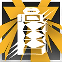 | 自動回復 | 手動発動 | 0 | 45 | 25 | 攻撃しなくなり、防御力+120%、敵に攻撃されやすくなる。 攻撃される度自身の防御力の50%の物理ダメージで敵に反撃する | |
| マッターホルン | 4 | 重装 | 重盾衛士 | スキル1 | 肉体強化 | 自動回復 | 手動発動 | 10 | 35 | 30 | 最大HP+70%、自身のHPが1秒ごとに40回復 | ||
| マッターホルン | 4 | 重装 | 重盾衛士 | スキル2 | 寒冷順化 | 自動回復 | 手動発動 | 10 | 32 | 30 | 最大HP+50%、防御力+30%、術耐性+100% | ||
| ルトナダ | 4 | 重装 | 破壊者 | スキル1 | 強撃β | 攻撃回復 | 自動発動 | 0 | 3 | - | 次の通常攻撃時、攻撃力が230%まで上昇 | ||
| ルトナダ | 4 | 重装 | 破壊者 | スキル2 | 強磁場シールド | 自動回復 | 手動発動 | 20 | 35 | 30 | 攻撃しなくなり、防御力+130%、2秒ごとに周囲の地面上にいる敵全員に攻撃力の100%の術ダメージを与え、すべてのブロックされていない敵を普通の力で引き寄せる | ||
| アシッドドロップ | 4 | 狙撃 | 精密射手 | スキル1 | ファンシーショット | 自動回復 | 手動発動 | 20 | 35 | 20 | 攻撃速度+70 | ||
| アシッドドロップ | 4 | 狙撃 | 精密射手 | スキル2 | ダブルトリガー | 自動回復 | 手動発動 | 35 | 50 | 25 | 攻撃力+40%、通常攻撃が2連撃になる | ||
| アンブリエル | 4 | 狙撃 | 戦術射手 | スキル1 | 妨害弾 | 自動回復 | 手動発動 | 10 | 25 | 36 | 攻撃範囲+1、攻撃対象を1.2秒足止めする | ||
| アンブリエル | 4 | 狙撃 | 戦術射手 | スキル2 | 全方位レーダー | 自動回復 | 手動発動 | 10 | 25 | 40 | 通常攻撃の間隔をわずかに延長(+0.9s)し、攻撃力+100%、攻撃範囲が戦場全体まで拡大。 通常時の攻撃範囲以外の敵を攻撃する時、攻撃の予備動作に要する時間を延長する | ||
| ヴァーミル | 4 | 狙撃 | 速射手 | スキル1 | 攻撃力強化β | 自動回復 | 手動発動 | 10 | 35 | 25 | 攻撃力+80% | ||
| ヴァーミル | 4 | 狙撃 | 速射手 | スキル2 | デュアルアロー | 自動回復 | 手動発動 | 10 | 20 | 20 | 攻撃力+45%、攻撃対象数+1 | ||
| ケイパー | 4 | 狙撃 | 旋輪射手 | スキル1 | 強撃β | 攻撃回復 | 自動発動 | 0 | 3 | - | 次の通常攻撃時、攻撃力が230%まで上昇 | ||
| ケイパー | 4 | 狙撃 | 旋輪射手 | スキル2 | ハピネス200％！ | 攻撃回復 | 手動発動 | 15 | 25 | 20 | 攻撃力+60%、攻撃時に旋回投擲物を追加で1個放つ | ||
| ジェシカ | 4 | 狙撃 | 速射手 | スキル1 | 強撃β | 攻撃回復 | 自動発動 | 0 | 3 | - | 次の通常攻撃時、攻撃力が230%まで上昇 | ||
| ジェシカ | 4 | 狙撃 | 速射手 | スキル2 | 煙幕 | 自動回復 | 手動発動 | 20 | 40 | 25 | 攻撃力+80%、物理回避と術回避+75% | ||
| シラユキ | 4 | 狙撃 | 榴弾射手 | スキル1 | ユキケムリ | 自動回復 | 手動発動 | 10 | 15 | 25 | 攻撃範囲+2 | ||
| シラユキ | 4 | 狙撃 | 榴弾射手 | スキル2 | カザグルマ | 自動回復 | 手動発動 | 0 | 25 | 25 | 回転する巨大な手裏剣を打ち、攻撃した敵に1秒ごと攻撃力80%の術ダメージを与え、短時間移動速度を35%下げる | ||
| トター | 4 | 狙撃 | 破城射手 | スキル1 | 貫日の一射 | 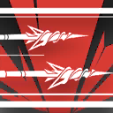 | 攻撃回復 | 自動発動 | 0 | 3 | - | 次の通常攻撃時、攻撃対象数+1、攻撃対象に攻撃力の220%の物理ダメージを与える | |
| トター | 4 | 狙撃 | 破城射手 | スキル2 | 破虹の勁弩 | 自動回復 | 手動発動 | 25 | 40 | 30 | 攻撃速度+50、攻撃対象数+2、攻撃対象が1体のみの場合、その対象に攻撃力の225%の物理ダメージを与える | ||
| パインコーン | 4 | 狙撃 | 散弾射手 | スキル1 | RMAスパイク | 自動回復 | 手動発動 | 0 | 9 | - | 攻撃力の200%で攻撃して、敵の防御力を250無視する 3回チャージ可能 | チャージ | |
| パインコーン | 4 | 狙撃 | 散弾射手 | スキル2 | 過負荷駆動 | 自動回復 | 自動発動 | 0 | 30 | 20 | 攻撃力+60%、攻撃範囲縮小 2回目以降スキルを使用するごとに、追加で攻撃力+20%(最大＋60%) | ||
| メイ | 4 | 狙撃 | 速射手 | スキル1 | ストップショット | 攻撃回復 | 自動発動 | 0 | 3 | - | 次の通常攻撃時、攻撃力が200%まで上昇し、攻撃対象を2.5秒足止めする | ||
| メイ | 4 | 狙撃 | 速射手 | スキル2 | スタンショック | 自動回復 | 手動発動 | 0 | 20 | 30 | 通常攻撃の間隔をわずかに延長し、攻撃力+120%、攻撃対象を1秒足止めし、30%の確率で1.2秒間スタンさせる | ||
| メテオ | 4 | 狙撃 | 速射手 | スキル1 | 装甲砕き | 攻撃回復 | 自動発動 | 0 | 4 | - | 次の通常攻撃時、敵に攻撃力の180%の物理ダメージを与え、5秒間防御力-35% | ||
| メテオ | 4 | 狙撃 | 速射手 | スキル2 | 装甲砕き・拡散 | 攻撃回復 | 手動発動 | 0 | 15 | - | 攻撃範囲内の敵最大5体に攻撃力の200%の物理ダメージを与え、5秒間防御力-40% | ||
| インディゴ | 4 | 術師 | 秘術師 | スキル1 | 導灯の守護者 | 自動回復 | 手動発動 | 5 | 15 | 4 | 攻撃範囲変化、攻撃間隔を大幅に短縮し、通常攻撃時、敵に攻撃力の50%の術ダメージを与える | ||
| インディゴ | 4 | 術師 | 秘術師 | スキル2 | 光と影の迷路 | 自動回復 | 手動発動 | 20 | 40 | 20 | 通常攻撃の間隔を短縮し、素質の発動率が3.0倍まで上昇、攻撃範囲内にいる【バインド】状態の敵に0.5秒ごとにインディゴの攻撃力の20%の術ダメージを与える | ||
| カシャ | 4 | 術師 | 操機術師 | スキル1 | 攻撃力強化β | 自動回復 | 手動発動 | 10 | 35 | 25 | 攻撃力+80% | ||
| カシャ | 4 | 術師 | 操機術師 | スキル2 | 同調索敵攻撃 | 自動回復 | 手動発動 | 20 | 45 | 30 | 攻撃範囲拡大、攻撃力+70%、自動索敵して攻撃する浮遊ユニットを放出し、自身と浮遊ユニット攻撃時27%の確率で敵を1秒間スタンさせる 索敵中の浮遊ユニットは目標が倒された時あるいはスキル終了時、索敵を中断する | ||
| ギターノ | 4 | 術師 | 拡散術師 | スキル1 | 戦術詠唱β | 自動回復 | 手動発動 | 10 | 35 | 25 | 攻撃速度+75 | ||
| ギターノ | 4 | 術師 | 拡散術師 | スキル2 | 運命 | 自動回復 | 手動発動 | 50 | 85 | 30 | 攻撃力+100%、攻撃範囲増加、範囲内にいる敵全員を同時に攻撃 効果時間終了後10秒間攻撃停止 | ||
| グレイ | 4 | 術師 | 拡散術師 | スキル1 | 戦術詠唱β | 自動回復 | 手動発動 | 10 | 35 | 25 | 攻撃速度+75 | ||
| グレイ | 4 | 術師 | 拡散術師 | スキル2 | 帯電 | 自動回復 | 手動発動 | 0 | 60 | 30 | 攻撃速度+80、素質による足止めの継続時間が2倍まで上昇 | ||
| プリン | 4 | 術師 | 連鎖術師 | スキル1 | 戦術詠唱β | 自動回復 | 手動発動 | 10 | 35 | 25 | 攻撃速度+75 | ||
| プリン | 4 | 術師 | 連鎖術師 | スキル2 | 電子流拡散 | 自動回復 | 手動発動 | 20 | 35 | 20 | スキル発動中、攻撃力+110%、通常攻撃が最大4回まで跳躍し、同一対象間でも重複して跳躍可能になる | ||
| ヘイズ | 4 | 術師 | 中堅術師 | スキル1 | 攻撃力強化β | 自動回復 | 手動発動 | 10 | 35 | 25 | 攻撃力+80% | ||
| ヘイズ | 4 | 術師 | 中堅術師 | スキル2 | 赤色の瞳 | 自動回復 | 手動発動 | 0 | 25 | 25 | 最大HP-75%、攻撃力+60%、攻撃速度+60 | ||
| ガヴィル | 4 | 医療 | 医師 | スキル1 | 回復力促進 | 自動回復 | 自動発動 | 0 | 8 | - | 次に味方を治療する時、対象に5秒の継続回復効果を付与し、1秒ごとにガヴィルの攻撃力の35%(対象のHPが50%以下の時70%)のHPを回復 3回チャージ可能 | チャージ | |
| ガヴィル | 4 | 医療 | 医師 | スキル2 | 回復力促進・広域 | 自動回復 | 手動発動 | 50 | 60 | - | 攻撃範囲内の味方全員に10秒の継続回復効果を付与し、1秒ごとにガヴィルの攻撃力の30%(対象のHPが50%以下の時80%)のHPを回復 | ||
| ススーロ | 4 | 医療 | 医師 | スキル1 | 回復力強化β | 自動回復 | 手動発動 | 10 | 30 | 25 | 攻撃力+70% | ||
| ススーロ | 4 | 医療 | 医師 | スキル2 | ディープヒーリング | 自動回復 | 手動発動 | 0 | 15 | 30 | 攻撃力+100%、攻撃速度+100 使用上限2回 | ||
| セイリュウ | 4 | 医療 | 療養師 | スキル1 | ヒールウェーブ | 自動回復 | 手動発動 | 10 | 20 | - | 攻撃範囲内味方全員のHPをセイリュウの攻撃力の350%回復 | ||
| セイリュウ | 4 | 医療 | 療養師 | スキル2 | ピュアスプリング | 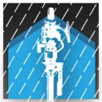 | 自動回復 | 手動発動 | 30 | 60 | 25 | 通常攻撃の間隔を大幅に短縮(0.12倍)。攻撃時、ランダムで攻撃範囲内の負傷した味方のHPをセイリュウの攻撃力の50%回復 | |
| チェストナット | 4 | 医療 | 放浪医 | スキル1 | 積土成山 | 自動回復 | 手動発動 | 8 | 10 | - | 治療行動を行い、元素損傷に対する治療値が300%まで上昇する 2回チャージ可能 | チャージ | |
| チェストナット | 4 | 医療 | 放浪医 | スキル2 | 厚土の脈動 | 自動回復 | 手動発動 | 40 | 70 | 35 | 攻撃範囲縮小、攻撃速度+130、同一対象を連続して治療する時、HP回復量と元素損傷に対する治療値が150%まで上昇 | ||
| パフューマー | 4 | 医療 | 群癒師 | スキル1 | 回復力強化β | 自動回復 | 手動発動 | 10 | 30 | 25 | 攻撃力+70% | ||
| パフューマー | 4 | 医療 | 群癒師 | スキル2 | 調香 | 自動回復 | 手動発動 | 20 | 60 | 30 | 攻撃速度-50、攻撃力+250% | ||
| ミルラ | 4 | 医療 | 医師 | スキル1 | 二重治療 | 自動回復 | 自動発動 | 0 | 8 | - | 次に味方を治療する時、治療対象数+1、対象のHPをミルラの攻撃力の125%回復 3回チャージ可能 | チャージ | |
| ミルラ | 4 | 医療 | 医師 | スキル2 | メディカルゾーン | 自動回復 | 手動発動 | 20 | 50 | 25 | 攻撃力+65%、治療対象数+1 | ||
| アーススピリット | 4 | 補助 | 緩速師 | スキル1 | 攻撃力強化β | 自動回復 | 手動発動 | 10 | 35 | 25 | 攻撃力+80% | ||
| アーススピリット | 4 | 補助 | 緩速師 | スキル2 | 流砂 | 自動回復 | 手動発動 | 15 | 40 | 25 | 攻撃しなくなる 攻撃範囲内の敵を1.4秒ごとに1回足止めする | ||
| ディピカ | 4 | 補助 | 召喚師 | スキル1 | 光陰ノ触 | 自動回復 | 手動発動 | 0 | 30 | 30 | 全ての触手の攻撃力、防御力+60%、1秒ごとにHPが70回復 | ||
| ディピカ | 4 | 補助 | 召喚師 | スキル2 | トロンプイユ | 自動回復 | 手動発動 | 60 | 80 | 55 | 攻撃範囲拡大、攻撃範囲内の味方の物理回避+50% | ||
| ポデンコ | 4 | 補助 | 緩速師 | スキル1 | アロマセラピー | 自動回復 | 手動発動 | 10 | 25 | 25 | 攻撃力+60%、攻撃しなくなり回復行動のみ行う | ||
| ポデンコ | 4 | 補助 | 緩速師 | スキル2 | 胞子飛散 | 自動回復 | 手動発動 | 10 | 23 | - | 胞子瓶を投げ、目標に命中後、一定範囲内で6秒継続する胞子を散布 胞子範囲内のすべての敵が足止めされ、一部の特殊能力を無効化、更に1秒ごとに攻撃力の80%の術ダメージを受ける | ||
| ロベルタ | 4 | 補助 | 工匠 | スキル1 | シラクーザ式化粧術 | 自動回復 | 手動発動 | 15 | 25 | 35 | 攻撃力+50%、防御力+50% | ||
| ロベルタ | 4 | 補助 | 工匠 | スキル2 | メイクアップマシン | 自動回復 | 手動発動 | 10 | 30 | 25 | 攻撃しなくなり、ブロック数+1、防御力+80% スキルの効果時間終了時、「メイクアップマシン」を1個獲得 | ||
| イーサン | 4 | 特殊 | 潜伏者 | スキル1 | ループザループ | パッシブ | パッシブ | - | - | - | 通常攻撃時、追加で1秒ごとに100の術ダメージを与える、継続4秒 | 永続（パッシブ） | |
| イーサン | 4 | 特殊 | 潜伏者 | スキル2 | グラインドツイスター | 自動回復 | 手動発動 | 0 | 25 | 30 | 攻撃力+70%、素質の発動率が3.0倍まで上昇 | ||
| ヴァーダント | 4 | 特殊 | 傀儡師 | スキル1 | 蒼翠の鎧 | パッシブ | パッシブ | - | - | - | 最大HP+25%、術耐性+15 | 永続（パッシブ） | |
| ヴァーダント | 4 | 特殊 | 傀儡師 | スキル2 | 藤の毒刃 | 自動回復 | 手動発動 | 16 | 25 | 25 | 通常攻撃が術攻撃になり、攻撃速度+80 攻撃対象にダメージを与えるたびに自身のHPを4%失う | ||
| グラベル | 4 | 特殊 | 執行者 | スキル1 | スニークガード | パッシブ | パッシブ | - | - | - | 配置後防御力+400% この効果は徐々に減少し12秒間で0になる | ||
| グラベル | 4 | 特殊 | 執行者 | スキル2 | 鼠の縄張り | パッシブ | パッシブ | - | - | - | 配置後、自身のHP最大値の250%までの被ダメージが吸収可能なバリアを獲得する。このバリアの効果は10秒持続し、その間消耗し続ける | ||
| コントレイル | 4 | 特殊 | 巡空者 | スキル1 | 緊急離陸 | パッシブ | パッシブ | - | - | 40 | 配置後即座に離陸し、攻撃範囲拡大、攻撃力+80%、物理回避+60% | ||
| コントレイル | 4 | 特殊 | 巡空者 | スキル2 | 風を切る羽根 | 自動回復 | 手動発動 | 5 | 15 | 30 | 即座に離陸し、攻撃範囲拡大、攻撃力+90% 同時に2体の敵を攻撃し、追加で空中にいる敵を1体攻撃する。空中にいる敵への攻撃命中時、対象を1.5秒間足止めする | ||
| ジェイ | 4 | 特殊 | 行商人 | スキル1 | 蟹爪断ち | 自動回復 | 自動発動 | 0 | 4 | - | 攻撃力+70%、攻撃対象の一部の特殊能力を2秒間無効化する 退場まで効果継続 | 永続 | |
| ジェイ | 4 | 特殊 | 行商人 | スキル2 | 刺身・乱れ盛り | 自動回復 | 自動発動 | 0 | 8 | - | 攻撃力+60%、攻撃時周囲一定範囲内の味方1体のHPを与ダメージの50%回復 退場まで効果継続 | 永続 | |
| ショウ | 4 | 特殊 | 推撃手 | スキル1 | 消火ポンプ | 自動回復 | 自動発動 | 0 | 5 | - | 次の通常攻撃時、敵を攻撃方向にかなりの力で突き飛ばし、攻撃力の150%の物理ダメージを与える | ||
| ショウ | 4 | 特殊 | 推撃手 | スキル2 | 高圧放水 | 自動回復 | 手動発動 | 0 | 17 | - | 前方2マス内の敵全員を攻撃方向にかなりの力で突き飛ばし、攻撃力の300%の物理ダメージを与える | ||
| ロープ | 4 | 特殊 | 鉤縄師 | スキル1 | 鉤縄投擲 | 自動回復 | 自動発動 | 0 | 5 | - | 次の通常攻撃時、敵をかなりの力で引き寄せ、攻撃力の190%の物理ダメージを与える | ||
| ロープ | 4 | 特殊 | 鉤縄師 | スキル2 | 鉤縄二本流 | 自動回復 | 手動発動 | 10 | 15 | - | 遠くにいる敵2体をかなりの力で引き寄せ、攻撃力の225%の物理ダメージを与える | ||
| バニラ | 3 | 先鋒 | 先駆兵 | スキル1 | 突撃指令・援軍 | 自動回復 | 手動発動 | 6 | 20 | 10 | 所持コスト+6、攻撃力+35% | ||
| フェン | 3 | 先鋒 | 先駆兵 | スキル1 | 突撃指令α | 自動回復 | 自動発動 | 6 | 25 | - | 所持コスト+6 | ||
| プリュム | 3 | 先鋒 | 突撃兵 | スキル1 | 迅速攻撃α | 自動回復 | 手動発動 | 0 | 45 | 25 | 攻撃力+25%、攻撃速度+25 | ||
| ポプカル | 3 | 前衛 | 強襲者 | スキル1 | 攻撃力強化α | 自動回復 | 手動発動 | 0 | 40 | 20 | 攻撃力+50% | ||
| ミッドナイト | 3 | 前衛 | 領主 | スキル1 | エンチャントα | 自動回復 | 手動発動 | 30 | 70 | 40 | 攻撃力+35%、通常攻撃が術攻撃になる | ||
| メランサ | 3 | 前衛 | 勇士 | スキル1 | 攻撃力強化α | 自動回復 | 手動発動 | 0 | 40 | 20 | 攻撃力+50% | ||
| カーディ | 3 | 重装 | 重盾衛士 | スキル1 | HP回復α | 自動回復 | 手動発動 | 10 | 20 | - | 自身のHPが最大値の40%回復 | ||
| スポット | 3 | 重装 | 庇護衛士 | スキル1 | 第二態勢・回復 | 自動回復 | 手動発動 | 25 | 40 | 25 | 攻撃力+45%、攻撃しなくなり回復行動のみ行う | ||
| ビーグル | 3 | 重装 | 重盾衛士 | スキル1 | 防御力強化α | 自動回復 | 手動発動 | 0 | 40 | 30 | 防御力+50% | ||
| アドナキエル | 3 | 狙撃 | 速射手 | スキル1 | 攻撃力強化α | 自動回復 | 手動発動 | 0 | 40 | 20 | 攻撃力+50% | ||
| カタパルト | 3 | 狙撃 | 榴弾射手 | スキル1 | 爆破範囲拡大α | 自動回復 | 手動発動 | 0 | 45 | 30 | 通常攻撃のダメージ発生範囲が200%まで拡大 | ||
| クルース | 3 | 狙撃 | 速射手 | スキル1 | 2点・バースト | 攻撃回復 | 自動発動 | 0 | 4 | - | 次の通常攻撃時、2回連続で攻撃力の140%の物理ダメージを与える | ||
| スチュワード | 3 | 術師 | 中堅術師 | スキル1 | 強撃α | 攻撃回復 | 自動発動 | 0 | 4 | - | 次の通常攻撃時、攻撃力が190%まで上昇 | ||
| ラヴァ | 3 | 術師 | 拡散術師 | スキル1 | 戦術詠唱α | 自動回復 | 手動発動 | 0 | 40 | 20 | 攻撃速度+50 | ||
| アンセル | 3 | 医療 | 医師 | スキル1 | 回復範囲強化 | 自動回復 | 手動発動 | 10 | 35 | 25 | 攻撃範囲+2、攻撃力+40% | ||
| ハイビスカス | 3 | 医療 | 医師 | スキル1 | 回復力強化α | 自動回復 | 手動発動 | 0 | 30 | 20 | 攻撃力+50% | ||
| オーキッド | 3 | 補助 | 緩速師 | スキル1 | 迅速攻撃α | 自動回復 | 手動発動 | 0 | 45 | 25 | 攻撃力+25%、攻撃速度+25 | ||
| ヤトウ | 2 | 先鋒 | 先駆兵 | - | |||||||||
| ノイルホーン | 2 | 重装 | 重盾衛士 | - | |||||||||
| レンジャー | 2 | 狙撃 | 速射手 | - | |||||||||
| 12F | 2 | 術師 | 拡散術師 | - | |||||||||
| ドゥリン | 2 | 術師 | 中堅術師 | - | |||||||||
| CONFESS-47 | 1 | 先鋒 | 先駆兵 | - | |||||||||
| Castle-3 | 1 | 前衛 | 勇士 | - | |||||||||
| Friston-3 | 1 | 重装 | 重盾衛士 | - | |||||||||
| ジャスティスナイト | 1 | 狙撃 | 速射手 | - | |||||||||
| テラ大陸調査団 | 1 | 狙撃 | 投擲手 | - | |||||||||
| Lancet-2 | 1 | 医療 | 医師 | - | |||||||||
| PhonoR-0 | 1 | 補助 | 祭儀師 | - | |||||||||
| U-Official | 1 | 補助 | 吟遊者 | - | |||||||||
| THRM-EX | 1 | 特殊 | 執行者 | - | |||||||||
| チューリップ | 5 | 先鋒 | 先駆兵 | スキル1 | 残り香 | 自動回復 | 手動発動 | 13 | 25 | - | 所持コスト+8 周囲にいる敵に防御力を50%無視した攻撃力の200%物理ダメージを合計8回与える | ||
| Sharp | 5 | 前衛 | 勇士 | スキル1 | 鋭刃 | 自動回復 | 手動発動 | 10 | 30 | 30 | 防御力が0になり、最大HP+50%、攻撃時攻撃力が300%まで上昇する | ||
| Stormeye | 5 | 狙撃 | 速射手 | スキル1 | 旋風矢 | 自動回復 | 手動発動 | 10 | 30 | 30 | 通常攻撃が攻撃目標数最大2体の2連撃になる | ||
| Pith | 5 | 術師 | 拡散術師 | スキル1 | 「我が成すことを成せ」 | 自動回復 | 手動発動 | 20 | 40 | 30 | 攻撃速度+70、味方【術師】全員の攻撃力+40% | ||
| Touch | 5 | 医療 | 医師 | スキル1 | 天啓の光 | 自動回復 | 手動発動 | 10 | 30 | 30 | 攻撃範囲+2、味方2人を同時に回復、味方【医療】全員の攻撃力+30% | ||
| 予備隊員-近距離 | 3 | 先鋒 | 先駆兵 | - | |||||||||
| 予備隊員-重装 | 3 | 重装 | 重盾衛士 | - | |||||||||
| 予備隊員-狙撃 | 3 | 狙撃 | 速射手 | - | |||||||||
| 予備隊員-術師 | 3 | 術師 | 中堅術師 | - | |||||||||
| 予備隊員-支援 | 3 | 医療 | 医師 | - | |||||||||
| 司霆レイズ | 6 | 前衛 | 解放者 | スキル1 | 浩气长存 | 自動回復 | 手動発動 | 17 | 11 | - | 攻撃範囲が正面と側面に拡大、3方向の地上敵に攻撃力の355%の物理ダメージを与える。 3回チャージ可能、チャージを使い切るまで特性による攻撃力上昇効果がリセットされない。 | チャージ | |
| 司霆レイズ | 6 | 前衛 | 解放者 | スキル2 | 正霆摄威 | 自動回復 | 手動発動 | 22 | 43 | 36 | 攻撃範囲は近接したマスに沿って3マスまで拡大し、通常攻撃は最大4体の敵に攻撃力の150%の物理ダメージを与える。 スキル発動中に落雷が発生する度に攻撃力+10%(最大25回まで効果重複可能) | ||
| 司霆レイズ | 6 | 前衛 | 解放者 | スキル3 | 天地通明 | 自動回復 | 手動発動 | 21 | 36 | 24 | 攻撃範囲拡大、攻撃間隔が大幅に延長(+1.7)、通常攻撃は攻撃力の300%の範囲物理ダメージを与え、攻撃対象のいるマスの周囲に3マスまで流れる電流を発生させる。電流は自身あるいは高台に衝突すると跳ね返り、電流が流れた地上マスにいる全ての敵に0.6秒ごとに攻撃力の70%の術ダメージを与え、15%の確率で3秒間の戦慄を付与する。 | ||
| レコードキーパー | 5 | 医療 | 医師 | スキル1 | 触类旁通 | 自動回復 | 自動発動 | 0 | 7 | - | 次に味方を治療する時、対象のHPを攻撃力の155%回復し、さらに味方1人を追加で治療する 3回チャージ可能 | チャージ | |
| レコードキーパー | 5 | 医療 | 医師 | スキル2 | 一点关窍 | 自動回復 | 手動発動 | 25 | 35 | 25 | 攻撃力+80%、オペレーターを回復後、対象に10秒間ダメージを受けるたびにHPを150回復する効果を付与する | ||
| レイディアン | 6 | 補助 | 召喚師 | スキル1 | 律动线 | 自動回復 | 手動発動 | 15 | 25 | 25 | パッシブ：召喚物を近距離ユニットとして配置可能 アクティブ：自身と召喚物の防御力+80%、最大HPの100%のバリアを獲得(スキル終了まで効果継続) スキル発動時、召喚物を1体獲得 | ||
| レイディアン | 6 | 補助 | 召喚師 | スキル2 | 环形鳞地 | 自動回復 | 手動発動 | 16 | 25 | 25 | パッシブ：召喚物を近距離ユニットとして配置可能。召喚物は定期的に前方へ弾を発射し続ける アクティブ：自身と召喚物の攻撃力+80%、召喚物の攻撃時に追加で弾を2個発射し、弾の飛距離+2 スキル発動時、召喚物を1体獲得 | ||
| レイディアン | 6 | 補助 | 召喚師 | スキル3 | 手牵手 | 自動回復 | 手動発動 | 30 | 40 | 30 | パッシブ：召喚物を遠距離ユニットとして配置可能。召喚物が攻撃可能かつ攻撃対象を見つけられない場合、攻撃範囲内の他の召喚獣と連携して攻撃する アクティブ：自身と召喚物の攻撃力+150%、敵にダメージを与えたとき、2秒間足止めし35%の対術脆弱効果を付与する スキル発動時、召喚物を1体獲得 | ||
| ハルカ | 6 | 補助 | 祈祷師 | スキル1 | 夜啼彩羽 | 自動回復 | 手動発動 | 15 | 25 | 20 | 攻撃速度+60 バブルが破裂したとき、対象の周囲8マス内のバブルを付与されていない味方にバブルを与える | ||
| ハルカ | 6 | 補助 | 祈祷師 | スキル2 | 幽隙栖萤 | 自動回復 | 手動発動 | 0 | 17 | 26 | 治療対象数+1、バブルを与える対象数+1 ハルカに治療された味方の周囲にいる敵3体に治療量の200%の術ダメージを与える 2回目以降スキル使用時、攻撃力+40%、退場まで効果継続 | 永続 | |
| ハルカ | 6 | 補助 | 祈祷師 | スキル3 | 夏末游鳞 | 自動回復 | 手動発動 | 53 | 60 | 40 | 攻撃力+55%、攻撃範囲拡大、通常攻撃の間隔を短縮(-0.6) バブルの加護状態が2倍に増加 バブルを付与された味方を攻撃した敵は4秒間浮遊し、浮遊状態中は毎秒ハルカの攻撃力の80%の術ダメージを受ける | ||
| 斬業ホシグマ | 6 | 重装 | 術技衛士 | スキル1 | 恶业苦果 | 被撃回復 | 自動発動 | 0 | 15 | - | 攻撃力+70%、防御力+70% 攻撃される度自身の攻撃力の175%の術ダメージで敵に反撃する 退場まで効果継続 | 永続 | |
| 斬業ホシグマ | 6 | 重装 | 術技衛士 | スキル2 | 无始无明 | 攻撃回復 | 自動発動 | 0 | 6 | - | 盾を放出し、攻撃力の90%での3回連続攻撃でブロック中の敵全員を同時に攻撃する 盾は自身の周囲を1周し、敵との接触時に対象を足止めし、0.5秒毎に攻撃力の130%の術ダメージを与え、自身のHPを盾が与えたダメージの15%回復する | ||
| 斬業ホシグマ | 6 | 重装 | 術技衛士 | スキル3 | 地狱变相 | 自動回復 | 手動発動 | 37 | 45 | 32 | 攻撃範囲拡大、最大HP+100%、攻撃力+230% 通常攻撃が2回連続攻撃になり、敵3体を同時に攻撃する 手動でスキルを停止すると、11秒間致命的なダメージを受けてもHPが1残る状態となり、スキルによる強化効果が継続され、通常攻撃が4回連続攻撃になり、攻撃範囲内の味方が受けた致命的なダメージを肩代わりする スキル手動停止から11秒後、自動的に撤退する 手動でスキルを停止可能 | ||
| キチセイ | 5 | 狙撃 | 散弾射手 | スキル1 | 欢迎您来！ | 自動回復 | 手動発動 | 30 | 45 | 42 | 攻撃間隔がわずかに延長(+0.5)、攻撃する度に攻撃力+25%(最大4回まで) | ||
| キチセイ | 5 | 狙撃 | 散弾射手 | スキル2 | 吉星高照！ | 自動回復 | 手動発動 | 25 | 40 | 36 | 攻撃間隔が延長(+0.7)、攻撃力+80% 攻撃時、対象へ1.5秒間の足止め、1.5秒間のバインド、1.5秒間のスタンを順番に与える | ||
| マツキリ | 5 | 先鋒 | 策士 | スキル1 | 入场安排 | 自動回復 | 自動発動 | 20 | 30 | - | 所持コスト+10、配置待機エリアの最も右側にいるオペレーター1人の配置コスト-4 | ||
| マツキリ | 5 | 先鋒 | 策士 | スキル2 | 万手成局 | 自動回復 | 手動発動 | 15 | 25 | 15 | 所持コストが徐々に増加(合計15) 自身の攻撃力+70%、1秒毎にHPを最大値の10%回復 スキル発動時に配置待機エリアにいる【重装】・【補助】全員の配置コスト-1、HP+15% HP増加効果は最大2回まで累積し、退場まで効果継続 | 永続 | |
| 豊川祥子 | 6 | 前衛 | 領主 | スキル1 | 新月的苏醒 | 攻撃回復 | 手動発動 | 0 | 3 | - | 8つの音符を放つ。各音符の術ダメージは攻撃力の100%から徐々に5%まで低下していく。 2回チャージ可能。最大チャージ時、自動的に1回発動する | チャージ | |
| 豊川祥子 | 6 | 前衛 | 領主 | スキル2 | 满月的舞会 | 攻撃回復 | 手動発動 | 0 | 5 | - | ピアノ（初期）またはオルガン音色に切替可能 ・ピアノ：攻撃力+110%、音符の飛行速度上昇、命中後敵を貫通し物理ダメージを与える。 ・オルガン：攻撃速度+140、音符が術ダメージを与え、飛行速度低下。 Fever中は現在の音色で2連撃になる | ||
| 豊川祥子 | 6 | 前衛 | 領主 | スキル3 | 残月的余响 | 攻撃回復 | 手動発動 | 34 | 42 | 25 | 攻撃範囲拡大。攻撃時にピアノとオルガン両方を同時演奏し、攻撃力の220%の物理・術ダメージ音符をそれぞれ2発放つ。 ピアノ音符は術耐性が最も高い敵を、オルガン音符は防御力が最も高い敵を追尾。 Fever中、Ave Mujicaは致命傷を受けても撤退せず、Fever終了後退場 | ||
| 三角初華 | 5 | 補助 | 吟遊者 | スキル1 | 我思念的 | 自動回復 | 手動発動 | 25 | 35 | 30 | 攻撃範囲拡大、攻撃範囲内の味方全員に、三角初華の攻撃力と防御力の55%の鼓舞状態を付与 対象がダメージを受けると100回復させる | ||
| 三角初華 | 5 | 補助 | 吟遊者 | スキル2 | 我悲悯的 | 自動回復 | 手動発動 | 20 | 30 | 12 | スキル中、特性による回復を行わなくなる 0.3秒ごとに攻撃範囲内のランダムな敵1体に攻撃力の100%の術ダメージを与え、同時に味方1名を攻撃力の25%回復 攻撃範囲内の味方全員に、三角初華の攻撃力の100%の鼓舞状態を付与。 | ||
| 八幡海鈴 | 5 | 特殊 | 潜伏者 | スキル1 | 颤栗之弦 | 攻撃回復 | 手動発動 | 0 | 4 | 2.1 | 5連撃を放ち、攻撃範囲内の地上の敵に攻撃力70%の術ダメージを与える 他の【Ave Mujica】がスキルを発動すると追加で1回発動。2回チャージ可能 | チャージ | |
| 八幡海鈴 | 5 | 特殊 | 潜伏者 | スキル2 | 无存之所 | 自動回復 | 手動発動 | 25 | 40 | 15 | 即時に攻撃範囲内の敵に1.5秒の恐怖を付与する スキル中、毎秒攻撃範囲内の敵に攻撃力の100%の術ダメージを与える 第一素質の確率が2.2倍に上昇 | ||
| 祐天寺にゃむ | 5 | 前衛 | 槌撃士 | スキル1 | 如焰般热烈 | 攻撃回復 | 手動発動 | 8 | 20 | 15 | 通常攻撃が特殊な3連撃となる。1撃目は攻撃力が160%に変化し、ダメージ発生範囲が拡大(半径1.5)する。2,3撃目の攻撃力は20%に変化する | ||
| 祐天寺にゃむ | 5 | 前衛 | 槌撃士 | スキル2 | 如麦般生长 | 攻撃回復 | 手動発動 | 24 | 32 | 24 | 攻撃範囲拡大、通常攻撃が特殊な8連撃となる。ランダムで攻撃範囲内の敵を攻撃し、1撃目と5撃目の攻撃力は125%、それ以外は10%に変化する | ||
| 若葉睦 | 5 | 特殊 | 傀儡師 | スキル1 | 多首野兽 | 自動回復 | 手動発動 | 15 | 20 | 15 | 防御力+120%、ブロック数+2、敵に狙われやすくなる スキル中に自身が撃破された場合、<身替り>もブロック可能になり、同じスキル効果を受ける 効果は<身替り>が退場するまで継続 | ||
| 若葉睦 | 5 | 特殊 | 傀儡師 | スキル2 | 破坏与滋养 | 自動回復 | 手動発動 | 11 | 25 | 15 | 攻撃範囲拡大、攻撃間隔をやや短縮(-0.3)、攻撃が攻撃力の120%の術ダメージの3連撃となり、攻撃範囲内のランダムな敵を狙う 敵を攻撃するたびに自身が20の術ダメージを受ける |